Reference · API
API Reference
Reference documentation for developers building fairness-aware ML systems, covering the core public API: its functions, classes, parameters, and return types.
vfairness is organized into 15 top-level sub-packages: a 6-stage fairness pipeline (preprocessing, in_processing, post_processing, evaluation, operations, rendering), 8 specialized analysis surfaces (llm, agents, multi_agent, xai, vision, legal, mcp, validity) and 1 cross-cutting infrastructure package (net). Hover any card for details:
vfairness.preprocessing
bias auditing
Purpose: Scans training data for biases and applies fairness-aware feature transformations before model training.
vfairness.in_processing
regularizers
Purpose: Embeds fairness constraints directly into the training loop so the model learns to be fair and accurate simultaneously.
vfairness.post_processing
threshold tuning
Purpose: Adjusts model outputs after training — calibrating scores per group and optimizing decision thresholds for fairness.
vfairness.evaluation
visualization
Purpose: Computes fairness metrics, runs statistical validation, performs intersectional analysis, and generates explanations.
vfairness.operations
monitoring
Purpose: CI/CD deployment gates, production drift detection, adaptive alerting, and temporal fairness tracking.
vfairness.operations.reporting
automated reports
Purpose: Generates stakeholder-ready fairness reports, builds interactive dashboards, and applies privacy safeguards to metrics.
vfairness.operations.experimentation
Pareto & causal
Purpose: Runs fairness-aware A/B tests with power analysis, finds Pareto-optimal trade-offs, and decomposes disparity into causal components.
vfairness.operations.cicd
pytest & pre-commit
Purpose: Embeds fairness checks into CI/CD pipelines, pytest suites, and pre-commit hooks so unfair models are caught before deployment.
vfairness.llm
benchmarks & output analysis
Purpose: Test LLMs for bias without training data. Counterfactual prompt testing, non-determinism management (noise offset), and pluggable output analysis.
vfairness.agents
correspondence testing
Purpose: Test AI agents for bias in tool selection, retrieval, actions, and delegation. Tracks bias across pipeline stages and detects feedback loops.
vfairness.multi_agent
groupthink & compositionality
Purpose: Detect emergent bias in multi-agent systems. Tests non-compositionality, groupthink convergence, and coalition formation.
vfairness_0_library_validation.ipynb Comprehensive test of all modules & functionsOpen it to see this run end to end. Every notebook is executed on each build, so the code here matches the library you installed.
Three States, Never Two
Read this before anything else on this page. It governs what every return value, report field and chart below means.
Every result surface in vfairness has three states, not two:
| State | Meaning |
|---|---|
| assessed-pass | The comparison ran on sufficient data and came out within the threshold. |
| assessed-fail | The comparison ran on sufficient data and came out over the threshold. |
| could-not-check | The comparison never ran. Nothing was measured, so nothing is certified. |
Could-not-check is never collapsed into either of the other two. A metric that could not be computed is not a pass, and it is not a failure either. It gets no number, no badge, no colour, and no place in any count or headline that implies a measurement was taken.
This matters in both directions. A fabricated all-clear tells a reader a group was checked and cleared when it never was. A fabricated breach reports a violation nobody measured, sending someone after a problem that does not exist. Both are wrong for the same reason: a substituted default was graded as though it were a measurement.
How each surface expresses the third state
| Surface | could-not-check looks like |
|---|---|
| Classification and regression metric functions | Return float('nan'), never 0.0 or 1.0. |
*_with_ci variants | A StatisticalResult whose point_estimate, lower_bound and upper_bound are all NaN. |
report['assessment']['fairness_score'] | None. Never 0.0, which means "measured, and every metric failed". |
report['assessment']['assessable'] | False when fewer than two groups survive min_group_size. |
report['assessment']['not_assessable_metrics'] | Each ungraded metric, with status: 'NOT_ASSESSABLE', threshold: None and a reason. Listed here, never under passed_metrics. |
report['assessment']['insufficient_evidence_groups'] | Each group dropped below min_group_size, with its n, tier and reason. |
report['assessment']['summary'] | Opens with NOT ASSESSABLE: and always ends with a data-provenance clause. |
SVG adapters (vfairness.rendering) | A slate NOT CHECKED panel drawn instead of the verdict stack, closing with "This chart is not a pass and not a failure. No value on it was measured, so it certifies nothing." |
assert_fairness | Raises FairnessAssertionError and reports the metric as not_measurable. It fails closed. |
ModelFairnessGate.evaluate | GateStatus.BLOCKED with a blocking reason naming the unevaluated metric. It fails closed. |
What this means for your code
# WRONG: crashes on the third state, and formats None as though it were measured.
print(f"{report['assessment']['fairness_score']:.1%}")
# RIGHT: branch on the third state first.
score = report["assessment"]["fairness_score"]
if not report["assessment"]["assessable"] or score is None:
print("COULD NOT CHECK:", report["assessment"]["summary"])
else:
print(f"Fairness score: {score:.1%}")
# WRONG: every comparison against NaN is False, so this guard never fires and
# a metric that was never measured slides through as though it had passed.
if dp > 0.1:
block_deployment()
# RIGHT: rule out the third state before grading, in either direction.
import math
if math.isnan(dp):
escalate("demographic parity was never measured on this data")
elif dp > 0.1:
block_deployment()Known gap: the ranking metrics do not yet implement the third state.
exposure_parity_difference, attention_weighted_rank_fairness and normalized_discounted_kl_divergence return 0.0, and exposure_parity_ratio returns 1.0, when fewer than two groups survive min_group_size. Those are the perfect-parity readings, returned for a comparison that never ran.
Until this is closed, count the items per group yourself and refuse to grade when fewer than two groups clear min_group_size. See Ranking Metrics. Verified by execution on 2026-08-28.
Installation
Published 2026-10-01. The library documented on this page is 0.1.0, released from the v0.1.0 tag on validantai/vfairness and installable with pip install vfairness.
A placeholder vfairness 0.0.1 does occupy the name on PyPI, carrying the Development Status :: 1 - Planning classifier. It is not this library. A plain pip install vfairness today resolves to that placeholder, so the commands below describe the extras as they will work once 0.1.0 ships, not an install you can perform right now.
Until then, install from a checkout of the repository. Checked against pypi.org on 2026-08-28.
# Today: from a checkout of the repository
pip install -e .
# Once 0.1.0 is published, the same extras apply to the released package.
# Core installation
pip install vfairness
# With visualization support
pip install vfairness[viz]
# With MLflow / W&B integration
pip install vfairness[mlops]
# Full installation (all optional dependencies)
pip install vfairness[all]Dependencies
| Package | Required | Install Extra | Purpose |
|---|---|---|---|
numpy |
Core | — | Numerical operations |
pandas |
Core | — | DataFrame operations |
scipy |
Core | — | Statistical tests, distributions, bias detection |
scikit-learn |
Core | — | In-processing estimator wrappers and pulse scoring (imported at package load) |
requests |
Core | — | LLM API proxy transport (imported at package load) |
jinja2 |
Optional | [rendering] |
SVG report template engine |
matplotlib |
Optional | [viz] |
Static plots and charts |
seaborn |
Optional | [viz] |
Statistical visualizations |
plotly |
Optional | [dashboard] |
Interactive dashboards and charts |
dash |
Optional | [interactive] |
Live interactive dashboard server |
mlflow |
Optional | [mlops] |
Experiment tracking and model registry |
wandb |
Optional | [mlops] |
Experiment tracking and run logging |
pywt |
Optional | [monitoring] |
Wavelet-based multi-scale drift detection |
torch |
Optional | [training] |
Training-time interventions (loss functions, regularizers) |
# These apply once 0.1.0 is published; see the note at the top of
# Installation. Today, install from a checkout: pip install -e .
# Core (numpy, pandas, scipy, scikit-learn, requests)
pip install vfairness
# With visualization
pip install vfairness[viz]
# With SVG rendering + dashboards
pip install vfairness[rendering,dashboard]
# With training-time interventions (PyTorch)
pip install vfairness[training]
# With MLOps integrations (MLflow + W&B)
pip install vfairness[mlops]
# Everything
pip install vfairness[all]Import Patterns
# Recommended: New module-based imports
from vfairness.preprocessing import (
BiasDetector,
FeatureEngineeringAnalyzer,
detect_historical_patterns,
identify_proxy_variables
)
from vfairness.post_processing import (
# Calibration
GroupCalibrator, CalibrationAnalyzer, expected_calibration_error,
# Threshold Optimization
GroupThresholdOptimizer, MultiObjectiveThresholdOptimizer,
ThresholdAnalyzer, FairnessConstraintType,
# Prediction Reweighting
PredictionReweighter, RejectionOptionClassifier,
CalibratedEqualizer, DistributionMatcher, ReweightingAnalyzer
)
from vfairness.evaluation import (
FairnessAnalyzer,
demographic_parity_difference,
classification_fairness_report,
print_report
)
from vfairness.operations import (
DataBiasValidator,
ModelFairnessGate,
FairnessTestSuite
)
# Flat imports also work
from vfairness import FairnessAnalyzer, BiasDetector, GroupCalibrator
# Feature-specific imports
from vfairness import (
# Classification metrics
demographic_parity_difference,
equalized_odds_difference,
equal_opportunity_difference,
predictive_parity_difference,
fpr_parity_difference,
fnr_parity_difference,
accuracy_parity_difference,
worst_group_accuracy,
# Regression metrics
mae_parity_difference,
rmse_parity_difference,
mean_prediction_difference,
# Ranking metrics
exposure_parity_difference,
attention_weighted_rank_fairness,
# Reports
classification_fairness_report,
regression_fairness_report,
print_report,
# Statistical validation
permutation_test,
bootstrap_ci,
compute_effect_sizes,
# Auto-discovery
detect_protected_attributes,
identify_proxy_features,
scan_fairness_violations,
# MLOps
log_fairness_to_mlflow,
assert_fairness
)
# Significance and power helpers live in the metrics sub-package
from vfairness.evaluation.vfairness_metrics import (
proportion_z_test,
fisher_exact_test,
cohens_h,
cohens_h_interpretation,
minimum_detectable_effect,
power_warning,
)1. Data & Preprocessing
Fairness-aware feature transforms and pre-training bias auditing to detect and address bias before it propagates to models.
from vfairness.preprocessing import BiasDetector, FeatureEngineeringAnalyzerWhat's Included
Pre-Training Bias Auditing
Bias Detection Module
The Bias Detection module provides comprehensive tools for identifying bias in training data before model deployment. It analyzes historical patterns, representation disparities, statistical distributions, and proxy variables.
Jupyter notebook, Demo Notebook:vfairness_1_bias_detection_demo.ipynb End-to-end bias detection walkthroughOpen it to see this run end to end. Every notebook is executed on each build, so the code here matches the library you installed.
Data Engineering for Fairness
Bias detection, representation analysis and data preprocessing for fairer ML pipelines
flowchart TB
subgraph BD["Bias Detection Module"]
BDA["BiasDetector
(Unified Interface)"]
subgraph Detection["Detection Components"]
HP["Historical Patterns
43 curated patterns"]
RB["Representation Bias
Population comparison"]
SD["Statistical Disparity
Group differences"]
PV["Proxy Variables
Indirect discrimination"]
end
subgraph Output["Analysis Output"]
AR["BiasAuditReport"]
CI["Critical Issues"]
REC["Recommendations"]
end
end
BDA --> Detection
Detection --> Output
Key Capabilities
BiasDetector
Unified auditor for comprehensive bias detection in training data.
Background
Bias in training data is the single most common source of unfair model outcomes.
BiasDetector addresses four complementary dimensions of data bias:
historical patterns (features linked to documented discrimination such as redlining or SCHUFA scoring),
representation imbalance (demographic proportions that deviate from population benchmarks),
statistical disparity (outcome-rate differences across groups), and
proxy variables (features that indirectly encode protected attributes).
The detector produces a BiasAuditReport that assigns a heuristic risk score per module and overall,
lists critical issues, and provides actionable recommendations. Running a full audit before model training
is the recommended first step in any fairness workflow.
How the Audit Report Looks
The diagram below shows an example BiasAuditReport output. The left panel lists critical issues found by each detection module; the right panel visualises a representation analysis comparing dataset demographics against population benchmarks.
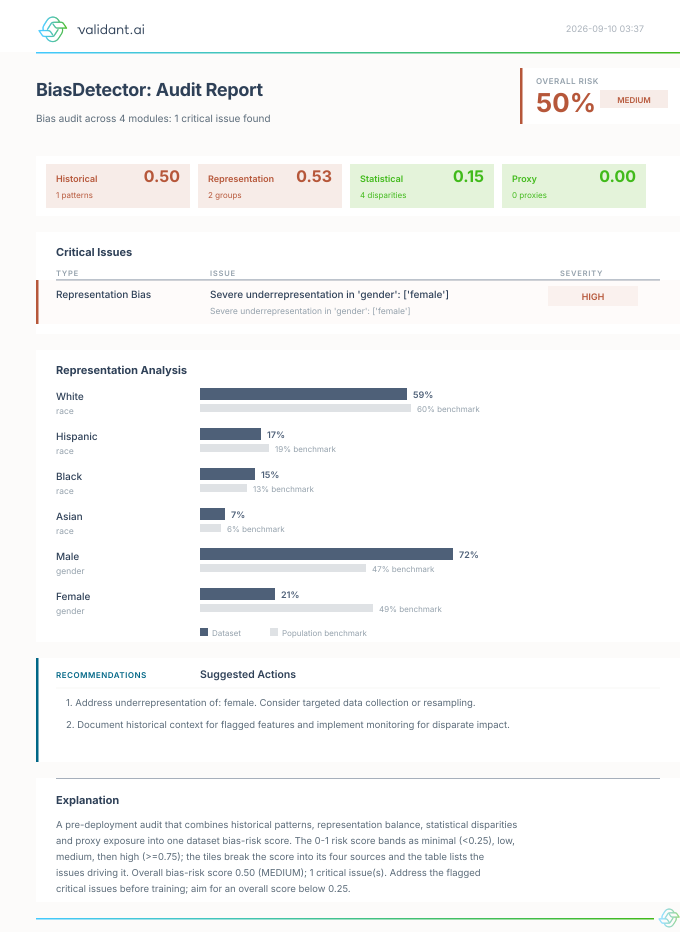
BiasAuditReport across four modules. Overall risk 50% (medium) with one critical issue, and a score per module: historical 0.50, representation 0.53, statistical 0.15, proxy 0.00.
Use BiasDetector before model training to catch data-level bias early.
For post-training fairness evaluation (comparing predictions against ground truth), use
FairnessAnalyzer instead. For CI/CD pipeline integration, combine
BiasDetector findings with DataBiasValidator.
Scope is a separate question from status. A symbol marked Preview is documented and usable, but not yet fully covered and checked by the beta verification programme: the beta bar certifies the core surface, and these sit outside it. A preview symbol can be perfectly well checked, and a core symbol can be unexamined, so the two labels are shown side by side rather than merged. 182 of 1580 code units are preview; what is in each and why is in what the beta covers. Full grid: status of every capability.
Constructor
BiasDetector(
df: pd.DataFrame,
protected_attributes: List[str],
*,
outcome_column: Optional[str] = None,
feature_columns: Optional[List[str]] = None,
benchmarks: Optional[Dict[str, Dict[str, float]]] = None,
config: Optional[Dict[str, Any]] = None,
)['gender', 'race']).None, all non-protected, non-outcome columns are used.{'race': {'White': 0.60, 'Black': 0.13}}).Methods
| Method | Returns | Description |
|---|---|---|
full_audit(**kwargs) |
BiasAuditReport | Run comprehensive bias audit (keyword-only flags: include_historical, include_representation, include_disparities, include_proxies, include_intersectional) |
detect_historical_patterns() |
List[HistoricalPatternResult] | Scan for 43 historical discrimination patterns across US, EU, EU AI Act & Swiss jurisdictions |
detect_representation_bias() |
List[RepresentationBiasResult] | Analyze group representation |
analyze_disparities() |
List[StatisticalDisparityResult] | Statistical disparity analysis |
identify_proxies() |
List[ProxyVariableResult] | Find proxy variables |
Example
from vfairness import BiasDetector
import pandas as pd
# Your data
df = pd.read_csv('loan_applications.csv')
# Define population benchmarks
benchmarks = {
'gender': {'Male': 0.49, 'Female': 0.51},
'race': {'White': 0.60, 'Black': 0.13, 'Hispanic': 0.19, 'Asian': 0.06}
}
# Create detector
detector = BiasDetector(
df,
protected_attributes=['gender', 'race', 'age'],
outcome_column='approved',
benchmarks=benchmarks,
)
# Run full audit
report = detector.full_audit()
# Print summary
print(report.summary())
print(f"Overall Risk Score: {report.overall_risk_score:.1%}")
print(f"Critical Issues: {len(report.critical_issues)}")
# Get high-risk features
for feature in report.get_high_risk_features():
print(f" - {feature}")The overall_risk_score uses manually-chosen weights (not empirically validated). Individual module failures may be silently swallowed.
except Exception: pass patterns, so errors during computation are not surfaced.
The benchmarks parameter requires manually-provided population distributions. The library does not fetch from Census APIs, Eurostat, or BFS.
benchmarks from authoritative sources for your jurisdiction and domain. Example:benchmarks={'gender': {'male': 0.49, 'female': 0.48, 'non-binary': 0.03}}
Historical Pattern Detection
Detects features linked to historical discrimination patterns. The library ships with 43 curated patterns spanning four jurisdictions, including EU AI Act (Regulation 2024/1689) compliance detection.
Pattern Catalog Overview
| Region | Count | Risk Levels | Key Patterns |
|---|---|---|---|
| US / Global | 12 | Critical, High, Medium | Redlining, credit history, healthcare cost, criminal records, names |
| European | 12 | Critical, High, Medium | Migration background, SCHUFA scoring, predictive policing, biometrics |
| EU AI Act | 11 | 4 Critical (Art. 5), 7 High (Annex III) | Social scoring, emotion recognition, creditworthiness, recruitment |
| Swiss | 8 | Critical, High, Medium | Permit system, Betreibungsregister, housing discrimination, Gemeinde |
EU AI Act Compliance
When detect_historical_patterns() finds features matching EU AI Act prohibited practices (Art. 5), they are flagged as CRITICAL risk with penalties up to €35M / 7% turnover. High-risk Annex III matches carry €15M / 3% turnover penalties.
How Historical Detection Works
The function iterates over every column in the DataFrame, normalises the name, and matches it against keyword lists in the 43-pattern catalog. Each matched column is scored and enriched with context before being returned. The full pipeline is:
- Normalise column name — the column name is lowercased and transformed two ways:
col_lower(underscores/hyphens → spaces) andcol_normalized(spaces/hyphens → underscores). - Keyword matching — for each of the 43 patterns, every keyword is tested against the normalised name via substring match or exact normalised match. First keyword hit wins, and each column maps to at most one pattern.
- Base confidence score — assigned based on match quality: exact name match (+0.6), long keyword ≥ 6 chars (+0.5), or short keyword (+0.4).
- Risk-level boost — CRITICAL patterns get +0.15, HIGH patterns get +0.10.
- Value analysis boost (if enabled) — geographic patterns with 10–1 000 unique values get +0.10; name patterns with > 100 unique values get +0.10.
- Correlation boost (if
protected_attributesprovided) — if the Pearson correlation between the encoded feature and any protected attribute exceeds |0.3|, confidence gets +0.20. - Confidence threshold gate — if the final confidence <
min_confidence(default 0.3), the match is discarded. - Build result — risk level, affected groups, recommendations, and historical context are copied from the pattern catalog. Evidence dict stores matched keyword, cardinality, sample values, and correlations.
- Sort and return — results are sorted by risk level (CRITICAL first), then by descending confidence.
Detection Decision Tree
The diagram below shows the full decision flow for each column in the DataFrame. Click the diagram to zoom & pan.
+ custom_patterns (if any)"] MERGE --> LOOP["For each column in df"] LOOP --> NORM["Normalise column name
col_lower: _ → space
col_normalized: space → _"] NORM --> SCAN["For each pattern
(43 categories)"] SCAN --> KW{"Keyword
match?"} KW -->|"substring in col_lower
OR exact == col_normalized"| MATCH["✓ Matched
(first keyword wins)"] KW -->|"No match in
any keyword"| NEXT{"More
patterns?"} NEXT -->|"Yes"| SCAN NEXT -->|"No"| SKIPCOL["Column not flagged"] MATCH --> BASE{"Match
quality?"} BASE -->|"Exact name match"| B06["+0.60"] BASE -->|"Long keyword ≥ 6 chars"| B05["+0.50"] BASE -->|"Short keyword < 6 chars"| B04["+0.40"] B06 --> RBOOST B05 --> RBOOST B04 --> RBOOST RBOOST{"Pattern
risk level?"} RBOOST -->|"CRITICAL"| RC["+0.15"] RBOOST -->|"HIGH"| RH["+0.10"] RBOOST -->|"MEDIUM / LOW"| RN["+0.00"] RC --> VCHECK RH --> VCHECK RN --> VCHECK VCHECK{"Value analysis
enabled?"} VCHECK -->|"No"| CORRCHECK VCHECK -->|"Yes"| VTYPE{"Pattern
type?"} VTYPE -->|"Geographic &
10–1000 uniques"| VG["+0.10"] VTYPE -->|"Name &
>100 uniques"| VN["+0.10"] VTYPE -->|"Other"| V0["+0.00"] VG --> CORRCHECK VN --> CORRCHECK V0 --> CORRCHECK CORRCHECK{"Protected attrs
provided?"} CORRCHECK -->|"No"| GATE CORRCHECK -->|"Yes"| CORRCALC["Compute Pearson r
vs each protected attr"] CORRCALC --> CTEST{"|r| > 0.3?"} CTEST -->|"Yes"| CBOOST["+0.20"] CTEST -->|"No"| C0["+0.00"] CBOOST --> GATE C0 --> GATE GATE{"confidence
≥ min_confidence?"} GATE -->|"No"| DISCARD["⛔ Discard match"] GATE -->|"Yes"| BUILD["Build
HistoricalPatternResult"] BUILD --> RESULT(["Add to results list
(risk level, context,
groups, recommendations)"]) SKIPCOL --> NEXTCOL DISCARD --> NEXTCOL RESULT --> NEXTCOL NEXTCOL{"More
columns?"} NEXTCOL -->|"Yes"| LOOP NEXTCOL -->|"No"| SORT(["Sort by risk level ↓
then confidence ↓
Return results"])
Confidence Score Breakdown
The confidence score (0.0–1.0, capped) is built additively from four independent signal sources:
| Stage | Condition | Points | Example |
|---|---|---|---|
| A. Match quality | Exact column name = keyword | +0.60 | Column zip_code matches keyword zip_code |
| Long keyword ≥ 6 chars (partial) | +0.50 | Column applicant_zip_code_region contains zip_code |
|
| Short keyword < 6 chars (partial) | +0.40 | Column home_zip contains zip |
|
| B. Risk boost | Pattern risk = CRITICAL | +0.15 | Criminal records, migration background, EU AI Act Art. 5 |
| Pattern risk = HIGH | +0.10 | Redlining, salary history, EU AI Act Annex III | |
| Pattern risk = MEDIUM / LOW | +0.00 | Neighbourhood names, digital access | |
| C. Value analysis | Geographic pattern with 10–1 000 unique values | +0.10 | zip_code with 250 distinct values |
| Name pattern with > 100 unique values | +0.10 | surname with 1 800 unique names |
|
| D. Correlation boost | |Pearson r| > 0.3 with any protected attribute | +0.20 | zip_code correlates with race at r = 0.65 |
Maximum possible score: 1.00 (capped). Minimum to survive the gate: min_confidence (default 0.3).
Functions
Analyze dataset columns to identify features linked to known patterns of historical discrimination (redlining, segregation, employment discrimination, EU AI Act prohibited practices, etc.).
from vfairness.preprocessing.bias_detection import detect_historical_patterns, HISTORICAL_RISK_PATTERNS
results = detect_historical_patterns(
df,
protected_attributes=['race', 'gender'],
min_confidence=0.3,
include_value_analysis=True
)
for result in results:
print(f"{result.feature}: {result.risk_level.value.upper()}")
print(f" Pattern: {result.pattern_type}")
print(f" Context: {result.historical_context}")
print(f" Affected groups: {result.affected_groups}")
print(f" Recommendations: {result.recommendations}")HISTORICAL_RISK_PATTERNS.List[HistoricalPatternResult] — sorted by risk level (critical first). Each result is a dataclass with the fields below.
Structured cross-walk from a protected attribute and a regulated domain to the canonical documented historical-discrimination pattern. Used by the Pulse orchestrator to attach a citation-backed historicalPattern envelope onto bias findings so the Validant frontend can route them into the “Historical pattern” channel without keyword-matching evidence text. Citations are pulled by reference from _DOMAIN_HISTORICAL_PRECEDENT; unknown combinations return None (silence beats invention).
from vfairness import attribute_historical_pattern
attribute_historical_pattern("race", "lending")
# {
# "pattern_id": "lending_race_redlining",
# "label": "Race in lending (redlining)",
# "summary": "Credit-allocation models inherit decades of redlining; ...",
# "citations": ["Rothstein (2017), 'The Color of Law'",
# "Bartlett et al. (2022), JFE"],
# "attribute_class": "race",
# "domain": "lending",
# "jurisdiction": "",
# }
attribute_historical_pattern("age", "hiring") # -> hiring_age (ADEA / EU 2000/78)
attribute_historical_pattern("gender", "insurance") # -> insurance_gender (Test-Achats 2011)
attribute_historical_pattern("religion", "education") # -> NoneRace / Ethnicity, race_ethnicity, skin_colour, sex, gender_identity, age_group, dob, zip, postcode, neighbourhood, census_tract all resolve to their canonical attribute class.domain_historical_context(): recruitment/employment → hiring, credit/loan → lending, medical/clinical → healthcare, recidivism/criminal → justice. Empty / unknown domains return None.Optional[Dict[str, Any]] with pattern_id, label, summary, citations, attribute_class, domain, jurisdiction — or None when the combination has no documented precedent.
Coverage (24 documented pairs): race × {hiring, lending, healthcare, justice, insurance, education}; gender × {hiring, lending, healthcare, insurance, education}; age × {hiring, lending, insurance}; national_origin × {hiring, lending}; religion × {hiring, lending}; disability × {hiring, healthcare, insurance}; geographic-proxy (zip / postcode / neighbourhood / census tract) × {lending, insurance, healthcare}.
HistoricalPatternResult Fields
| Field | Type | Description |
|---|---|---|
feature |
str | Column name that matched |
risk_level |
HistoricalRiskLevel | Enum: critical, high, medium, low, none |
pattern_type |
str | Category (e.g., "PROHIBITED — Emotion Recognition (Art. 5(1)(f))") |
description |
str | Human-readable description of the finding |
confidence |
float | Match confidence (0.0–1.0) |
historical_context |
str | Academic and legal background explaining the risk |
affected_groups |
List[str] | Demographics historically impacted |
recommendations |
List[str] | Mitigation steps with regulatory references |
evidence |
Dict[str, Any] | Supporting evidence for the detection (keyword matched, correlation data, etc.) |
Pattern detection matches column names against keyword lists via substring search. It does not use NLP, embeddings, or semantic analysis.
postal_region_id may be missed if only zip and postcode are in the keyword list. Confidence scores are heuristic-based and not probability-calibrated.
HISTORICAL_RISK_PATTERNS dict to inspect the exact keywords for each pattern. Rename ambiguous columns to match expected keywords before running detection.
Geographic Discrimination Data
Integration with historical geographic discrimination databases including HOLC redlining maps (1930s–40s) and CDC Social Vulnerability Index.
How Geographic Risk Assessment Works
The core function assess_geographic_feature_risk() evaluates whether a list of geographic identifiers (currently ZIP codes) overlaps with historically discriminatory areas. The pipeline is:
- Feature-type gate — only
'zip_code'is supported. Any other type warns and returns immediately withrisk_score = NaNanddisparate_impact_risk = 'unknown'. It is not scored 0: nothing was measured. - HOLC grade lookup — each value is matched against a built-in ZIP → HOLC grade dictionary covering ~57 ZIP codes across 39 US cities (Atlanta, Baltimore, Birmingham, Boston, Brooklyn, Buffalo, Chicago, Cleveland, Columbus, Dallas, Denver, Detroit, Hartford, Houston, Indianapolis, Jacksonville, Kansas City, Los Angeles, Louisville, Memphis, Miami, Milwaukee, Minneapolis, Nashville, New Orleans, New York, Oakland, Philadelphia, Pittsburgh, Portland, Providence, Richmond, Sacramento, San Antonio, San Francisco, Seattle, St. Louis, Tampa, Washington DC). Unmatched ZIPs are counted as
Unknown. - Coverage calculation —
holc_coverage = known_count / total, whereknown_countexcludesUnknown. - Weighted risk score — each grade carries a weight: D = 1.0, C = 0.7, B = 0.3, A = 0.0. The score is the weighted average across the resolved values only (divided by
known_count, not by the row count). An unresolved ZIP is could-not-check, not grade A; when none resolve the score isNaNand the verdict'unknown'. - Disparate impact level — derived from the risk score using fixed thresholds (see table below). When
holc_coverageis under 50% the verdict carries its own basis in the string, for example'critical (on 10.0% of rows with HOLC data; 900 of 1000 unresolved)', so a level resting on a minority of rows cannot be read as resting on all of them. - Recommendations — generated conditionally based on the risk level and HOLC coverage.
Risk Assessment Decision Tree
The diagram below shows the full decision flow of assess_geographic_feature_risk(). Click the diagram to zoom & pan.
== 'zip_code'?"} FTYPE -->|"No"| UNSUP["⛔ Return risk_score=NaN
disparate_impact='unknown'"] FTYPE -->|"Yes"| EMPTY{"values
empty?"} EMPTY -->|"Yes"| NOVAL["⛔ Return risk_score=NaN
'No values to analyze'"] EMPTY -->|"No"| LOOKUP["For each ZIP:
lookup_holc_grade_by_zip()"] LOOKUP --> COUNT["Count grades:
A, B, C, D, Unknown"] COUNT --> COV["holc_coverage =
(A+B+C+D) / total"] COV --> ANYKNOWN{"known_count
> 0?"} ANYKNOWN -->|"No"| UNRES["⛔ risk_score=NaN
disparate_impact='unknown'
(never 'low')"] ANYKNOWN -->|"Yes"| WSCORE["Weighted risk score =
Σ(count × weight) / known_count
(resolved rows only)"] WSCORE --> WEIGHTS["Weights:
D=1.0 · C=0.7 · B=0.3 · A=0.0"] WEIGHTS --> AFFECTED["affected_samples =
count(C) + count(D)"] AFFECTED --> RISK{"risk_score
threshold?"} RISK -->|"≥ 0.5"| CRIT["🚨 CRITICAL"] RISK -->|"0.3 – 0.5"| HIGH["🔴 HIGH"] RISK -->|"0.1 – 0.3"| MED["🟡 MEDIUM"] RISK -->|"< 0.1"| LOW["🟢 LOW"] CRIT --> QUAL HIGH --> QUAL MED --> QUAL LOW --> QUAL QUAL{"holc_coverage
< 50%?"} QUAL -->|"Yes"| QUALIFY["Qualify the verdict in place:
'critical (on 10.0% of rows with
HOLC data; 900 of 1000 unresolved)'"] QUAL -->|"No"| RECS QUALIFY --> RECS UNRES --> RECS RECS{"Generate
recommendations"} RECS --> RECD{"Any Grade D
samples?"} RECD -->|"Yes"| RECWARN["⚠️ '{pct}% from redlined
Grade D areas'"] RECD -->|"No"| RECLEVEL RECWARN --> RECLEVEL RECLEVEL{"Risk level?"} RECLEVEL -->|"critical / high"| RECCH["'Remove/aggregate feature'
'Test for geo disparities'
'Apply fairness constraints'"] RECLEVEL -->|"medium"| RECM["'Monitor for disparities'
'Consider broader aggregation'"] RECLEVEL -->|"low"| RECL["(no extra recs)"] RECCH --> COVCHECK RECM --> COVCHECK RECL --> COVCHECK COVCHECK{"holc_coverage
< 50%?"} COVCHECK -->|"Yes"| COVREC["⚠️ 'Supplement with
other risk indicators'"] COVCHECK -->|"No"| RESULT COVREC --> RESULT RESULT(["GeographicRiskAssessment"])
HOLC Redlining Grades
The Home Owners' Loan Corporation (HOLC) graded neighbourhoods in US cities between 1935–1940. These grades systematically disadvantaged minority communities and their effects persist today.
| Grade | Colour | HOLC Label | Description | Weight |
|---|---|---|---|---|
| A | Green | "Best" | Predominantly white, affluent neighbourhoods deemed safest for lending. | 0.0 |
| B | Blue | "Still Desirable" | Generally white, middle-class areas considered stable. | 0.3 |
| C | Yellow | "Definitely Declining" | Immigrant and mixed-race areas flagged as risky for investment. | 0.7 |
| D | Red | "Hazardous" | Predominantly Black / minority neighbourhoods — redlined. Banks refused mortgages. | 1.0 |
Risk Score Thresholds
The weighted risk score (over the resolved rows only) is mapped to a disparate impact level using the following thresholds. Below 50% HOLC coverage the level is returned with its basis appended, for example 'high (on 30.0% of rows with HOLC data; 700 of 1000 unresolved)', so disparate_impact_risk is not always one of the bare words below.
| Risk Level | Score Range | Interpretation |
|---|---|---|
| CRITICAL | ≥ 0.5 | Majority of samples from Grade C/D areas. Feature very likely perpetuates redlining effects. |
| HIGH | 0.3 – 0.5 | Significant overlap with historically discriminated areas. Strongly consider removing the feature. |
| MEDIUM | 0.1 – 0.3 | Some overlap detected. Monitor model outcomes for geographic disparities. |
| LOW | < 0.1 | Minimal overlap with redlined areas. Low risk of perpetuating geographic discrimination. |
| UNKNOWN | NaN |
Nothing could be scored: no value resolved to a HOLC grade, no values were given, or the feature type is not 'zip_code'. A third state, never folded into LOW. |
CDC Social Vulnerability Index Themes
The SVI provides contemporary area-level vulnerability data for the entire United States. Four themes are available via SVI_THEMES:
| Theme | Indicators |
|---|---|
| Socioeconomic Status | Below poverty line, unemployed, low income, no high school diploma |
| Household Composition & Disability | Aged 65+, under 17, disability, single-parent households |
| Minority Status & Language | Minority population, limited English proficiency |
| Housing & Transportation | Multi-unit structures, mobile homes, crowding, no vehicle, group quarters |
GeographicRiskAssessment Fields
| Field | Type | Description |
|---|---|---|
feature_name | str | Type of geographic feature assessed (e.g. 'zip_code'). |
risk_score | float | Weighted risk score (0.0–1.0) based on HOLC grade distribution. |
holc_coverage | float | Fraction of input values that could be matched to HOLC grades. |
grade_distribution | Optional[Dict] | Proportion of values in each HOLC grade (A, B, C, D, Unknown). |
affected_samples | int | Count of values in Grade C or D areas. |
disparate_impact_risk | str | Risk level: 'critical', 'high', 'medium', or 'low'. |
recommendations | List[str] | Context-specific remediation advice. |
data_sources_used | List[str] | Data sources used (e.g. ['HOLC Redlining Maps (Mapping Inequality Project)']). |
Data Quality Notes
- Temporal: HOLC maps are 80+ years old. Demographics have changed, but discriminatory effects persist in property values, school funding, and environmental exposure.
- Spatial precision: HOLC boundaries are hand-drawn and do not align with ZIP codes or census tracts. The ZIP-to-grade mapping is an approximation.
- Coverage: Only ~57 ZIP codes across 39 US cities are in the built-in database. Rural areas were never surveyed.
- Recommendation: Use HOLC data as one signal among many. Supplement with contemporary data (CDC SVI, ACS, HMDA) and validate locally with domain experts.
Functions
List all US cities with available HOLC redlining map data from the Mapping Inequality project.
get_available_holc_cities() -> List[str]List[str] — City names with HOLC data in City_State format (e.g., ['Atlanta_GA', 'Baltimore_MD', 'Birmingham_AL', 'Boston_MA', ...]). 39 cities total.
Look up the approximate HOLC redlining grade for a US ZIP code.
lookup_holc_grade_by_zip(
zip_code: str
) -> Optional[HOLCGrade]'48201').Optional[HOLCGrade] — HOLC grade enum (A="Best", B="Still Desirable", C="Declining", D="Hazardous") or None if ZIP not in database.
Assess whether a geographic feature (e.g., ZIP codes) encodes disparate impact risk based on historical redlining data.
assess_geographic_feature_risk(
values: List[str],
feature_type: str = 'zip_code'
) -> GeographicRiskAssessment'zip_code' is supported; any other value warns and returns risk_score = NaN with the verdict 'unknown'.GeographicRiskAssessment — includes risk_score (the weighted average over the resolved rows, NaN when none resolve), holc_coverage, grade_distribution, affected_samples, disparate_impact_risk ('low' / 'medium' / 'high' / 'critical', 'unknown' when nothing was scored, or a qualified string such as 'critical (on 10.0% of rows with HOLC data; 900 of 1000 unresolved)' when coverage is under 50%), and recommendations.
CDC Social Vulnerability Index
from vfairness.preprocessing.bias_detection import SVI_THEMES, get_svi_data_url
# View available themes
for theme, desc in SVI_THEMES.items():
print(f"{theme}: {desc}")
# Get download URL for SVI data
url = get_svi_data_url(year=2022)HOLC data covers ~57 ZIP codes across 39 US cities. The CDC SVI is also US-only. For non-US jurisdictions, build custom geographic risk datasets using sources such as Eurostat NUTS regions, Swiss BFS Gemeindetypologie, or UK Index of Multiple Deprivation.
Representation Bias Detection
Detects under- and overrepresentation of demographic groups by comparing dataset distributions against population benchmarks.
How Representation Detection Works
The function analyses each protected attribute independently, then optionally checks intersectional combinations. For every attribute the pipeline is:
- Resolve the benchmark — if the caller supplies a
benchmarksdict, use it; otherwise fall back to the built-in US Census 2020 approximate defaults (gender, race, age_group). If neither exists, a uniform-distribution heuristic is used. - Compute actual distribution —
value_counts(normalize=True)after dropping NaN values. - Compute representation ratios — for each group:
ratio = actual_proportion / expected_proportion. - Flag underrepresented groups — groups with
ratio < underrepresentation_threshold(default 0.8). The deficit in absolute sample count is also computed. - Flag overrepresented groups — groups with
ratio > overrepresentation_threshold(default 1.2). - Chi-squared goodness-of-fit test — compares observed vs expected counts using
scipy.stats.chisquare. Returns(None, None)if fewer than 2 common groups or any expected count ≤ 0. - Determine severity — based on the lowest ratio among underrepresented groups (see thresholds table below).
- Generate recommendations — severity-specific remediation advice, plus lists of underrepresented and overrepresented group names.
- Intersectional analysis (if enabled and ≥ 2 attributes) — creates compound groups (e.g.
black_female), computes expected proportions under independence (product of marginals), flags groups withratio < thresholdorratio < 0.5.
Detection Decision Tree
The diagram below shows the full decision flow for each protected attribute. Click the diagram to zoom & pan.
in df?"} EXISTS -->|"No"| SKIP["⛔ Skip attribute"] EXISTS -->|"Yes"| BENCH{"Benchmark
available?"} BENCH -->|"User-provided"| USERBENCH["Use caller's
benchmark dict"] BENCH -->|"Not provided"| FALLBACK{"Built-in
default?"} FALLBACK -->|"Yes (gender,
race, age_group)"| DEFAULTBENCH["Use US Census
2020 approx."] FALLBACK -->|"No"| UNIFORM["Use uniform
1 / num_groups"] USERBENCH --> DIST DEFAULTBENCH --> DIST UNIFORM --> NODIST DIST["Compute actual distribution
value_counts(normalize=True)"] DIST --> RATIO["For each group:
ratio = actual / expected"] RATIO --> UNDER{"ratio <
under_threshold?"} UNDER -->|"Yes"| UFLAG["Flag underrepresented
+ compute deficit"] UNDER -->|"No"| OVER{"ratio >
over_threshold?"} OVER -->|"Yes"| OFLAG["Flag overrepresented
+ compute surplus"] OVER -->|"No"| OK["✓ Within
acceptable range"] UFLAG --> CHI OFLAG --> CHI OK --> CHI CHI["Chi-squared
goodness-of-fit test"] CHI --> CHIOK{"≥ 2 groups &
expected > 0?"} CHIOK -->|"Yes"| CHIRES["Compute χ² statistic
+ p-value"] CHIOK -->|"No"| CHINONE["χ² = None
p-value = None"] CHIRES --> SEV CHINONE --> SEV SEV{"Lowest underrep.
ratio?"} SEV -->|"< 0.5"| SEVCRIT["🚨 CRITICAL"] SEV -->|"0.5 – 0.7"| SEVHIGH["🔴 HIGH"] SEV -->|"0.7 – 0.8"| SEVMED["🟡 MEDIUM"] SEV -->|"≥ 0.8 but flagged"| SEVLOW["🟢 LOW"] SEV -->|"No underrep."| SEVOK["✓ ADEQUATE"] SEVCRIT --> RECS SEVHIGH --> RECS SEVMED --> RECS SEVLOW --> RECS SEVOK --> RECS RECS["Generate severity-specific
recommendations"] RECS --> RESULT(["RepresentationBiasResult"]) NODIST["No-benchmark fallback:
check for severe imbalance"] NODIST --> IMBAL{"Any group < 10%
AND any > 40%?"} IMBAL -->|"Yes"| IMFLAG["Flag small groups
as underrepresented
(vs uniform dist.)"] IMBAL -->|"No"| IMOK["No flags"] IMFLAG --> SEV IMOK --> SEV RESULT --> INTER{"include_intersectional
AND ≥ 2 attrs?"} INTER -->|"No"| DONE INTER -->|"Yes"| ICOMB["Create compound groups
(e.g. black_female)"] ICOMB --> IEXP["Expected = product
of marginal proportions"] IEXP --> IRATIO["ratio = actual / expected"] IRATIO --> ICHECK{"ratio < threshold
OR ratio < 0.5?"} ICHECK -->|"Yes"| IFLAG["Add intersectional finding
(critical if ratio < 0.3)"] ICHECK -->|"No"| ISKIP["Not flagged"] IFLAG --> IATTACH["Attach top 10 findings
to first matching result"] ISKIP --> IATTACH IATTACH --> DONE DONE(["Return results list"])
Severity Thresholds
Severity is determined by the lowest representation ratio among all underrepresented groups for a given attribute.
| Severity | Ratio Range | Meaning | Example |
|---|---|---|---|
| CRITICAL | < 0.5 | Group has less than half the expected representation. Severe risk of model blindness. | Expected 13% Black, actual 4% → ratio 0.31 |
| HIGH | 0.5 – 0.7 | Significant underrepresentation. Model performance likely degraded for this group. | Expected 19% Hispanic, actual 11% → ratio 0.58 |
| MEDIUM | 0.7 – 0.8 | Moderate gap. May affect fairness metrics at the margins. | Expected 6% Asian, actual 4.5% → ratio 0.75 |
| LOW | 0.8 – threshold | Slight underrepresentation within acceptable monitoring range. | Expected 51% Female, actual 45% → ratio 0.88 |
| ADEQUATE | ≥ threshold | No underrepresented groups detected. Distribution within acceptable bounds. | All groups within 80–120% of benchmark |
Intersectional Analysis
When include_intersectional=True and at least 2 protected attributes are provided, the function creates compound groups (e.g. black_female) and checks whether they are represented as expected under statistical independence.
- Concatenate attribute values into a single column (e.g.
black_female). - Compute marginal proportions for each attribute independently.
- For each compound group with at least
min_group_sizerows, computeexpected = marginal_A × marginal_B. - Flag if
ratio < underrepresentation_thresholdorratio < 0.5(hard floor). Severity:criticalif ratio < 0.3, elsehigh. - Return the top 10 most underrepresented intersectional groups, sorted by ratio ascending.
Expected intersectional proportions are computed as the product of marginals, assuming the two attributes are statistically independent. In practice, attributes often correlate (e.g. race × income), so the expected proportion may not reflect the true population. Treat intersectional findings as screening flags, not ground truth.
RepresentationBiasResult Fields
| Field | Type | Description |
|---|---|---|
attribute | str | Protected attribute name analysed. |
severity | RepresentationSeverity | Enum: critical, high, medium, low, adequate, overrepresented. |
group_distributions | Dict[str, float] | Actual proportion of each group in the dataset. |
representation_ratios | Dict[str, float] | Ratio of actual to expected proportion per group. |
underrepresented_groups | List[Dict] | Groups below the threshold, with group, ratio, actual_proportion, expected_proportion, deficit. |
overrepresented_groups | List[Dict] | Groups above the upper threshold, with surplus count. |
sample_size | int | Total non-NaN rows analysed. |
chi_squared_statistic | Optional[float] | χ² goodness-of-fit statistic (None if test could not run). |
chi_squared_pvalue | Optional[float] | p-value from the χ² test. |
recommendations | List[str] | Severity-specific remediation advice. |
intersectional_findings | List[Dict] | Top 10 underrepresented compound groups (if enabled). |
benchmark_source | Optional[str] | Label describing the benchmark origin (e.g., 'user_provided', 'us_census_2020', or None). |
Functions
Compare group distributions against expected population benchmarks.
from vfairness.preprocessing.bias_detection import detect_representation_bias
results = detect_representation_bias(
df,
protected_attributes=['race', 'gender'],
benchmarks={
'race': {'white': 0.60, 'black': 0.13, 'hispanic': 0.19, 'asian': 0.06},
'gender': {'male': 0.49, 'female': 0.51}
},
underrepresentation_threshold=0.8,
include_intersectional=True
)List[RepresentationBiasResult] — one result per protected attribute with group distributions, representation ratios, chi-squared test, and intersectional findings.
Detailed comparison of a single attribute's distribution against a specific benchmark.
compare_to_benchmark(
df: pd.DataFrame,
attribute: str,
benchmark: Dict[str, float],
*,
visualize: bool = False
) -> Dict[str, Any]{group: proportion}. Must sum to ≈1.0.Dict[str, Any] — Contains representation_ratios, chi_squared_statistic, p_value, statistically_significant, and per-group deviation details.
Statistical Disparity Analysis
Comprehensive statistical analysis of outcome disparities across protected attributes, combining multiple statistical tests with effect size measurement and multiple-testing correction.
Disparity Types
Every result returned by analyze_statistical_disparities() carries a disparity_type field from the DisparityType enum. The type tells you what kind of inequality was detected and guides your remediation strategy.
| Disparity Type | Enum Value | What it tests | Example | Typical Action |
|---|---|---|---|---|
| Outcome | DisparityType.OUTCOME |
Are decision / prediction rates different across demographic groups? Tests columns you specify as outcome_columns (or auto-detected columns whose names contain keywords like approved, score, prediction). |
Loan approval rate is 72% for group A vs 54% for group B. | Apply fairness constraints, prediction-time calibration, or threshold adjustment. |
| Distribution | DisparityType.DISTRIBUTION |
Do input feature distributions differ across demographic groups? Tests columns that are neither outcomes nor protected attributes — all remaining numeric or low-cardinality categorical features (auto-detected via feature_columns). |
Mean credit score is 720 for group A vs 650 for group B. | Evaluate whether the feature encodes historical bias; consider removing, reweighting, or fair-aware feature engineering. |
| Quality | DisparityType.QUALITY |
Does data quality (missing rates, error rates) differ across groups? Enabled when include_quality_analysis=True. For each column, compares the missing-value rate across demographic groups using a z-test for proportions. |
Column income is missing for 2% of group A but 14% of group B. |
Fix upstream data collection bias; use group-aware imputation strategies. |
| Intersectional | DisparityType.INTERSECTIONAL |
Are there disparities at intersectional subgroup level (e.g., race × gender)? Enabled when include_intersectional=True and at least 2 protected attributes are given. Creates compound groups and tests outcomes across them. |
Approval rate for black + female is 41% vs 78% for white + male. | Targeted review of intersectional subgroups; ensure no compound disadvantage is hidden by single-axis analysis. |
When outcome_columns or feature_columns are None, the function auto-detects them:
Outcomes — columns whose names contain keywords like outcome, approved, score, rating, target, prediction, etc. (up to 10 columns).
Features — all remaining numeric columns plus categorical columns with < 50 unique values (up to 20 columns).
Protected attribute columns are always excluded from both sets.
Test Selection Decision Tree
The function automatically selects the appropriate statistical test based on the data type, number of groups, and the analysis phase. The diagram below shows the full decision flow.
classification"} COLS -->|"outcome_columns
(explicit or auto-detected)"| OC["Outcome columns"] COLS -->|"feature_columns
(explicit or auto-detected)"| FC["Feature columns"] COLS -->|"include_quality_analysis=True"| QC["All columns
(missing rate check)"] COLS -->|"include_intersectional=True
≥ 2 protected attrs"| IC["Outcome columns
× attribute pairs"] OC -->|"DisparityType.OUTCOME"| DT1{"Data type?"} FC -->|"DisparityType.DISTRIBUTION"| DT2{"Data type?"} QC -->|"DisparityType.QUALITY"| ZPROP["Z-test for proportions
(missing rate per group)"] IC -->|"DisparityType.INTERSECTIONAL"| COMPOUND["Create compound groups
(e.g. race_gender)"] COMPOUND --> DT3{"Data type?"} DT1 --> NUM1{"Numeric &
non-binary?"} DT2 --> NUM2{"Numeric &
non-binary?"} DT3 --> NUM3{"Numeric &
non-binary?"} NUM1 -->|"Yes"| GRP1{"# groups?"} NUM1 -->|"No (binary /
categorical)"| CHI1["Chi-squared test
+ Cramér's V"] NUM2 -->|"Yes"| GRP2{"# groups?"} NUM2 -->|"No (binary /
categorical)"| CHI2["Chi-squared test
+ Cramér's V"] NUM3 -->|"Yes"| GRP3{"# groups?"} NUM3 -->|"No (binary /
categorical)"| CHI3["Chi-squared test
+ Cramér's V"] GRP1 -->|"= 2"| TT1["Independent t-test
+ Cohen's d"] GRP1 -->|"≥ 3"| AN1["One-way ANOVA
+ Eta-squared (η²)"] GRP2 -->|"= 2"| TT2["Independent t-test
+ Cohen's d"] GRP2 -->|"≥ 3"| AN2["One-way ANOVA
+ Eta-squared (η²)"] GRP3 -->|"= 2"| TT3["Independent t-test
+ Cohen's d"] GRP3 -->|"≥ 3"| AN3["One-way ANOVA
+ Eta-squared (η²)"] ZPROP --> CORRECT CHI1 --> CORRECT CHI2 --> CORRECT CHI3 --> CORRECT TT1 --> CORRECT TT2 --> CORRECT TT3 --> CORRECT AN1 --> CORRECT AN2 --> CORRECT AN3 --> CORRECT CORRECT{"Multiple-testing
correction"} CORRECT -->|"'fdr_bh'"| FDR["Benjamini-Hochberg
FDR correction"] CORRECT -->|"'bonferroni'"| BONF["Bonferroni
correction"] CORRECT -->|"'none' / None"| NOCORR["No correction"] FDR --> FILTER BONF --> FILTER NOCORR --> FILTER FILTER(["Filter: keep only
significant results
(p < α after correction)"])
Effect Size Interpretation
Effect sizes quantify the practical magnitude of a disparity, independent of sample size. The function selects the appropriate effect size measure based on the test used.
| Effect Size | Used When | Negligible | Small | Medium | Large |
|---|---|---|---|---|---|
| Cohen's d | t-test (2 groups, continuous) | |d| < 0.2 |
0.2 – 0.5 |
0.5 – 0.8 |
|d| ≥ 0.8 |
| Eta-squared (η²) | ANOVA (≥ 3 groups, continuous) | η² < 0.01 |
0.01 – 0.06 |
0.06 – 0.14 |
η² ≥ 0.14 |
| Cramér's V | Chi-squared (categorical / binary) | V < 0.1 |
0.1 – 0.3 |
0.3 – 0.5 |
V ≥ 0.5 |
| Odds Ratio | Binary outcome, 2 groups (via compute_effect_sizes) |
≈ 1.0 |
0.67 – 1.5 |
0.5 – 2.0 |
< 0.5 or > 2.0 |
| Proportion diff. | Quality analysis (missing rate gap) | < 5% — not tested |
> 10% |
— | |
Significance Levels
| Level | Enum Value | P-value Threshold |
|---|---|---|
| Highly Significant | SignificanceLevel.HIGHLY_SIGNIFICANT |
p < 0.001 |
| Significant | SignificanceLevel.SIGNIFICANT |
p < 0.01 |
| Marginally Significant | SignificanceLevel.MARGINALLY_SIGNIFICANT |
p < 0.05 |
| Not Significant | SignificanceLevel.NOT_SIGNIFICANT |
p ≥ 0.05 |
Functions
Run comprehensive statistical disparity analysis across protected attributes. Automatically classifies columns into outcomes, features, and quality checks, selects appropriate statistical tests, and applies multiple-testing correction. See the decision tree above for the full test selection logic.
analyze_statistical_disparities(
df: pd.DataFrame,
protected_attributes: List[str],
outcome_columns: Optional[List[str]] = None,
feature_columns: Optional[List[str]] = None,
*,
significance_level: float = 0.05,
min_group_size: int = 30,
include_quality_analysis: bool = True,
include_intersectional: bool = True,
correction_method: str = 'fdr_bh'
) -> List[StatisticalDisparityResult]None, auto-detected by matching column names against keywords such as approved, score, rating, target, prediction (up to 10 columns). These are tested with DisparityType.OUTCOME.None, all non-protected, non-outcome numeric columns plus categoricals with < 50 unique values are used (up to 20 columns). These are tested with DisparityType.DISTRIBUTION.DisparityType.QUALITY.DisparityType.INTERSECTIONAL. Requires ≥ 2 protected attributes.'fdr_bh' (Benjamini-Hochberg — controls false discovery rate), 'bonferroni' (conservative, controls family-wise error rate), or None / 'none' for no correction.List[StatisticalDisparityResult] — Only statistically significant results (after correction) are returned, sorted by ascending p-value and descending effect size. Each result contains: feature, protected_attribute, disparity_type (see types), test_name, test_statistic, pvalue, significance, effect_size, effect_size_type, effect_interpretation, confidence_interval, group_statistics, privileged_group, disadvantaged_group, disparity_magnitude, sample_sizes, and recommendations.
Convenience function for running a single disparity test between a target column and a protected attribute. Unlike analyze_statistical_disparities(), this tests exactly one column with no auto-detection, no multiple-testing correction, and returns a plain dictionary rather than a list of result objects.
run_disparity_tests(
df: pd.DataFrame,
target: str,
protected_attribute: str,
*,
test_type: str = 'auto'
) -> Dict[str, Any]'auto' is supported, and the test is selected from the data: t-test or one-way ANOVA for a continuous target, chi-squared or Fisher's exact for a categorical one. The test that actually ran is reported in test_name. Any other value raises ConfigurationError: earlier versions accepted 'ttest', 'anova', 'chi2' and 'mannwhitney' and silently ignored them, so a request for one test could return another under the requested name.Dict[str, Any] — Dictionary with keys: feature, protected_attribute, disparity_type, test_name, test_statistic, pvalue, significance, effect_size, effect_size_type, effect_interpretation, confidence_interval, group_statistics, privileged_group, disadvantaged_group, disparity_magnitude, sample_sizes, recommendations. Returns {'error': '...', 'target': '...'} if the test cannot be run.
Compute multiple effect size measures for group differences on a single column. Automatically selects the appropriate measures based on data type: Cohen's d and eta-squared for continuous data, Cramér's V and odds ratio for categorical/binary data. See the effect size interpretation table for threshold values.
compute_effect_sizes(
df: pd.DataFrame,
target_column: str,
protected_attribute: str
) -> Dict[str, Any]Dict[str, Any] — Dictionary with target, protected_attribute, and effect_sizes sub-dictionary. For continuous targets: cohens_d (2 groups) and eta_squared. For categorical targets: cramers_v and odds_ratio (binary 2-group only). Each entry has value (float) and interpretation (string).
StatisticalDisparityResult
Dataclass returned by analyze_statistical_disparities(). Each instance represents one statistically significant finding.
| Field | Type | Description |
|---|---|---|
feature | str | Column name tested. |
protected_attribute | str | Protected attribute used for grouping. |
disparity_type | DisparityType | One of OUTCOME, DISTRIBUTION, QUALITY, INTERSECTIONAL. |
test_name | str | Name of statistical test used (e.g. "Independent t-test", "Chi-squared test"). |
test_statistic | float | Test statistic value. |
pvalue | float | P-value (after correction if correction_method was set). |
significance | SignificanceLevel | Interpreted significance level. |
effect_size | float | Estimated effect size. |
effect_size_type | str | "Cohen's d", "Eta-squared", "Cramér's V", or "Proportion difference". |
effect_interpretation | EffectSizeInterpretation | NEGLIGIBLE, SMALL, MEDIUM, or LARGE. |
confidence_interval | Tuple[float, float] | 95% CI for the effect (mean diff or proportion diff). (None, None) for multi-group tests. |
group_statistics | Dict[str, Dict] | Per-group stats: mean, std, median, n (continuous) or positive_rate, n (binary). |
privileged_group | str | Group with the higher mean / positive rate. |
disadvantaged_group | str | Group with the lower mean / positive rate. |
disparity_magnitude | float | Absolute difference between privileged and disadvantaged groups. |
sample_sizes | Dict[str, int] | Number of observations per group. |
recommendations | List[str] | Actionable recommendations based on disparity type and severity. |
Schema Typology (Pre-Flight Gate)
detect_protected_attributes() only finds protected columns. classify_column_roles() classifies every column so the engine knows what may legitimately feed a model, what is the answer key, and what must never enter a model at all. It is the pre-flight gate behind Pulse's schema check and the Navigator's profiling step.
| Role | Meaning |
|---|---|
identity_pii | Names, email, phone, address, photo, date of birth, near-unique IDs — must never be a feature. |
oracle | The ground-truth / target answer key — scored on, never a feature. |
model_output | The model's own decision / score / probability. |
protected | A protected attribute (the user's declaration is authoritative). |
proxy_candidate | Correlates with a protected attribute, or a known proxy-shaped name (zip, university tier, tenure gap) — kept as a feature but flagged. |
job_relevant | A legitimate predictor with no PII / protected / output signal. |
unknown | Constant / empty column. |
This is the answer to "we don't even collect race" (it finds the proxies) and to "did we accidentally train on the applicant's name or the answer key" (it refuses). A user-declared protected set is trusted but verified: an undeclared column that looks protected (e.g.
marital_status, veteran_status) is surfaced as a mismatch to confirm, never silently reclassified. Supports EU AI Act Art. 10 (data governance) and data minimisation.
Refuse-Fast
If a declared target column does not exist, or the dataset is entirely identifiers / answer keys (nothing legitimate to assess), the result carries refuse=True with a plain refuse_reason — the caller stops before producing a misleading verdict.
Functions
Classify every column's role and surface identity/PII & oracle leakage plus declared-vs-inferred mismatches. Shared by Pulse and the Navigator profiling step (one source of truth).
from vfairness import classify_column_roles
schema = classify_column_roles(
df,
declared_protected=['age', 'gender', 'race_ethnicity'],
declared_prediction='invite_decision',
declared_target='hired', # optional oracle
)
print(schema['pii_leakage']) # ['first_name', 'date_of_birth', ...]
print(schema['proxy_candidates']) # ['zip_minority_majority', ...]
for m in schema['mismatches']:
print(m['column'], '->', m['inferred'], '-', m['detail'])
if schema['refuse']:
print('STOP:', schema['refuse_reason'])Returns a dict: roles (list of ColumnRole: column / role / confidence / reason / category), plus buckets pii_leakage, oracle_columns, model_output, protected, proxy_candidates, job_relevant, unknown, the mismatches list, and the refuse / refuse_reason gate.
Group-Size Reliability Tiers
A single n ≥ 30 cut-off hides the difference between a 31-person group (read with caution) and a 9-person group (the 95% margin of error exceeds the metric). group_reliability() assigns one shared tier per group, used identically by Pulse, the Navigator, and the Modules so every per-group number carries the same honesty flag.
| Tier | Size | Treatment |
|---|---|---|
reliable | n ≥ 100 | Report normally. |
caution | 30–99 | Report, note the wider confidence interval. |
underpowered | 10–29 | Report greyed, "small sample — indicative only". |
invalid | n < 10 | Do not interpret the rate — shown, never ranked, excluded from the verdict. |
group_reliability(sizes) returns {group: {n, tier, interpretable, note}}; reliability_tier(n) is the scalar form. Thresholds follow the Fairlearn small-group convention and the Turing M3 minimum-reporting guidance.
Selection-Rate Disparity
selection_rate_disparity_matrix() reports, per group, the selection rate with a 95% confidence interval (forest-plot ready), n, and reliability tier; plus the full group×group ratio and difference matrices and the worst pair.
Functions
Per-group rate + CI + tier and the group×group ratio/difference grid. Shared by Pulse and the Navigator metrics handler.
from vfairness import selection_rate_disparity_matrix
m = selection_rate_disparity_matrix(y_pred, race)
print(m['min_ratio'], m['min_ratio_pair']) # worst adverse-impact pair
print(m['rates']['Black']) # {rate, ci_low, ci_high, n, tier, interpretable}
print(m['ratio_matrix']['Black']['White']) # rate(Black)/rate(White)Returns groups, rates, ratio_matrix, difference_matrix, reference_group, min_ratio / min_ratio_pair, max_difference / max_difference_pair. The worst pair is computed over interpretable groups only (n≥10) so a tiny group's noisy rate never defines the headline.
Assurance Verdict
build_assurance_verdict() turns the computed analysis sections into one structured assurance opinion, following the assurance-audit taxonomy (Lam et al., FAccT 2024).
| Opinion | Meaning |
|---|---|
Unqualified | No material fairness defect on the assessed attributes. |
Qualified | Deployable only with the documented remediations + monitoring. |
Adverse | Material defects — unfit to deploy as-is (blocks deployment). |
Disclaimer | Cannot form an opinion (refuse-fast, or insufficient data). |
findings (with panelRef), priority-ranked recommendations (each routed to a Navigator step + a vfairnessFunction), metricsDeferred, jurisdictionBasis, and an auditTrail.
Functions
Assemble the structured assurance opinion from the analysis sections. Pure rules; never raises. Shared by the Pulse banner and the Navigator pre-fill (one source of truth).
from vfairness.operations.reporting import build_assurance_verdict
v = build_assurance_verdict(
schema=schema, per_variable=per_variable, metrics=metrics,
bias=bias, proxies=proxies, statistical=statistical,
intersectional=intersectional, disparity_matrix=dm,
domain='hiring', jurisdiction='US', has_truth=True)
print(v['overall'], v['blocksDeployment']) # e.g. "Adverse" True
print(v['oneLineVerdict'])
for f in v['findings']: print(f['id'], f['severity'])
for r in v['recommendations']: print(r['id'], '->', r['routeTo'])Returns overall, blocksDeployment, oneLineVerdict, findings[], recommendations[], metricsDeferred, jurisdictionBasis, auditTrail.
Advanced Inference & Generative Triage
Audit-grade statistical inference beyond bootstrap, plus the generative (prompts+outputs) routing — all reuse-first, no external infrastructure.
| Function | What it does |
|---|---|
empirical_likelihood_ci | Distribution-free CI for a proportion (EL ratio = binomial LR, chi-squared limiting; no scipy). |
simultaneous_disparity_bounds | Bonferroni-exact EL bounds across every subgroup at once (Cherian & Candès JMLR 2024 framing) + worst-case ratio/difference bound. Shown in the Pulse disparity grid. |
sequential_fairness_test | Anytime-valid Wald SPRT (the lib's own SPRT, decoupled for two arrays) — stop as soon as evidence is (in)sufficient, no alpha-spending. |
detect_specification_bias | Construct-validity / specification bias (Jacobs & Wallach 2021): target leakage, proxy target (e.g. cost↦health need, Obermeyer 2019), circular evaluation. |
run_pulse auto-detects a prompts+outputs artefact and routes to a generative path that reuses OutputAnalyzer.analyze_all (11 standard metrics, Benjamini-Hochberg corrected, no API call; the optional LLM judge is the only part that calls out) per protected attribute, mapped into the same build_assurance_verdict shape so the Pulse UX is unchanged. The tabular path is the default and misroute-safe.
Multimodal & generative routing (Phase 4(2)-B)
run_pulse auto-detects the artefact kind and routes to the matching reuse path; the tabular path is the misroute-safe default. Every path maps into the same assurance verdict so the UX is unchanged.
| Path | Reuses / behaviour |
|---|---|
llm_probe_pulse (B1) | Live endpoint → CounterfactualTester via LLMApiProxy. No endpoint ⇒ honest Disclaimer, never a fabricated verdict. |
agent_probe_pulse (B4) | Agent traces → ToolBiasAuditor + ActionBiasAnalyzer across demographic groups. |
vision_probe_pulse (B2) | vfairness.vision skew / NDKL / bias-amplification on per-image demographic labels. FairFace/CLIP classification is sidecar-gated (VFAIRNESS_VISION_SIDECAR); no sidecar ⇒ available:false + metadata-only, never guessed demographics. |
| 3-axis Pareto (B3) | mitigation_pareto adds contextDistortion + a 3D frontier + the context-blind-parity warning (Gemini Feb 2024). |
Live Progress Telemetry
run_pulse(df, inputs, progress=None) accepts an optional callback so callers can surface true per-stage progress instead of a time-based guess. Signature: progress(stage, label, stage_index, total_stages, pct).
None and is invoked only through an internal helper that swallows every exception, so progress reporting can never affect the analysis or raise — a run with no callback is byte-identical to before. run_pulse has a single production caller (the Pulse consumer handler); the Navigator calls the underlying functions directly, so this is an additive, single-caller change.
The orchestrator emits 8 stages (total_stages = 8). Stage 0 is reported by the consumer handler before run_pulse; stages 1–7 by run_pulse itself, in execution order, immediately before each major block. Stage indices are monotonically increasing, so a consumer can drive a live phase indicator directly off stage_index / total_stages.
| # | Stage label | Emitted before |
|---|---|---|
| 0 | Decrypting and loading your dataset | consumer handler |
| 1 | Checking data quality and column roles | classify_column_roles / quality |
| 2 | Computing fairness metrics across every protected attribute | per-variable + metric cards |
| 3 | Detecting bias patterns and group disparity | BiasDetector.full_audit |
| 4 | Screening for proxy and redundant-encoding leakage | proxy / leakage screen |
| 5 | Running statistical robustness and confidence intervals | statistical battery |
| 6 | Mapping causal structure and intersectional subgroups | causal skeleton + intersectional |
| 7 | Composing the assurance verdict and recommendations | build_assurance_verdict |
Early-return routing paths (generative / LLM / agent / vision / refuse) legitimately emit fewer stages; the consumer still reports a final completion ping. The platform's live phase indicator (PulseDispatchView) mirrors this list 1:1 and follows the real stage_index when present, only falling back to a smooth time model for the gaps between pings — it never fabricates a stage count.
Proxy Variable Detection
Identifies features that correlate with protected attributes and could enable indirect discrimination, even when protected attributes are excluded from the model.
How Proxy Detection Works
The proxy detection pipeline processes every candidate feature in the dataset through a multi-stage filter. For each (feature, protected_attribute) pair, the system:
- Filters high-cardinality columns — any column with more than
max_cardinalityunique values or a unique-to-rows ratio > 0.5 is skipped entirely. This prevents ID-like columns (e.g.applicant_id) from producing spurious perfect correlations in sparse contingency tables. - Encodes for correlation — categorical columns are label-encoded to numeric codes so that all four correlation measures can be computed.
- Computes four correlation measures — Pearson r, Spearman ρ, bias-corrected Cramér's V (Bergsma 2013), and optionally Mutual Information (MI).
- Selects the primary measure — the measure with the highest absolute value is used as the representative correlation strength.
- Applies the correlation threshold gate — if the primary correlation <
correlation_threshold(default 0.3), the pair is discarded. - Applies the p-value gate — if the p-value ≥
significance_level(default 0.05), the pair is discarded. For Cramér's V, the chi-squared p-value is used. - Assigns a risk level — based on correlation magnitude and known proxy pattern matching (see thresholds table below).
- Classifies the proxy type —
DIRECT,HISTORICAL,INDIRECT, orINTERSECTIONALbased on keyword analysis. - Generates recommendations — tailored remediation advice based on the risk level.
Proxy Detection Decision Tree
The diagram below shows the full decision flow for each (feature, protected_attribute) pair. Click the diagram to zoom & pan.
check"} CARD -->|"unique > max_cardinality
OR unique/rows > 0.5"| SKIP["⛔ Skip column
(e.g. applicant_id)"] CARD -->|"Pass"| ENCODE["Label-encode
categorical → numeric"] ENCODE --> CORR["Compute 4 measures:
Pearson r · Spearman ρ
Cramér's V (corrected) · MI"] CORR --> BEST{"Select highest
|correlation|"} BEST --> THR{"correlation
≥ threshold?"} THR -->|"No"| DROP1["⛔ Discard pair"] THR -->|"Yes"| PVAL{"p-value
< significance_level?"} PVAL -->|"No (not significant)"| DROP2["⛔ Discard pair"] PVAL -->|"Yes"| PATTERN{"Known proxy
pattern match?"} PATTERN -->|"high_risk keyword
+ corr ≥ 0.3"| CRIT["🚨 CRITICAL"] PATTERN -->|"No match or
medium_risk keyword"| RISK{"Correlation-based
risk level"} RISK -->|"≥ 0.7"| CRIT2["🚨 CRITICAL"] RISK -->|"0.5 – 0.7"| HIGH["🔴 HIGH"] RISK -->|"0.3 – 0.5"| MED["🟡 MEDIUM"] RISK -->|"0.1 – 0.3"| LOW["🟢 LOW"] RISK -->|"< 0.1"| NEG["⚪ NEGLIGIBLE"] CRIT --> TYPE CRIT2 --> TYPE HIGH --> TYPE MED --> TYPE LOW --> TYPE NEG --> TYPE TYPE{"Classify
proxy type"} TYPE -->|"zip, census,
school, credit"| HIST["ProxyType.HISTORICAL"] TYPE -->|"name, surname,
title, salutation"| DIRECT["ProxyType.DIRECT"] TYPE -->|"other"| DEFAULT["ProxyType.DIRECT
(default)"] HIST --> RESULT DIRECT --> RESULT DEFAULT --> RESULT RESULT(["ProxyVariableResult
+ recommendations"])
Correlation Measures
Four measures are computed for every (feature, protected_attribute) pair. The one with the highest absolute value is used as the primary correlation strength.
| Measure | Range | When used | P-value source |
|---|---|---|---|
| Pearson r | −1 … +1 | Linear association between numeric (or encoded) columns. Computed on label-encoded values. | scipy.stats.pearsonr |
| Spearman ρ | −1 … +1 | Monotonic (rank-order) association. More robust to non-linearity than Pearson. | scipy.stats.spearmanr |
| Cramér's V | 0 … 1 | Association between two categorical (or categorised) variables. Uses the Bergsma 2013 bias-corrected formula to avoid inflation in sparse contingency tables. | Chi-squared test (scipy.stats.chi2_contingency) |
| Mutual Information | 0 … ∞ | Non-linear dependency. Captures any kind of statistical relationship. Enabled when include_mutual_information=True. |
Not applicable (no parametric test) |
Bias-Corrected Cramér's V (Bergsma 2013)
The naïve Cramér's V is known to be positively biased in sparse contingency tables — it inflates toward 1.0 when one or both variables have many categories relative to sample size. vfairness applies the Bergsma (2013) bias correction:
ϕ² = χ² / n
ϕ²_corr = max(0, ϕ² − (r−1)(k−1) / (n−1))
r̃ = r − (r−1)² / (n−1)
k̃ = k − (k−1)² / (n−1)
V_corr = √( ϕ²_corr / (min(r̃, k̃) − 1) )
where r = rows, k = columns, n = sample sizeRisk Level Thresholds
Risk is assigned in two stages: first by known-pattern matching, then by correlation magnitude.
| Risk Level | Correlation Range | Condition |
|---|---|---|
| CRITICAL | ≥ 0.7 | Correlation ≥ 0.7 or known high_risk proxy pattern match with correlation ≥ 0.3 |
| HIGH | 0.5 – 0.7 | Strong proxy signal — likely encodes protected attribute information |
| MEDIUM | 0.3 – 0.5 | Moderate signal — warrants investigation and domain expert review |
| LOW | 0.1 – 0.3 | Weak signal — monitor but unlikely to drive significant bias alone |
| NEGLIGIBLE | < 0.1 | No meaningful association detected |
Known Proxy Patterns
The library ships with a dictionary of column-name keywords that are known proxies for specific protected attributes, drawn from fairness research. When include_known_patterns=True, any feature whose name contains a high_risk keyword and whose correlation ≥ 0.3 is immediately escalated to CRITICAL.
| Protected Attribute | High-Risk Keywords | Medium-Risk Keywords | Affected Groups |
|---|---|---|---|
| Race / Ethnicity | zip, zipcode, postal, postcode, neighborhood, census_tract, surname, last_name, name |
school, college, university, language, address, city, district |
Black / African American, Hispanic / Latino, Asian, other minorities |
| Gender | first_name, name, given_name, title, salutation, height, weight |
occupation, job_title, industry, major, field_of_study, hobbies |
Women, non-binary individuals |
| Age | graduation_year, years_experience, tenure, birth_year |
technology_proficiency, digital_skills, social_media_usage, seniority |
Older workers (40+), young workers |
| Income | zip, neighborhood, address, credit_score, credit_rating |
education_level, degree, school, car_make, device_type |
Low-income individuals, working class |
| Disability | accommodation_request, ada_flag, accessibility, medical_leave |
typing_speed, response_time, interaction_time, error_rate |
People with disabilities |
| Religion | name, surname, holiday_preference, time_off_requests |
dietary_preference, diet, neighborhood, community |
Religious minorities |
| National Origin | name, surname, accent, language_proficiency, country_code |
education_country, degree_country, work_authorization, visa_status |
Immigrants, foreign nationals |
Proxy Chain Detection
The find_proxy_chains() function detects 2-hop indirect proxy paths: Feature A → Feature B → Protected Attribute, where neither link alone exceeds the threshold but the chain reveals an indirect dependency.
Chain correlation is estimated as the product of the two individual correlations: chain_corr = corr(A,B) × corr(B,Protected). Only chains where chain_corr ≥ threshold are reported.
Multiplying correlations does not account for confounders, partial correlations, or causal structure. Treat chain findings as hypotheses requiring domain expert review. For causal claims, use proper causal inference tools (DoWhy, CausalML) with directed acyclic graphs (DAGs).
ProxyVariableResult Fields
Each result from identify_proxy_variables() is a ProxyVariableResult dataclass with the following fields:
| Field | Type | Description |
|---|---|---|
feature | str | Column name identified as a potential proxy. |
protected_attribute | str | Protected attribute it correlates with. |
correlation | float | Primary correlation coefficient (highest of the four measures). |
correlation_type | str | Which measure produced the primary value ("Pearson", "Cramér's V", etc.). |
risk_level | ProxyRiskLevel | Enum: CRITICAL, HIGH, MEDIUM, LOW, NEGLIGIBLE. |
proxy_type | ProxyType | Enum: DIRECT, INDIRECT, HISTORICAL, INTERSECTIONAL. |
mutual_information | Optional[float] | MI score (if include_mutual_information=True). |
cramers_v | Optional[float] | Bias-corrected Cramér's V (if computed). |
pvalue | Optional[float] | Statistical significance of the primary correlation. |
sample_size | int | Number of rows used for computation. |
affected_groups | List[str] | Demographic groups potentially affected. |
recommendations | List[str] | Suggested remediation actions. |
evidence | Dict[str, Any] | All correlation values, pattern match details, etc. |
Systemic (Multivariate) Proxy Leakage
identify_proxy_variables() asks "does one feature leak a protected attribute?". multivariate_proxy_leakage() asks the harder, more decision-relevant question: "if I deleted the protected column entirely, could the model still rebuild it from everything else combined?" This is the redundant-encoding problem (Barocas & Selbst 2016; Datta et al. 2017): features that are each individually weak proxies can, together, reconstruct a protected attribute — so removing columns one by one never makes the model fair. It is the only proxy check that survives "we dropped the sensitive column."
A classifier is trained to guess the protected attribute using only the "allowed" columns. The held-out AUC runs 0.5 (no leakage) to 1.0 (fully recoverable). It is the evidence-grade answer to "but we don't even collect race", and supports EU AI Act Art. 10 (data governance) and disparate-impact analysis.
| AUC | Reading | Business implication |
|---|---|---|
~0.50 | No leakage | Removing the protected column is genuinely sufficient. |
0.55–0.70 | Partial leakage | Residual risk; document and monitor. |
≥ 0.70 | Systemic leakage | Attribute is redundantly encoded. Deleting columns will not de-bias the system — transform features or re-derive the label. Treat as a deployment blocker pending remediation. |
≥ 0.85 | Severe | The protected attribute is almost fully recoverable from "neutral" data. |
A cross-validated gradient-boosting classifier is trained on all non-protected, non-excluded columns to predict each protected attribute. Categorical predictors are one-hot encoded (so individual proxy categories — an HBCU tier, a minority-majority ZIP — are learnable). Held-out ROC AUC is reported both as a macro average over groups and as the worst (most-identifiable) single group, because one highly-recoverable subgroup is itself a leakage risk. The test is bounded for speed (row cap, adaptive CV folds) and degrades gracefully — too little data, one class, or a missing scikit-learn returns an explained "negligible/skipped" result, never an error.
MultivariateProxyResult Fields
| Field | Type | Description |
|---|---|---|
protected_attribute | str | Attribute tested for reconstruction. |
auc | float | Headline reconstructability (max of macro and worst-group). |
macro_auc | float | Average one-vs-rest AUC across all groups. |
worst_group_auc | float | AUC for the single most-identifiable group. |
chance_auc | float | 0.5 baseline reference. |
severity | str | negligible | low | medium | high | severe. |
systemic_leakage | bool | True when auc ≥ 0.70. |
n_features_used | int | Predictor columns used. |
n_samples / n_classes | int | Rows used; distinct attribute values. |
top_contributors | List[Dict] | Features ranked by mutual information (one-hot columns mapped back to source feature). |
interpretation | str | One plain-language sentence for the report. |
Functions
Systemic-leakage test: can each protected attribute be reconstructed from all the non-protected features together? Shared by Pulse, the Navigator vfairness_proxy_analysis handler, and the Bias-Detection module (one source of truth).
from vfairness import multivariate_proxy_leakage
results = multivariate_proxy_leakage(
df,
protected_attributes=['race_ethnicity', 'gender', 'age'],
exclude_columns=['applicant_id', 'invite_decision', 'true_label'],
max_rows=5000, # speed cap; works on any dataset size
cv=5,
)
for r in results: # sorted by AUC, worst first
d = r.to_dict()
print(f"{d['protected_attribute']}: AUC {d['auc']:.2f} "
f"({d['severity']}, systemic={d['systemic_leakage']})")
print(f" driven by: {[c['feature'] for c in d['top_contributors'][:5]]}")Returns List[MultivariateProxyResult], sorted by AUC descending. Quantifies predictability, not causation — pair with identify_proxy_features (which feature), find_proxy_chains (the path), and the causal panel for the mechanism.
Detect features correlated with protected attributes using multiple correlation measures.
from vfairness.preprocessing.bias_detection import identify_proxy_variables
results = identify_proxy_variables(
df,
protected_attributes=['race', 'gender', 'age'],
correlation_threshold=0.3,
include_mutual_information=True,
include_known_patterns=True,
max_cardinality=50,
significance_level=0.05,
)List[ProxyVariableResult] — each result includes correlation strength, type (Pearson, Cramér's V, MI), risk level, affected groups, and recommendations.
Compute all correlation measures between a specific feature and a protected attribute.
compute_proxy_correlations(
df: pd.DataFrame,
feature: str,
protected_attribute: str
) -> Dict[str, Any]Dict[str, Any] — Contains primary_correlation, cramers_v, mutual_information, risk_level, is_known_pattern, and correlation type used.
Fairness-Aware Feature Transforms
Feature Engineering Module
The Feature Engineering module provides tools for creating fair feature representations by identifying and addressing proxy variables and discriminatory features.
Jupyter notebook, Demo Notebook:vfairness_1_feature_engineering_demo.ipynb Proxy detection, correlation analysis & feature transformsOpen it to see this run end to end. Every notebook is executed on each build, so the code here matches the library you installed.
Fair Feature Engineering
Learn how to identify proxy variables and transform features for fairer ML models
flowchart TB
subgraph FE["Feature Engineering Module"]
FEA["FeatureEngineeringAnalyzer
(Unified Interface)"]
subgraph Analysis["Analysis Components"]
PC["Proxy Detection"]
CA["Correlation Analysis"]
IC["Intersectional Analysis"]
end
subgraph Transform["Transformation Components"]
CR["CorrelationReducer"]
FS["FeatureSuppressor"]
RT["ResidualTransformer"]
IT["IntersectionalTransformer"]
RW["ReweightingTransformer"]
DIR["DisparateImpactRemover"]
LM["LabelMassager"]
RS["Resampler"]
FRT["FairRepresentationTransformer"]
end
subgraph Viz["Visualization"]
HM["Correlation Heatmaps"]
RC["Risk Charts"]
TC["Transformation Comparison"]
end
end
FEA --> Analysis
FEA --> Transform
FEA --> Viz
Key Concepts
repair_level. With multiple protected attributes it repairs across their intersection (e.g. race x gender).
get_massaged_labels(); safety-capped by max_flip_fraction.
get_resampled_data(); configurable strategy and balance_by. Multi-attribute selections balance intersectional cells.
transform returns columns rep_0..; handles multiple attributes via their intersection. Requires torch.
FeatureEngineeringAnalyzer
The unified interface for fairness-aware feature engineering analysis and transformation.
Background
Features that correlate with protected attributes can introduce bias even when those attributes are excluded from training.
FeatureEngineeringAnalyzer provides an end-to-end workflow: it identifies fairness-relevant correlations using
mixed-measure analysis (Pearson, point-biserial, Cramér's V), quantifies proxy-variable risk, and
transforms features to reduce unfair associations via CorrelationReducer and ResidualTransformer.
The analyzer auto-selects the appropriate correlation measure per feature pair (see the Feature Correlation Visualization section), supports intersectional analysis across multiple protected attributes, and produces structured reports suitable for documentation or compliance review.
Unified interface for fairness-aware feature engineering — proxy identification, correlation analysis, feature transformation, and actionable recommendations.
Constructor
FeatureEngineeringAnalyzer(
df: pd.DataFrame,
protected_attributes: List[str],
*,
target_column: Optional[str] = None,
feature_columns: Optional[List[str]] = None,
correlation_threshold: float = 0.3,
min_sample_size: int = 100
)['gender', 'race']).None, all numeric non-protected, non-target columns are auto-detected.Key Methods
| Method | Description |
|---|---|
full_analysis() |
Comprehensive analysis including proxies, correlations, and recommendations |
analyze_proxies() |
Identify proxy variables with risk assessment |
get_correlation_matrix() |
Compute feature-attribute correlation matrix |
transform(method=...) |
Apply fairness transformation to features |
compare_transformations() |
Compare multiple transformation methods |
get_feature_recommendations() |
Get prioritized recommendations for each feature |
from vfairness.preprocessing.feature_engineering import FeatureEngineeringAnalyzer
# Create analyzer
analyzer = FeatureEngineeringAnalyzer(
df=loan_data,
protected_attributes=['race', 'gender'],
target_column='approved'
)
# Run comprehensive analysis
report = analyzer.full_analysis()
print(report.summary)
# View risk breakdown
print(f"Critical: {report.risk_summary['critical']}")
print(f"High: {report.risk_summary['high']}")
# Get recommendations
for rec in analyzer.get_feature_recommendations(top_n=5):
print(f"[{rec['priority']}] {rec['feature']}: {rec['action']}")
# Transform features
X_fair = analyzer.transform(method='correlation_reduction')
# Compare different methods
comparison = analyzer.compare_transformations()
print(comparison)Correlation Analysis
Tools for analyzing correlations between features and protected attributes.
Compute correlation matrix between all features and protected attributes using appropriate measures based on data types. Automatically selects Pearson, point-biserial, or Cramér's V depending on the variable types.
compute_feature_correlations(
df: pd.DataFrame,
protected_attributes: List[str],
*,
feature_columns: Optional[List[str]] = None,
method: str = 'auto'
) -> FeatureCorrelationMatrixNone, all non-protected columns are auto-detected (keyword-only).'auto' (selects per type pair), 'pearson', 'spearman', or 'cramers_v'. Any other value raises ValueError; it used to fall through to an all-NaN matrix with no warning.FeatureCorrelationMatrix — dataclass containing: correlations (DataFrame of correlation values), pvalues (DataFrame of p-values, always computed, since they are by-products of the same scipy calls; NaN marks a pair that could not be tested), methods_used (Dict of method per pair), and helper get_high_correlations(threshold) to retrieve features above a given threshold.
from vfairness.preprocessing.feature_engineering import compute_feature_correlations
# Compute correlations
matrix = compute_feature_correlations(
df=data,
protected_attributes=['gender', 'race'],
method='auto' # Auto-selects Pearson, Cramér's V, or point-biserial
)
# View correlation matrix
print(matrix.correlations)
# Get high correlations
high_corr = matrix.get_high_correlations(threshold=0.3)
for feature, attr, corr in high_corr:
print(f"{feature} ↔ {attr}: {corr:.3f}")Proxy Detection
Identify features that serve as proxies for protected attributes.
Detect features that could enable indirect discrimination. Results are sorted by risk level (critical first), then by absolute correlation.
identify_proxy_variables(
df: pd.DataFrame,
protected_attributes: List[str],
*,
feature_columns: Optional[List[str]] = None,
outcome_column: Optional[str] = None,
correlation_threshold: float = 0.3,
include_mutual_information: bool = True,
include_known_patterns: bool = True,
min_sample_size: int = 100,
max_cardinality: int = 50,
significance_level: float = 0.05
) -> List[ProxyVariableResult]None, all non-protected columns are auto-detected (keyword-only).List[ProxyVariableResult] — sorted by risk level (critical first). Each result contains: feature, protected_attribute, correlation, risk_level (CRITICAL / HIGH / MEDIUM / LOW / NEGLIGIBLE), proxy_type (DIRECT / INDIRECT / INTERSECTIONAL / HISTORICAL), mutual_information, p_value, and recommendations.
Risk Levels
| Level | Correlation | Action |
|---|---|---|
| CRITICAL | ≥ 0.7 | Remove or apply strict constraints |
| HIGH | 0.5 - 0.7 | Consider removal or transformation |
| MEDIUM | 0.3 - 0.5 | Monitor for disparate impact |
| LOW | 0.1 - 0.3 | Continue monitoring |
Known Proxy Patterns
The module includes built-in knowledge of common proxy patterns:
from vfairness.preprocessing.feature_engineering import KNOWN_PROXY_PATTERNS
# Race proxies: zip code, neighborhood, surname, school name
# Gender proxies: first name, title, occupation, field of study
# Age proxies: graduation year, years experience, birth year
# Income proxies: zip code, credit score, education levelfrom vfairness.preprocessing.feature_engineering import identify_proxy_variables
# Identify proxies
proxies = identify_proxy_variables(
df=data,
protected_attributes=['race', 'gender'],
correlation_threshold=0.3
)
for proxy in proxies:
print(f"\n{proxy.feature}:")
print(f" Risk: {proxy.risk_level.value}")
print(f" Correlation: {proxy.correlation:.3f} with {proxy.protected_attribute}")
print(f" Type: {proxy.proxy_type.value}")
for rec in proxy.recommendations:
print(f" → {rec}")Proxy Chains
Find indirect proxy relationships (A → B → Protected Attribute):
from vfairness.preprocessing.feature_engineering import find_proxy_chains
chains = find_proxy_chains(df, 'race', correlation_threshold=0.3)
for chain in chains:
print(f"Chain: {' → '.join(chain['chain'])}")
print(f" Indirect correlation: {chain['indirect_correlation']:.3f}")Feature Transformers
Scikit-learn compatible transformers for fairness-aware feature engineering.
| Transformer | Method | Description |
|---|---|---|
CorrelationReducer |
residualize, decorrelate | Reduces correlation with protected attributes |
FeatureSuppressor |
remove, mask, noise, bin | Removes or masks discriminatory features |
ResidualTransformer |
group_mean | Creates residualized features (Feldman et al.) |
IntersectionalTransformer |
merge, keep, exclude | Handles intersectional fairness |
ReweightingTransformer |
inverse_frequency, target_parity | Computes sample weights for balance |
CorrelationReducer
Two methods are implemented: 'residualize' (regress the protected attributes out of each feature) and 'decorrelate' (orthogonal projection). 'partial' raises NotImplementedError: its only distinct step scaled every residual by exactly 1.0, so it produced the same output as 'residualize' under a different label. ResidualTransformer implements 'group_mean' only; 'regression' and 'quantile' raise NotImplementedError for the same reason.
from vfairness.preprocessing.feature_engineering import CorrelationReducer
# Create reducer
reducer = CorrelationReducer(
protected_attributes=['gender', 'race'],
method='residualize', # 'residualize' or 'decorrelate'
target_correlation=0.1, # A CHECK on the result, not a strength dial
preserve_variance=True
)
# Fit and transform
X_fair = reducer.fit_transform(X)
# Check transformation result
print(f"Correlation before: {reducer.fit_result.correlation_before}")
print(f"Correlation after: {reducer.fit_result.correlation_after}")
# target_correlation does not steer the transform: both methods are full
# projections and produce the same output for every target. It is VERIFIED
# against the measured correlation_after, per attribute:
# True = the measured association is at or below the target
# False = it is not (a warning is raised)
# None = nothing could be measured
print(f"Target met: {reducer.fit_result.fit_metrics['target_met']}")
# {'gender': True, 'race': True}FeatureSuppressor
from vfairness.preprocessing.feature_engineering import FeatureSuppressor
# Remove discriminatory features
suppressor = FeatureSuppressor(
protected_attributes=['race'],
strategy='remove', # 'remove', 'mask', 'noise', 'bin'
correlation_threshold=0.3,
features_to_suppress=['zip_code', 'neighborhood'] # Optional: explicit list
)
X_fair = suppressor.fit_transform(X)
print(f"Features removed: {suppressor.fit_result.features_removed}")Pipeline Integration
from sklearn.pipeline import Pipeline
from sklearn.preprocessing import StandardScaler
from sklearn.linear_model import LogisticRegression
from vfairness.preprocessing.feature_engineering import CorrelationReducer
# Create fairness-aware pipeline
pipeline = Pipeline([
('fair_transform', CorrelationReducer(
protected_attributes=['gender'],
method='residualize'
)),
('scaler', StandardScaler()),
('classifier', LogisticRegression())
])
# Fit pipeline
pipeline.fit(X_train, y_train)
predictions = pipeline.predict(X_test)Feature Engineering Visualization
Visual tools for understanding and communicating feature fairness analysis. The centrepiece is the mixed-measure correlation heatmap, which automatically selects the statistically appropriate association measure for each feature–attribute pair based on the variable types involved.
How the Mixed-Measure Correlation Matrix Works
Real-world fairness datasets contain a mix of numeric, binary, and multi-class categorical variables. A single correlation statistic (e.g. Pearson r) cannot correctly capture the association between all type combinations. When method='auto' (the default), compute_feature_correlations() inspects each feature–attribute pair and selects the most appropriate measure:
| Feature Type | Attribute Type | Measure Selected | Range | Interpretation |
|---|---|---|---|---|
| Numeric | Numeric / ordinal | Pearson r | [−1, +1] | Linear relationship strength and direction |
| Numeric | Binary (2 levels) | Point-biserial r | [−1, +1] | Equivalent to Pearson r between a continuous and a dichotomous variable |
| Categorical | Categorical | Cramér's V | [0, 1] | Symmetric association based on the chi-squared statistic, bias-corrected for small samples |
| Numeric | Multi-class categorical | Cramér's V | [0, 1] | The numeric feature is discretised (quantile binning) before computing Cramér's V |
Pearson r assumes both variables are continuous and linearly related. Applying it to categorical data (e.g. zip_code × race) produces misleading near-zero values even when the two variables are strongly associated. Cramér's V and point-biserial r are designed for exactly these mixed-type scenarios, giving a faithful picture of how much information a feature carries about a protected attribute.
The heatmap annotates each cell with both the absolute correlation value and the measure used, so reviewers can immediately see which statistical test produced each number. Values at or above the default threshold of 0.30 are highlighted in warm colors and flag the feature as a potential proxy.
from vfairness.preprocessing.feature_engineering import (
FeatureEngineeringAnalyzer,
plot_correlation_heatmap,
plot_feature_correlation_matrix,
plot_proxy_risk_chart,
create_analysis_dashboard
)
import matplotlib.pyplot as plt
# 1. Mixed-measure correlation heatmap (features × protected attributes)
# Automatically picks Pearson, point-biserial, or Cramér's V per pair
analyzer = FeatureEngineeringAnalyzer(df, protected_attributes=['gender', 'race', 'age_group'])
matrix = analyzer.get_correlation_matrix() # method='auto' by default
ax = plot_correlation_heatmap(matrix, annotate=True,
title='Feature–Attribute Correlations')
plt.savefig('correlation_heatmap.png', dpi=300)
# 2. Pearson-only matrix (numeric features only — classic heatmap)
ax = plot_feature_correlation_matrix(
df,
feature_columns=['income', 'credit_score', 'years_employed', 'loan_amount'],
annotate=True
)
plt.savefig('feature_correlation_matrix.png', dpi=300)
# 3. Proxy risk chart
proxies = analyzer.analyze_proxies()
ax = plot_proxy_risk_chart(proxies, max_features=15)
plt.savefig('proxy_risk_chart.png', dpi=300)
# 4. Comprehensive dashboard
fig = create_analysis_dashboard(
correlation_matrix=matrix,
proxy_variables=proxies
)
plt.savefig('feature_analysis_dashboard.png', dpi=300)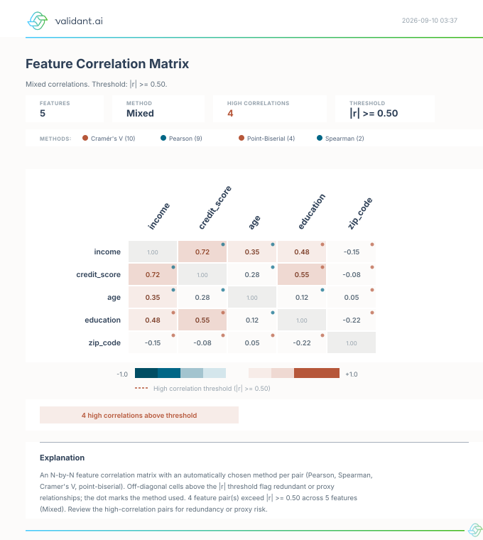
SVG Templates vfairness.rendering
Lightweight, self-contained SVG alternatives generated via Jinja2 templates (the [rendering] extra) — the output SVG has no runtime, browser, or JS dependency, ideal for CI/CD artifacts, HTML reports, and headless environments. Each function accepts an optional save_path and returns the SVG string (3–8 KB).
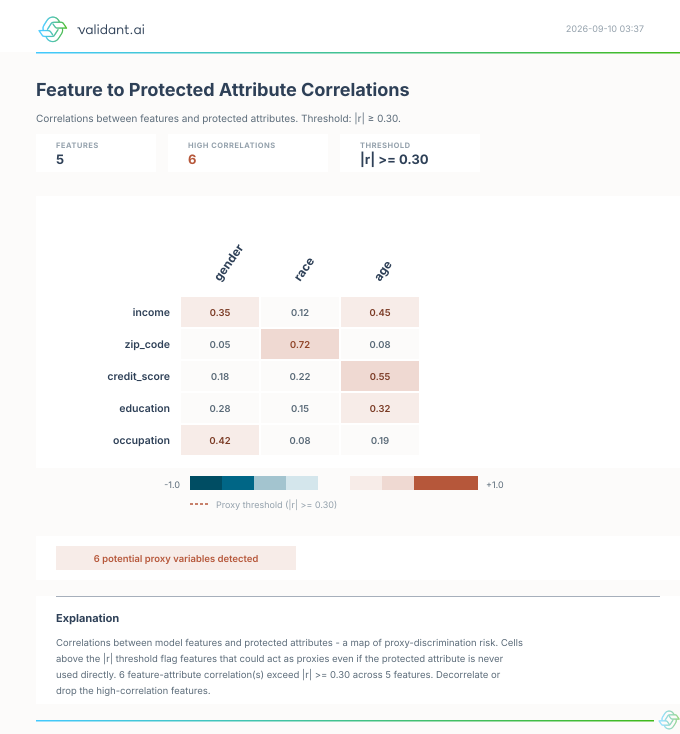
correlation_heatmap_to_svg(matrix)
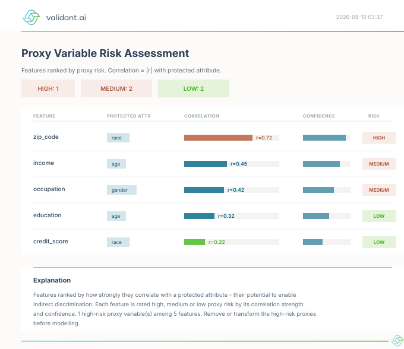
proxy_risk_to_svg(results)
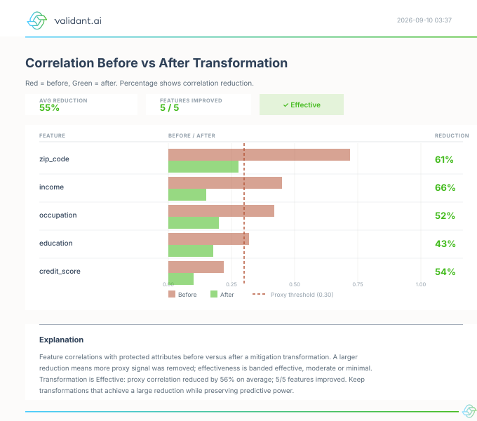
transformation_comparison_to_svg(before, after)
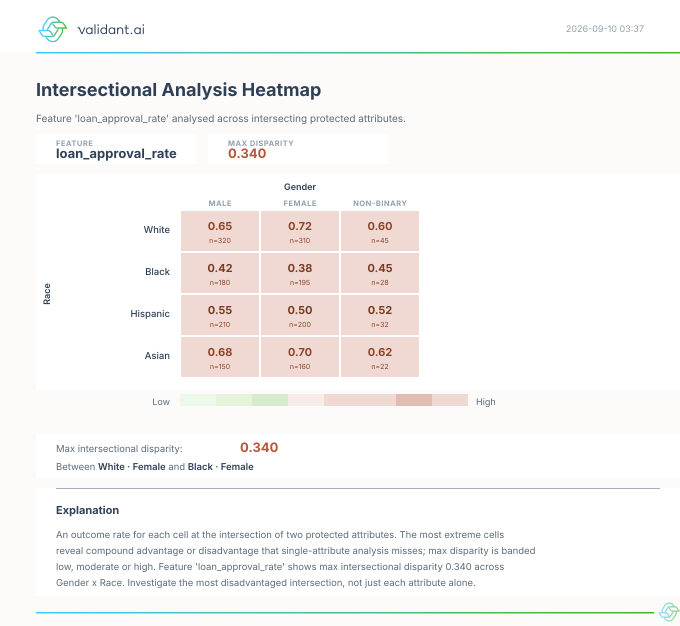
intersectional_analysis_to_svg(data, feature)
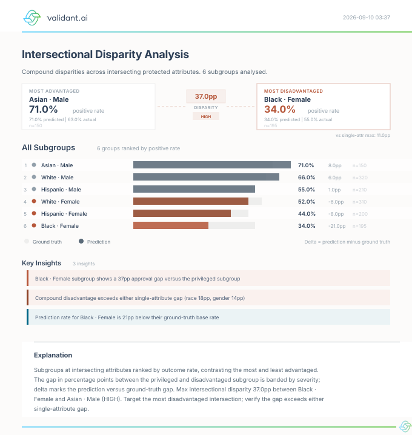
intersectional_disparity_to_svg(result)
Ranked-bar chart with ground truth overlay and severity indicators
View all preprocessing templates in the SVG Gallery →
from vfairness.rendering import correlation_heatmap_to_svg, proxy_risk_to_svg
# SVG from correlation matrix — no Matplotlib needed
matrix = analyzer.get_correlation_matrix()
svg = correlation_heatmap_to_svg(matrix, save_path="corr_heatmap.svg")
# SVG from proxy analysis
proxies = analyzer.analyze_proxies()
svg = proxy_risk_to_svg(proxies, save_path="proxy_risk.svg")2. Training-Time Interventions
Fairness-aware model training interventions applied during the learning process. The in_processing module provides comprehensive tools for incorporating fairness constraints directly into model training.
vfairness_2_training_demo.ipynb Fair training with loss functions, constraints & regularizersOpen it to see this run end to end. Every notebook is executed on each build, so the code here matches the library you installed.
Fairness in Model Training
Overview of in-processing techniques: loss functions, constraints, regularizers, and scikit-learn wrappers
from vfairness.in_processing import (
# Scikit-learn wrappers
FairClassifier, FairRegressor,
# Analyzer
FairnessTrainingAnalyzer, FairnessTrainingReport,
# Loss functions (PyTorch)
DemographicParityLoss, EqualizedOddsLoss, EqualOpportunityLoss,
AdversarialDebiasingLoss, CounterfactualFairnessLoss,
# Constraints
ExponentiatedGradient, GridSearch, ThresholdOptimizer,
DemographicParityConstraint, EqualizedOddsConstraint,
# Regularizers
StatisticalParityRegularizer, HilbertSchmidtRegularizer,
# Calibrators
TrainableGroupCalibrator, CalibrationAwareTrainer,
)Quick Start
# Scikit-learn compatible approach (easiest)
from sklearn.ensemble import RandomForestClassifier
from vfairness.in_processing import FairClassifier
clf = FairClassifier(
base_estimator=RandomForestClassifier(),
fairness_constraint='demographic_parity',
tolerance=0.05
)
clf.fit(X_train, y_train, sensitive_attr=gender)
y_pred = clf.predict(X_test)
print(f"Constraint satisfied: {clf.fairness_result_.constraint_satisfied}")Module Architecture
The in_processing module offers five main approaches:
sklearn-compatible wrapper"] end subgraph Core["Core Fairness Approaches"] direction LR LF["Loss Functions
DemographicParityLoss
EqualOpportunityLoss
EqualizedOddsLoss"] CB["Constraints
ExponentiatedGradient
reductions approach"] RG["Regularizers
DemographicParityReg
EqualOpportunityReg"] end subgraph Train["Training Loop"] direction LR FWD["Forward Pass"] --> LOSS["Task Loss
+ Fairness Penalty"] LOSS --> BWD["Backward Pass"] BWD --> UPD["Update Weights"] UPD --> FWD end end FC --> Core LF --> Train RG --> Train CB -.->|"iterative
reweighting"| Train
Choosing Your Approach: Reductions vs. Lagrangian Methods
The most important decision in fairness-aware training is selecting the right optimization strategy for your model type. This choice fundamentally affects how fairness constraints are enforced during learning.
are you training?"] --> Q1{"Can you access
and modify the
training loop?"} Q1 -->|"No - Black-box model
(sklearn, XGBoost, etc.)"| REDUCTIONS["Use Reductions Approach
ExponentiatedGradient
GridSearch"] Q1 -->|"Yes - Custom training
(PyTorch, TensorFlow)"| Q2{"Do you need
guaranteed constraint
satisfaction?"} Q2 -->|"Yes - Hard constraints"| REDUCTIONS Q2 -->|"No - Soft penalties OK"| LAGRANGIAN["Use Lagrangian Methods
FairnessLosses
Regularizers"] REDUCTIONS --> R_RESULT["✅ Works with ANY classifier
✅ Theoretical guarantees
✅ No gradient access needed
⚠️ Slower (multiple retrains)"] LAGRANGIAN --> L_RESULT["✅ End-to-end differentiable
✅ Single training pass
✅ Fine-grained control
⚠️ Soft constraints only"]
Reductions Approach
For black-box or non-differentiable models where you cannot modify the internal training loop. Treats the classifier as a black box and achieves fairness through iterative reweighting.
- Scikit-learn classifiers (RandomForest, SVM, etc.)
- Gradient boosting (XGBoost, LightGBM, CatBoost)
- Any model with fit/predict interface
- When you need guaranteed constraint satisfaction
- When model internals are inaccessible
ExponentiatedGradient
GridSearch
ThresholdOptimizer
Lagrangian Methods
For deep learning models where you control the training loop. Adds fairness penalties directly to the loss function, enabling end-to-end gradient-based optimization.
- PyTorch or TensorFlow neural networks
- Custom differentiable models
- When you want single-pass training efficiency
- When soft constraint violations are acceptable
- When you need fine-grained fairness-accuracy control
DemographicParityLoss
EqualizedOddsLoss
StatisticalParityRegularizer
Mathematical Background
Both approaches solve the same fundamental problem—training a model that minimizes prediction error subject to fairness constraints:
Where Ltask is prediction loss, g(θ) measures fairness violation, and ε is the tolerance.
1 Reductions: Iterative Reweighting
The reductions approach (Agarwal et al., 2018) converts the constrained problem into a sequence of cost-sensitive classification problems:
- Initialize sample weights uniformly
- Train base classifier on weighted samples
- Evaluate constraint violations on predictions
- Update weights using exponentiated gradient
- Repeat until convergence or max iterations
The multipliers λ exponentially increase for violated constraints, forcing subsequent classifiers to respect them.
2 Lagrangian: Penalty in Loss Function
Lagrangian methods add the constraint as a differentiable penalty to the loss, enabling gradient-based optimization:
Since standard fairness metrics (TPR, FPR) are non-differentiable, we use soft approximations:
Gradients flow through these soft metrics, allowing joint optimization of accuracy and fairness.
Detailed Comparison
| Aspect | Reductions (ExponentiatedGradient) | Lagrangian (Loss Functions) |
|---|---|---|
| Model Requirements | Any classifier with fit/predict | Differentiable model (neural network) |
| Constraint Type | Hard constraints with guarantees | Soft penalties (may violate slightly) |
| Training Passes | Multiple (one per iteration) | Single pass |
| Computational Cost | Higher (retrains base model N times) | Lower (standard gradient descent) |
| Hyperparameters | tolerance (ε), max_iterations | lambda_fairness (λ), warmup_epochs |
| Convergence | Theoretical guarantees (PAC learning) | Depends on λ tuning |
| Best For | Production ML pipelines, sklearn | Deep learning, research |
Implementation Tips
- Start with
tolerance=0.05and adjust - Use
GridSearchfirst for exploration - Monitor
convergedflag in results - The algorithm returns a mixture of classifiers
- Start with
λ=0.1and use warmup - Monitor both task and fairness loss
- If oscillating, reduce λ or increase warmup
- Use
FairnessTrainingAnalyzerfor tuning
Quick Comparison: Same Task, Different Approaches
# For RandomForest, XGBoost, etc.
from sklearn.ensemble import RandomForestClassifier
from vfairness.in_processing import (
ExponentiatedGradient,
DemographicParityConstraint
)
# Wrap any sklearn classifier
eg = ExponentiatedGradient(
base_estimator=RandomForestClassifier(),
constraint=DemographicParityConstraint(
tolerance=0.05
),
max_iterations=50
)
# Standard fit/predict interface
# fit() RETURNS the ReductionResult;
# eg.get_result() returns the same one.
result = eg.fit(X_train, y_train,
sensitive_attr=gender)
y_pred = eg.predict(X_test)
# Check if constraint satisfied.
# converged lives one level deeper,
# on .optimization_result.
print(f"Converged: "
f"{result.optimization_result.converged}")
print(f"Violation: {result.final_violation}")# For neural networks
import torch
from vfairness.in_processing import (
DemographicParityLoss
)
# Add fairness to loss function
loss_fn = DemographicParityLoss(
lambda_fairness=0.1,
warmup_epochs=5
)
# Standard PyTorch training loop
for epoch in range(num_epochs):
loss_fn.set_epoch(epoch)
for x, y, sens in dataloader:
optimizer.zero_grad()
y_pred = model(x).sigmoid()
# Single loss combines both
loss = loss_fn(y_pred, y, sens)
loss.backward()
optimizer.step()
metrics = loss_fn.end_epoch()
print(f"Fairness: {metrics.fairness_loss}")Both methods aim for the same goal—fair predictions. Reductions achieves this by repeatedly retraining with adjusted sample weights until constraints are met. Lagrangian achieves this by adding a penalty term that pulls the model toward fairness during each gradient step. Choose based on your model type, not the fairness criterion.
Scikit-Learn Wrappers
FairClassifier
Scikit-learn compatible wrapper that adds fairness constraints to any base classifier.
In practice, most ML teams already have well-tuned classifiers (Random Forests, Gradient Boosting, Logistic Regression). FairClassifier lets you keep your existing model and simply wrap it with a fairness layer — no need to rewrite your pipeline or switch to a different algorithm.
Think of it like a fairness adapter: your model learns to make predictions as usual, but the wrapper adjusts how it trains (by reweighting samples) or how it predicts (by adjusting thresholds per group) so that the final output satisfies a fairness constraint like "equal approval rates across groups."
Under the hood, it delegates to one of three strategies — reductions (Exponentiated Gradient), grid_search, or threshold (post-hoc) — but exposes a simple fit() / predict() API that slots directly into scikit-learn pipelines, cross-validation, and grid search.
from sklearn.ensemble import RandomForestClassifier
from vfairness.in_processing import FairClassifier
# Create fair classifier
clf = FairClassifier(
base_estimator=RandomForestClassifier(n_estimators=100),
fairness_constraint='equalized_odds', # or 'demographic_parity', 'equal_opportunity'
tolerance=0.05, # Maximum allowed constraint violation
method='reductions', # 'reductions', 'threshold', 'grid_search'
max_iterations=50,
verbose=True
)
# Fit (requires sensitive_attr)
clf.fit(X_train, y_train, sensitive_attr=gender)
# Predict
y_pred = clf.predict(X_test)
# Check fairness results
print(f"Accuracy: {clf.fairness_result_.accuracy:.4f}")
print(f"Violation: {clf.fairness_result_.fairness_violation:.4f}")
print(f"Satisfied: {clf.fairness_result_.constraint_satisfied}")Parameters
| Parameter | Type | Default | Description |
|---|---|---|---|
base_estimator | Any | Required | Any scikit-learn compatible classifier |
fairness_constraint | str | 'demographic_parity' | Constraint type |
tolerance | float | 0.05 | Maximum allowed violation |
method | str | 'reductions' | Training method |
max_iterations | int | 50 | Max iterations for optimization |
verbose | bool | False | Print progress |
Available Fairness Constraints
| Constraint | Description |
|---|---|
'demographic_parity' | Equal positive prediction rates across groups |
'equalized_odds' | Equal TPR and FPR across groups |
'equal_opportunity' | Equal TPR only across groups |
'false_positive_parity' | Equal FPR only across groups |
'bounded_group_loss' | Bounded worst-group loss (minimax fairness) |
Training Methods
| Method | Description | Best For |
|---|---|---|
'reductions' | Exponentiated gradient algorithm (Agarwal et al. 2018) | General-purpose, strong guarantees |
'threshold' | Post-processing threshold optimization | Pre-trained models |
'grid_search' | Grid search over Lagrange multipliers | Quick exploration |
FairRegressor
Scikit-learn compatible wrapper for fairness-aware regression.
Regression models predict continuous values — salaries, credit scores, insurance premiums, risk ratings. Fairness in regression means that the average predicted value should not systematically differ between demographic groups (mean parity), or that the prediction error should be equally distributed (error parity).
For example, if a model predicts home loan amounts, mean parity ensures the average loan offer is similar across groups, while error parity ensures the model is not more accurate for one group than another. FairRegressor implements mean parity only, and it does so with a post-fit per-group prediction offset, not by adjusting sample weights: after the base regressor is fitted, each group's mean training prediction is shifted into a band of half-width tolerance / 2 around the pooled mean. Uniform per-group sample reweighting was removed because it provably could not move group prediction means. Error parity is not implemented and raises NotImplementedError at fit() time.
from sklearn.linear_model import Ridge
from vfairness.in_processing import FairRegressor
reg = FairRegressor(
base_estimator=Ridge(),
fairness_constraint='mean_parity', # the only constraint implemented
tolerance=0.1,
method='offset' # the only method implemented (the default)
)
reg.fit(X_train, y_train, sensitive_attr=group)
# The mean-parity correction is a PER-GROUP offset, so applying it needs the
# sensitive attribute. This is the call that returns adjusted predictions:
y_pred = reg.predict_with_sensitive_attr(X_test, group_test)reg.predict(X_test) does NOT apply the mitigation. It has no group information, so it returns the UNADJUSTED base predictions and warns. Measured on a 1000-row synthetic set where the group is a feature and tolerance=0.1: predict() left a group mean gap of 4.97, while predict_with_sensitive_attr() produced 0.08. Use predict() only when you deliberately want the unmitigated baseline.
fairness_constraint='error_parity' and 'bounded_loss' are declared in the signature but not implemented; both raise NotImplementedError at fit() time rather than silently fitting an unconstrained model. method='reweighting' was removed and now raises ValueError.
FairnessTrainingAnalyzer
Comprehensive analyzer for evaluating and comparing fairness-aware training approaches.
Whenever you add a fairness constraint to a model, you are asking it to optimize for two objectives at once: accuracy and fairness. These often conflict — making a model perfectly fair may reduce its accuracy, and vice versa. The set of best possible compromises is called the Pareto frontier.
FairnessTrainingAnalyzer automates the process of exploring this frontier. It sweeps over different values of λ (the regularization weight), trains a model for each, records accuracy and fairness violation, and identifies which configurations are Pareto-optimal — meaning no other configuration is better on both accuracy and fairness simultaneously.
This is especially valuable for communicating results to stakeholders: the resulting Pareto plot makes it visually clear what accuracy cost is required for a given level of fairness, helping teams make an informed, transparent decision about where to operate.
from sklearn.linear_model import LogisticRegression
from vfairness.in_processing import FairnessTrainingAnalyzer
# Create analyzer
analyzer = FairnessTrainingAnalyzer(
X=X_train, y=y_train, sensitive_attr=gender,
fairness_constraint='demographic_parity',
tolerance=0.05
)
# Full analysis
report = analyzer.full_analysis(
base_estimator=LogisticRegression(),
include_comparisons=True,
include_tradeoffs=True
)
# Print summary
print(report.summary())
# Export to JSON
report.to_json('training_analysis.json')
# Render as SVG
report.to_svg('training_report.svg')Key Methods
| Method | Description |
|---|---|
evaluate_baseline(model) | Evaluate baseline model without fairness constraints |
compare_methods(base_estimator) | Compare different training methods side-by-side |
analyze_tradeoffs(base_estimator) | Analyze accuracy-fairness trade-off curve |
generate_recommendation() | Generate recommended approach with rationale |
full_analysis() | Complete analysis with report generation |
Loss Functions (PyTorch)
Group Fairness Losses (PyTorch)
PyTorch loss functions that incorporate fairness penalties directly into the training objective.
In standard deep learning, a model minimizes a single loss function (e.g., cross-entropy) that measures prediction error. Fairness loss functions extend this by adding a second term that penalizes unfair behavior:
The parameter λ (lambda) controls the trade-off: a small λ prioritizes accuracy, a large λ prioritizes fairness. The key challenge is that standard fairness metrics (like TPR, FPR) involve hard thresholding, which is not differentiable. These loss functions solve this by using soft, differentiable approximations — replacing hard 0/1 decisions with smooth probability outputs so that gradients can flow through and the model can learn to be fair.
The warmup_epochs parameter lets the model first learn the task (good predictions) before gradually introducing the fairness penalty, which leads to more stable training.
(X, y, groups)"] --> FWD["model(X)"] FWD --> TASK["Task Loss
L_task = BCE(ŷ, y)"] FWD --> FAIR["Fairness Loss
L_fair = penalty(ŷ, groups)"] TASK --> COMBINE["L_total = L_task + λ × L_fair"] FAIR --> COMBINE COMBINE --> BWD["loss.backward()"] BWD --> OPT["optimizer.step()"] end subgraph Choices["Fairness Loss Options"] DP["DemographicParityLoss
equal positive rates"] EO["EqualizedOddsLoss
equal TPR + FPR"] EOP["EqualOpportunityLoss
equal TPR"] BGL["BoundedGroupLoss
minimax fairness"] end Choices -->|"choose one"| FAIR
L_total = L_task + λ × L_fairness
Where λ controls the accuracy-fairness trade-off.
Available Loss Functions
import torch
from vfairness.in_processing import DemographicParityLoss
# Create loss function
loss_fn = DemographicParityLoss(
lambda_fairness=0.1, # Trade-off parameter
warmup_epochs=5 # Epochs before applying fairness penalty
)
# Training loop
model = YourModel()
optimizer = torch.optim.Adam(model.parameters())
for epoch in range(num_epochs):
loss_fn.set_epoch(epoch)
for x, y, sensitive_attr in dataloader:
optimizer.zero_grad()
y_pred = torch.sigmoid(model(x))
loss = loss_fn(y_pred, y, sensitive_attr)
loss.backward()
optimizer.step()
# End of epoch tracking
metrics = loss_fn.end_epoch()
print(f"Epoch {epoch}: Loss={metrics.avg_total_loss:.4f}")Adversarial Losses
Adversarial training approaches for learning fair representations.
Adversarial debiasing works like a two-player game. The main model (the predictor) tries to make good predictions, while a second small network (the adversary) tries to guess the sensitive attribute (e.g., gender or race) from the predictor's outputs. If the adversary succeeds, it means the predictions still leak information about group membership.
Training pushes the predictor to be accurate at its task while simultaneously making it impossible for the adversary to detect which group a person belongs to. When the adversary can do no better than random guessing, the model's predictions are independent of the sensitive attribute — which is exactly what demographic parity requires.
The gradient reversal layer (use_gradient_reversal=True) makes this efficient: during backpropagation, the signal from the adversary is flipped, actively pushing the predictor away from encoding group information. This approach is inspired by domain adaptation research (Ganin et al., 2016) and was applied to fairness by Zhang et al. (2018).
| Loss Function | Mechanism | Use Case |
|---|---|---|
AdversarialDebiasingLoss | Adversary predicts sensitive attr | Remove information leakage |
ProjectedAdversarialLoss | Gradient projection | More stable adversarial training |
FairRepresentationLoss | Fair representation learning | Learning intermediate representations |
from vfairness.in_processing import AdversarialDebiasingLoss
loss_fn = AdversarialDebiasingLoss(
lambda_fairness=1.0,
adversary_hidden_dims=[64, 32],
n_groups=2,
use_gradient_reversal=True
)
# Move to GPU if available
loss_fn = loss_fn.to(device)
# Training loop
for x, y, sensitive_attr in dataloader:
y_pred = torch.sigmoid(model(x))
loss = loss_fn(y_pred, y, sensitive_attr)
loss.backward()
optimizer.step()
# Monitor adversary accuracy (lower is more fair)
adv_acc = loss_fn.get_adversary_accuracy(y_pred.detach(), sensitive_attr)Counterfactual Losses
Losses based on counterfactual fairness and individual fairness criteria.
Causal & Counterfactual Fairness
Counterfactual losses, individual fairness and causal pathway blocking for fair in-processing
Counterfactual fairness (Kusner et al., 2017) asks a causal question: "Would this person have received the same prediction if they had belonged to a different demographic group, but were otherwise identical?" If the answer is yes for every individual, the model is counterfactually fair.
This is fundamentally different from group fairness metrics, which compare averages across groups. Counterfactual fairness operates at the individual level, making it a stronger and more intuitive definition — it captures what most people mean when they say "this decision was unfair to me."
In practice, the loss works by creating counterfactual copies of each data point (swapping the group attribute), feeding both the original and counterfactual through the model, and penalizing any difference in predictions. The group_swap strategy simply flips the group label, while group_mean replaces group-specific features with population averages to remove group influence.
How Counterfactual Fairness Works
Attribute (A)"] X["Features (X)"] Y["Outcome (Ŷ)"] A -->|"direct"| Y A -->|"indirect"| X X --> Y end subgraph COUNTER ["Counterfactual Test"] direction TB A2["A → A'
intervene"] X2["X' = f(A', U)"] Y2["Ŷ' = model(X')"] A2 --> X2 X2 --> Y2 end subgraph FAIR ["Fairness Criterion"] direction TB CMP["Ŷ ≈ Ŷ' ?"] PASS["✅ Fair"] FAIL["❌ Unfair"] CMP -->|"yes"| PASS CMP -->|"no"| FAIL end CAUSAL --> COUNTER COUNTER --> FAIR
from vfairness.in_processing import CounterfactualFairnessLoss
loss_fn = CounterfactualFairnessLoss(
lambda_fairness=0.1,
counterfactual_strategy='group_swap', # 'group_mean', 'group_swap', 'adversarial'
)
# Factory function for easy creation
from vfairness.in_processing import create_fairness_loss
loss_fn = create_fairness_loss(
'demographic_parity',
lambda_fairness=0.1,
warmup_epochs=5
)Constraint-Based Training Algorithms
Exponentiated Gradient, Grid Search, and Threshold Optimizer for guaranteed fairness constraint satisfaction
Constraint-Based Training
ExponentiatedGradient
The main reductions algorithm from Agarwal et al. (2018) that reduces fair classification to a sequence of cost-sensitive classification problems.
Imagine you have a standard classifier that is unfair — it approves 80% of Group A but only 50% of Group B. The Exponentiated Gradient algorithm fixes this by repeatedly reweighting training samples: it increases the importance of Group B samples and decreases Group A samples, then retrains the classifier on these adjusted weights. After several rounds, the classifier naturally balances its predictions across groups.
The key insight from Agarwal et al. (2018) is that this process has theoretical convergence guarantees: it is mathematically proven to find a classifier that satisfies the fairness constraint (within tolerance ε) while being near-optimal in accuracy. The final output is a mixture (weighted combination) of the classifiers trained at each iteration.
The name "exponentiated gradient" comes from the update rule for the Lagrange multipliers: λ ← λ · exp(η · violation). Multipliers for violated constraints grow exponentially, forcing the next classifier to heavily prioritize those constraints. The parameter eta (η) controls how aggressive this correction is — it is the optimizer's learning rate, not the fairness weight itself.
Best for: when you want guaranteed fairness with any black-box classifier (Random Forest, XGBoost, SVM, etc.) and cannot modify the model's internal training loop.
λ₀ = uniform weights"] --> ITER{"Iteration t
< max_iter?"} ITER -->|Yes| TRAIN["Train base estimator h_t
on cost-sensitive problem
with weights λ_t"] TRAIN --> EVAL["Evaluate fairness
constraint violation
on h_t predictions"] EVAL --> CHECK{"Constraint
satisfied?
violation < ε"} CHECK -->|Yes| CONV["✅ Converged
Return mixture
of classifiers"] CHECK -->|No| UPDATE["Update Lagrange
multipliers λ via
exponentiated gradient"] UPDATE --> MIX["Add h_t to
classifier mixture
Q = {h₁, ..., h_t}"] MIX --> ITER ITER -->|No| BEST["Return best
feasible mixture Q*"]
from sklearn.linear_model import LogisticRegression
from vfairness.in_processing import (
ExponentiatedGradient,
DemographicParityConstraint,
)
# Create constraint
constraint = DemographicParityConstraint(tolerance=0.05)
# Create algorithm
eg = ExponentiatedGradient(
base_estimator=LogisticRegression(),
constraint=constraint,
max_iterations=50,
verbose=True
)
# Fit
result = eg.fit(X_train, y_train, sensitive_attr=gender)
# Predict
y_pred = eg.predict(X_test)
# Check results
print(f"Accuracy: {result.accuracy:.4f}")
print(f"Violation: {result.final_violation:.4f}")
print(f"Converged: {result.optimization_result.converged}")Available Constraints
| Constraint | Mathematical Definition |
|---|---|
DemographicParityConstraint | |P(ŷ=1|G=a) - P(ŷ=1|G=b)| ≤ ε |
EqualizedOddsConstraint | |TPR_a - TPR_b| ≤ ε AND |FPR_a - FPR_b| ≤ ε |
EqualOpportunityConstraint | |TPR_a - TPR_b| ≤ ε |
FalsePositiveRateParityConstraint | |FPR_a - FPR_b| ≤ ε |
BoundedGroupLossConstraint | L_g ≤ (1+ε) × L_overall for all g |
GridSearch
Grid search over Lagrange multipliers for quick exploration of the accuracy-fairness trade-off.
GridSearch is the simplest approach to fairness-aware training: it tries many different values of the fairness weight λ, trains a separate model for each, and picks the best one that satisfies the constraint. Think of it as testing 20 different "fairness dials" and keeping the setting that gives the best accuracy while staying within the fairness tolerance.
While less sophisticated than ExponentiatedGradient (which converges adaptively), grid search is embarrassingly parallelizable and gives you a complete picture of how accuracy changes as you increase fairness pressure. It is ideal for initial exploration before committing to a specific configuration.
The output includes all trained models with their metrics, making it straightforward to visualize the full accuracy-fairness trade-off curve and identify the Pareto-optimal configurations.
from vfairness.in_processing import GridSearch, EqualizedOddsConstraint
gs = GridSearch(
base_estimator=LogisticRegression(),
constraint=EqualizedOddsConstraint(tolerance=0.05),
n_lambda_values=20,
verbose=True
)
result = gs.fit(X_train, y_train, sensitive_attr=gender)
y_pred = gs.predict(X_test)ThresholdOptimizer
Post-processing threshold optimization for applying fairness constraints to pre-trained models.
Most classifiers produce probability scores (e.g., "72% likely to repay a loan") and then apply a fixed threshold (typically 0.5) to make a yes/no decision. ThresholdOptimizer makes a simple but powerful observation: different groups may need different thresholds to achieve fair outcomes.
For example, if Group A's scores tend to be systematically higher due to historical data biases, using the same threshold means Group A gets approved more often. By lowering Group B's threshold slightly (say to 0.42), you can equalize approval rates — achieving demographic parity without changing the model itself.
This is the least invasive fairness intervention: it works on any pre-trained model that outputs probabilities, requires no retraining, and is mathematically equivalent to the optimal post-processing solution from Hardt et al. (2016). Use it when you cannot retrain a model (e.g., a vendor-provided model) or as a quick baseline before trying more sophisticated approaches.
from sklearn.ensemble import RandomForestClassifier
from vfairness.in_processing import ThresholdOptimizer, EqualOpportunityConstraint
# First train a standard classifier
base_clf = RandomForestClassifier()
base_clf.fit(X_train, y_train)
# Get probabilities
y_prob_val = base_clf.predict_proba(X_val)[:, 1]
# Optimize thresholds for fairness
optimizer = ThresholdOptimizer(
constraint=EqualOpportunityConstraint(tolerance=0.05),
grid_size=100
)
optimizer.fit(y_prob_val, y_val, sensitive_attr=gender_val)
# Apply to test data
y_prob_test = base_clf.predict_proba(X_test)[:, 1]
y_pred_fair = optimizer.predict(y_prob_test, gender_test)
# Get the learned thresholds
print("Thresholds per group:", optimizer.get_thresholds())Regularizers & Calibrators
Fairness Regularizers
Modular penalty terms that can be added to any differentiable loss function.
If you've used L1 or L2 regularization, you already understand the idea. In standard machine learning, regularization adds a penalty to prevent overfitting (e.g., penalizing large weights). Fairness regularizers work the same way, but instead of penalizing model complexity, they penalize unfair behavior.
Each regularizer computes a differentiable fairness penalty that measures how much the model's predictions depend on group membership. This penalty is added to whatever loss function you're already using, with a strength parameter controlling the trade-off. The model then naturally learns to reduce this penalty through standard gradient descent.
The advantage over loss functions: regularizers are modular building blocks — you can combine them with any existing task loss, stack multiple fairness penalties, or swap them out without changing your training loop. The HilbertSchmidtRegularizer (HSIC) is particularly powerful because it captures non-linear dependencies between predictions and group membership that simple correlation measures would miss.
Rule of thumb: start with strength=0.1 and increase gradually. If accuracy drops sharply, reduce it. If fairness metrics barely improve, increase it.
import torch.nn.functional as F
from vfairness.in_processing import StatisticalParityRegularizer
regularizer = StatisticalParityRegularizer(strength=0.1)
# In training loop
for x, y, sensitive_attr in dataloader:
y_pred = torch.sigmoid(model(x))
# Task loss
task_loss = F.binary_cross_entropy(y_pred, y)
# Fairness penalty
fairness_penalty = regularizer(y_pred, sensitive_attr)
# Combined loss
total_loss = task_loss + fairness_penalty
total_loss.backward()Group-Specific Calibrators
Trainable calibration methods that learn separate parameters for each demographic group.
A model is calibrated if when it says "70% chance," the event actually happens 70% of the time. But even well-calibrated models can be miscalibrated for specific groups: a "70% risk" prediction might correspond to 75% actual risk for Group A but only 60% for Group B. This means the same score has a different meaning depending on which group you belong to — a serious fairness problem.
Group-specific calibrators fix this by learning separate calibration mappings for each demographic group. TemperatureScaling (simplest) divides logits by a group-specific temperature parameter. PlattScaling learns a linear transform. BetaCalibrator offers more flexibility. All ensure that a "70% score" truly means 70% probability regardless of group membership.
These calibrators are trainable PyTorch modules that can be integrated into end-to-end training (via CalibrationAwareTrainer) or applied as a post-processing step to an already-trained model. Group-fair calibration is especially important for applications like credit scoring, medical risk assessment, or insurance pricing where probability estimates directly drive decisions.
| Calibrator | Parameters | Description |
|---|---|---|
TemperatureScalingCalibrator | T per group | Divides logits by temperature |
PlattScalingCalibrator | (a, b) per group | Linear transform in log-odds space |
BetaCalibrator | (c, d, e) per group | More flexible beta calibration |
FocalCalibrator | γ per group | Focal-loss inspired calibration |
TrainableGroupCalibrator | Configurable | Unified interface for all methods |
from vfairness.in_processing import (
TrainableGroupCalibrator,
CalibrationAwareTrainer,
)
# Create calibrator
calibrator = TrainableGroupCalibrator(
n_groups=2,
method='temperature', # 'temperature', 'platt', 'beta', 'focal'
learnable=True
)
# Integrate with model training
trainer = CalibrationAwareTrainer(model, calibrator)
# Training step
losses = trainer.train_step(
x, y, group_ids,
optimizer,
task_loss_fn=F.cross_entropy,
include_calibration=True
)
print(f"Task loss: {losses['task_loss']:.4f}")
print(f"Calibration loss: {losses['calibration_loss']:.4f}")Training Visualization
Training Visualization (SVG Templates)
Lightweight, self-contained SVG alternatives generated via Jinja2 templates (the [rendering] extra) — the output SVG has no runtime, browser, or JS dependency, ideal for CI/CD artifacts, HTML reports, and headless environments. Each function accepts an optional save_path and returns the SVG string (3–8 KB).
| Function | Description | Use Case |
|---|---|---|
training_report_to_svg() | Full training analysis dashboard | Executive summary of fairness training |
training_analysis_report_to_svg() | Comprehensive full-page analysis report | Detailed dashboard: groups, methods, trade-offs, issues, actions |
method_comparison_to_svg() | Side-by-side method comparison chart | Compare reductions vs Lagrangian methods |
tradeoff_analysis_to_svg() | Accuracy-fairness trade-off visualization | λ tuning and Pareto frontier analysis |
Example Visualizations
Click any visualization to view in full size with details.
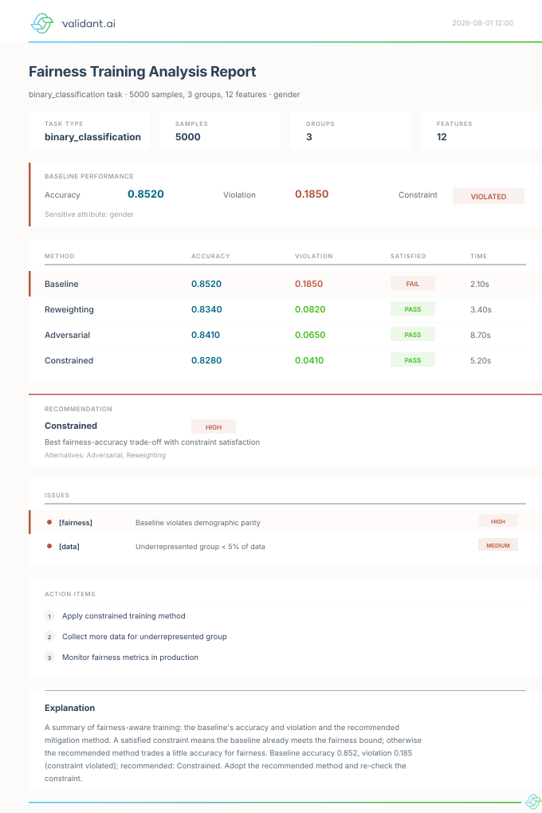
training_report_to_svg(report)
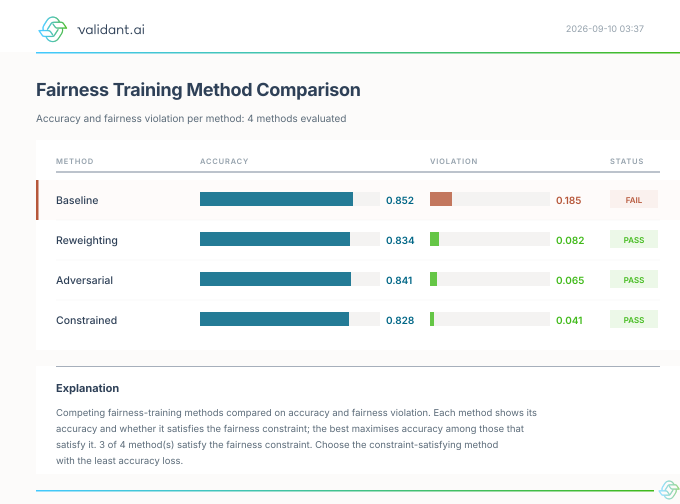
method_comparison_to_svg(comparisons)
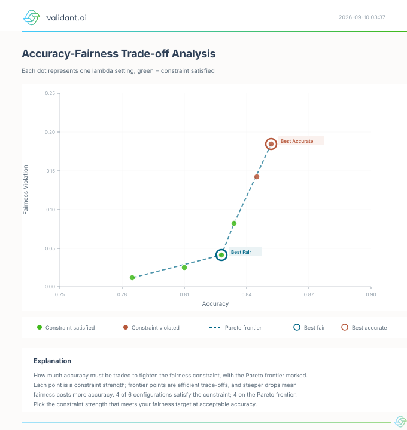
tradeoff_analysis_to_svg(tradeoff_data)
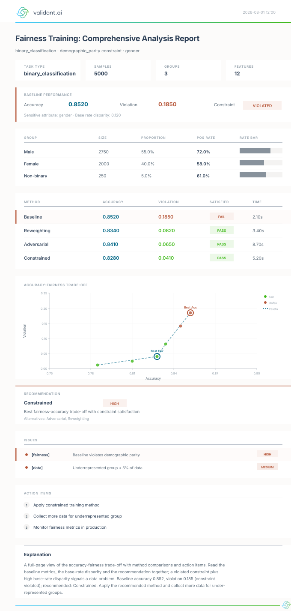
training_analysis_report_to_svg(report)
View all training templates in the SVG Gallery →
Usage Examples
from sklearn.linear_model import LogisticRegression
from vfairness.in_processing import FairnessTrainingAnalyzer
from vfairness.rendering import (
training_report_to_svg,
training_analysis_report_to_svg,
method_comparison_to_svg,
tradeoff_analysis_to_svg
)
# Create analyzer and run full analysis
analyzer = FairnessTrainingAnalyzer(
X=X_train, y=y_train, sensitive_attr=gender,
fairness_constraint='demographic_parity',
tolerance=0.05
)
report = analyzer.full_analysis(base_estimator=LogisticRegression())
# ★ Generate the comprehensive full-page report SVG (new!)
svg = training_analysis_report_to_svg(report, save_path='analysis_report.svg')
# Generate compact dashboard SVG
svg = training_report_to_svg(report, save_path='training_report.svg')
# Or generate individual visualizations
svg = method_comparison_to_svg(
report.method_comparisons,
save_path='method_comparison.svg'
)
svg = tradeoff_analysis_to_svg(
report.tradeoff_analysis,
save_path='tradeoff.svg'
)
# Use directly from report object
svg = report.to_svg(save_path='full_report.svg')- No plotting dependencies — needs only the lightweight
[rendering]extra (Jinja2), not Matplotlib, Seaborn, or Plotly - CI/CD friendly — Generate reports in headless environments
- Lightweight — 3-8 KB per visualization vs 100+ KB for raster images
- Scalable — Vector graphics look crisp at any resolution
- Embeddable — Inline directly in HTML reports or emails
λ = 0: Pure accuracy optimization (unfair)λ = 0.01-0.1: Light fairness penaltyλ = 0.1-0.5: Moderate penaltyλ = 0.5-1.0: Strong fairness emphasisλ > 1.0: Fairness dominates (may hurt accuracy)
Recommendation: Start with λ = 0.1 and use FairnessTrainingAnalyzer to explore the trade-off curve.
References
- Hardt, M., Price, E., & Srebro, N. (2016). Equality of Opportunity in Supervised Learning. NeurIPS.
- Agarwal, A., Beygelzimer, A., Dudík, M., Langford, J., & Wallach, H. (2018). A Reductions Approach to Fair Classification. ICML.
- Zhang, B. H., Lemoine, B., & Mitchell, M. (2018). Mitigating Unwanted Biases with Adversarial Learning. AIES.
- Kusner, M. J., Loftus, J., Russell, C., & Silva, R. (2017). Counterfactual Fairness. NeurIPS.
- Zafar, M. B., Valera, I., Gomez Rodriguez, M., & Gummadi, K. P. (2017). Fairness Constraints: Mechanisms for Fair Classification. AISTATS.
- Guo, C., Pleiss, G., Sun, Y., & Weinberger, K. Q. (2017). On Calibration of Modern Neural Networks. ICML.
3. Prediction-Time Interventions
Group-specific calibration and threshold adjustments applied at prediction time to improve fairness while maintaining accuracy.
Jupyter notebook, Demo Notebook:vfairness_3_calibration_demo.ipynb Group calibration, threshold optimization & Pareto analysisOpen it to see this run end to end. Every notebook is executed on each build, so the code here matches the library you installed.
from vfairness.post_processing import (
# Calibration
GroupCalibrator, CalibrationAnalyzer, expected_calibration_error,
# Threshold Optimization
GroupThresholdOptimizer, MultiObjectiveThresholdOptimizer, ThresholdAnalyzer,
# Prediction Reweighting
PredictionReweighter, RejectionOptionClassifier, CalibratedEqualizer,
DistributionMatcher, ReweightingAnalyzer
)What's Included
Group-Specific Calibration
Calibration Module
Ensure probability predictions have consistent meaning across demographic groups. The calibration module addresses a distinct fairness dimension: interpretation consistency.
Calibration for Fairness
Understanding probability calibration across demographic groups and its impact on fair decision-making
A 70% probability should mean the same risk whether the applicant is young or old, male or female. Yet many accurate models produce miscalibrated probabilities across groups, creating subtle algorithmic unfairness. This module provides tools to detect and correct such disparities.
How Calibration Works
Calibration measures the alignment between predicted probabilities and actual outcome rates. A well-calibrated model saying "70% chance" should have approximately 70% positive outcomes among all cases with that prediction.
predicted probabilities"] --> BIN["Bin predictions into
equal-width intervals"] BIN --> COMPUTE["For each bin, compute:
• Mean predicted probability
• Actual positive rate"] COMPUTE --> ECE["ECE = Σ (bin_weight × |predicted − actual|)"] ECE --> GROUP["Compute ECE
per demographic group"] GROUP --> DISP{"ECE differs
across groups?"} DISP -->|"Small gap
(< 0.05)"| OK["✅ Well-calibrated
for all groups"] DISP -->|"Large gap
(≥ 0.05)"| FIX["⚠️ Apply group-specific
calibration"] FIX --> METHOD{"Choose
calibration method"} METHOD -->|"Parametric"| PLATT["Platt Scaling"] METHOD -->|"Non-parametric"| ISO["Isotonic Regression"] METHOD -->|"Neural nets"| TEMP["Temperature Scaling"]
Quick Start
from vfairness.post_processing.calibration import (
# Calibration metrics
expected_calibration_error,
calibration_disparity,
# Group-specific calibration
GroupCalibrator,
# Trade-off analysis
analyze_calibration_fairness_tradeoff,
recommend_calibration_strategy,
)
# Evaluate calibration across groups
ece_result = expected_calibration_error(y_true, y_prob, gender)
print(f"Overall ECE: {ece_result.overall_value:.3f}")
print(f"ECE Disparity: {ece_result.max_group_disparity:.3f}")
# Apply group-specific calibration
calibrator = GroupCalibrator(method='isotonic')
calibrator.fit(y_true, y_prob, gender)
calibrated_probs = calibrator.transform(y_prob_test, gender_test)CalibrationAnalyzer
Unified analyzer for comprehensive probability calibration assessment across demographic groups.
Background
A model that says "70% chance of default" should be right about 70% of the time — for every group.
When this alignment breaks down differently across demographics, equal-sounding probabilities carry unequal meaning, creating a subtle but consequential form of unfairness.
CalibrationAnalyzer measures this alignment using three complementary metrics:
| Metric | What It Measures | Ideal Value |
|---|---|---|
| ECE (Expected Calibration Error) | Weighted average gap between predicted probabilities and actual outcome rates | 0 |
| MCE (Maximum Calibration Error) | Worst-case gap across all probability bins — catches localised miscalibration | 0 |
| Brier Score | Mean squared error of probabilities, decomposable into reliability, resolution, and uncertainty | 0 |
When the ECE disparity across groups exceeds 0.05, the analyzer recommends group-specific recalibration (Platt scaling, isotonic regression, or temperature scaling) and can fit and apply the calibrator in place.
Example Reliability Diagram
The reliability diagram below shows a well-calibrated group (blue, close to the diagonal) and a miscalibrated group (pink, systematically over-confident). The CalibrationAnalyzer produces this kind of per-group breakdown automatically.
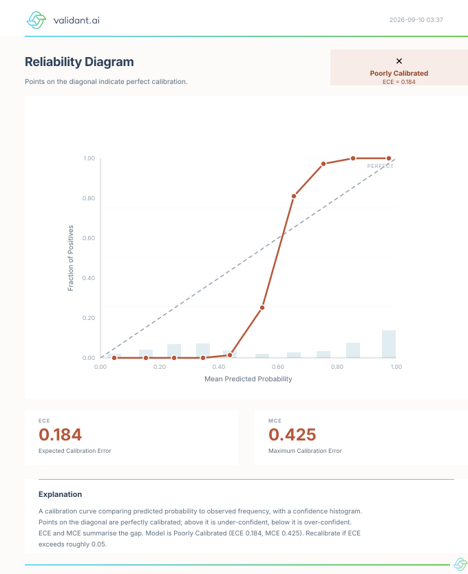
CalibrationAnalyzer. Points on the diagonal would mean perfect calibration; this model scores ECE 0.184 and is marked poorly calibrated.
Constructor
CalibrationAnalyzer(
y_true: ArrayLike,
y_prob: ArrayLike,
protected_attr: ArrayLike,
*,
attribute_name: Optional[str] = None,
n_bins: int = 10,
min_group_size: int = 30,
config: Optional[Dict[str, Any]] = None,
)Analysis Workflow
y_true, y_prob, protected_attr"] --> EVAL["evaluate_calibration()"] EVAL --> ECE["ECE, MCE, Brier Score
per group"] INIT --> DISP["analyze_disparity()"] DISP --> DISPRES["Calibration disparity
Most/least miscalibrated groups"] INIT --> TRADE["analyze_tradeoffs()"] TRADE --> PARETO["Pareto frontier
Impossibility diagnosis"] INIT --> REC["get_recommendation()"] REC --> STRAT["Strategy recommendation
Priority & rationale"] INIT --> FULL["full_analysis()"] FULL --> REPORT["CalibrationReport
Comprehensive analysis"] REPORT --> FIT["fit_calibrator()"] FIT --> CAL["calibrate() / transform()"] CAL --> IMPROVED["Calibrated probabilities
Reduced disparity"]
Methods
| Method | Returns | Description |
|---|---|---|
full_analysis(**kwargs) |
CalibrationReport | Run comprehensive calibration analysis (keyword-only flags: include_tradeoffs, include_recommendation, include_brier_decomposition, context) |
evaluate_calibration() |
Dict[str, CalibrationMetricResult] | Compute ECE, MCE, and Brier score with group breakdown |
evaluate_ece() |
CalibrationMetricResult | Compute Expected Calibration Error |
evaluate_mce() |
CalibrationMetricResult | Compute Maximum Calibration Error |
evaluate_brier() |
CalibrationMetricResult | Compute Brier Score |
decompose_brier() |
BrierDecomposition | Decompose Brier into reliability, resolution, uncertainty |
analyze_disparity() |
CalibrationDisparityResult | Analyze calibration disparities across groups |
analyze_tradeoffs() |
TradeoffAnalysisResult | Analyze calibration-fairness trade-offs and Pareto frontier |
get_impossibility_diagnosis() |
Dict[str, Any] | Diagnose Kleinberg impossibility theorem conditions |
get_recommendation(context) |
CalibrationRecommendation | Get context-aware calibration strategy recommendation |
fit_calibrator(method) |
GroupCalibrator | Fit a group-specific calibrator |
calibrate(y_prob, protected_attr) |
np.ndarray | Apply calibration to probabilities |
transform(y_prob, protected_attr) |
np.ndarray | Apply fitted calibrator to new data |
evaluate_calibration_improvement() |
Dict[str, Any] | Compare before/after calibration metrics |
Properties
| Property | Type | Description |
|---|---|---|
n_samples |
int | Total number of samples |
n_groups |
int | Number of demographic groups |
groups |
List[str] | List of group names |
base_rate |
float | Overall positive class rate |
group_base_rates |
Dict[str, float] | Base rates per demographic group |
Example: Full Analysis
from vfairness.post_processing.calibration import CalibrationAnalyzer
# Create analyzer
analyzer = CalibrationAnalyzer(
y_true=labels,
y_prob=probabilities,
protected_attr=gender,
attribute_name='gender'
)
# Run full analysis
report = analyzer.full_analysis(context='lending')
# Print summary
print(report.summary())
# Check key findings
print(f"Well Calibrated: {report.is_well_calibrated}")
print(f"Significant Disparity: {report.has_significant_disparity}")
print(f"ECE: {report.overall_metrics['ece']:.4f}")
# Get recommendations
for issue in report.critical_issues:
print(f"[{issue['type']}] {issue['description']}")Example: Apply Calibration
# Fit calibrator and apply to new data
analyzer.fit_calibrator(method='isotonic')
calibrated_probs = analyzer.transform(y_prob_test, gender_test)
# Evaluate improvement
improvement = analyzer.evaluate_calibration_improvement()
print(f"ECE Before: {improvement['before']['overall_ece']:.4f}")
print(f"ECE After: {improvement['after']['overall_ece']:.4f}")
print(f"Improvement: {improvement['improvement']['overall_ece']:.4f}")CalibrationReport
The CalibrationReport object returned by full_analysis() contains:
| Attribute | Type | Description |
|---|---|---|
overall_metrics |
Dict[str, float] | ECE, MCE, Brier score |
group_metrics |
Dict[str, Dict] | Per-group calibration metrics |
disparity_analysis |
CalibrationDisparityResult | Disparity analysis results |
tradeoff_analysis |
TradeoffAnalysisResult | Trade-off analysis with Pareto frontier |
recommendation |
CalibrationRecommendation | Strategy recommendation |
is_well_calibrated |
bool | True if ECE < 0.05 |
has_significant_disparity |
bool | True if ECE disparity > 0.05 |
critical_issues |
List[Dict] | Critical issues identified |
recommendations |
List[str] | Prioritized action items |
The context parameter in full_analysis() tailors recommendations to your domain:
- risk_assessment: Prioritizes calibration for consistent risk interpretation
- lending: Emphasizes regulatory compliance and group-specific calibration
- healthcare: Focuses on individual risk accuracy for treatment decisions
- hiring: Considers error rate parity alongside calibration
- general: Balanced recommendations
Calibration Methods
Multiple calibration techniques for different use cases.
Choosing a Calibration Method
Parametric, fast"] Q1 -->|"Neural network"| Q_NN{"Large calibration
dataset?"} Q1 -->|"Ensemble / tree"| Q_DATA{"Sample size
per group?"} Q_NN -->|"Yes (≥ 1000)"| TEMP["Temperature Scaling
Single parameter, preserves ranking"] Q_NN -->|"No"| PLATT Q_DATA -->|"Large (≥ 500)"| ISO["Isotonic Regression
Non-parametric, flexible"] Q_DATA -->|"Medium (100–500)"| BETA["Beta Calibration
3-param, bounded"] Q_DATA -->|"Small (< 100)"| HIST["Histogram Binning
Simple, interpretable"]
PlattScaling
from vfairness.post_processing.calibration import PlattScaling
# Platt scaling fits logistic regression: P(y=1|f) = 1/(1 + exp(A*f + B))
calibrator = PlattScaling(regularization=0.0)
calibrator.fit(y_true, y_prob)
calibrated = calibrator.transform(y_prob_test)
# Access fitted parameters
print(f"A: {calibrator.a_:.4f}, B: {calibrator.b_:.4f}")IsotonicCalibrator
from vfairness.post_processing.calibration import IsotonicCalibrator
# Isotonic regression: non-parametric, preserves rank ordering
calibrator = IsotonicCalibrator(out_of_bounds='clip')
calibrator.fit(y_true, y_prob)
calibrated = calibrator.transform(y_prob_test)
# Access calibration thresholds
print(f"Number of isotonic segments: {len(calibrator.x_thresholds_)}")Factory Function
from vfairness.post_processing.calibration import create_calibrator
# Create calibrator by name
calibrator = create_calibrator('isotonic')
calibrator = create_calibrator('platt', regularization=0.1)
calibrator = create_calibrator('beta', parameters='abm')
calibrator = create_calibrator('temperature')
calibrator = create_calibrator('histogram', n_bins=15)Calibration Metrics
Quantify calibration quality with specialized metrics.
The calibration_difference() function in the Classification Metrics section computes the maximum ECE gap across groups as a single fairness metric. Use it for quick fairness audits; use the functions below for deeper calibration analysis and remediation.
Expected Calibration Error
from vfairness.post_processing.calibration import expected_calibration_error
# Compute ECE with group breakdown
result = expected_calibration_error(
y_true, y_prob,
protected_attr=gender, # Optional: group analysis
n_bins=10,
strategy='uniform' # or 'quantile'
)
print(f"Overall ECE: {result.overall_value:.4f}")
print(f"Is well-calibrated: {result.is_well_calibrated}")
# Per-group ECE
for group, ece in result.group_values.items():
print(f" {group}: {ece:.4f}")
# ECE disparity between groups
print(f"Max group disparity: {result.max_group_disparity:.4f}")Interpretation Thresholds
| Calibration Difference | Assessment | Recommended Action |
|---|---|---|
| ≤ 0.03 | Excellent | No action needed |
| 0.03 – 0.05 | Acceptable | Monitor; document in fairness report |
| 0.05 – 0.08 | Concerning | Investigate root cause; consider group-specific calibration |
| 0.08 – 0.10 | Poor | Apply remediation; review training data balance |
| ≥ 0.10 | Critical | Mandatory remediation before deployment |
Brier Score Decomposition
from vfairness.post_processing.calibration import brier_score_decomposition
# Decompose Brier = Reliability - Resolution + Uncertainty
decomp = brier_score_decomposition(y_true, y_prob, n_bins=10)
print(f"Brier Score: {decomp.brier_score:.4f}")
print(f" Reliability: {decomp.reliability:.4f}") # Lower is better
print(f" Resolution: {decomp.resolution:.4f}") # Higher is better
print(f" Uncertainty: {decomp.uncertainty:.4f}") # Fixed for dataset
print(f"Skill Score: {decomp.skill_score:.4f}") # Improvement over climatologyCalibration Disparity Analysis
from vfairness.post_processing.calibration import calibration_disparity
# Comprehensive disparity analysis
result = calibration_disparity(y_true, y_prob, race)
print(f"ECE Disparity: {result.ece_disparity:.4f}")
print(f"MCE Disparity: {result.mce_disparity:.4f}")
print(f"Most miscalibrated: {result.most_miscalibrated_group}")
print(f"Significant disparity: {result.has_significant_disparity}")
# Recommendations
for rec in result.recommendations:
print(f" - {rec}")Group-Specific Calibration
Apply calibration separately for each demographic group to ensure consistent probability interpretation.
GroupCalibrator
from vfairness.post_processing.calibration import GroupCalibrator
# Fit group-specific calibrators
calibrator = GroupCalibrator(
method='isotonic', # Calibration method
min_group_size=50, # Min samples for group-specific
fallback_strategy='global' # For small groups: 'global' or 'none'
)
# 'borrow' (borrowing a calibrator from similar groups) raises
# NotImplementedError. It used to be accepted and run 'global' silently.
calibrator.fit(y_true_train, y_prob_train, protected_attr_train)
calibrated_probs = calibrator.transform(y_prob_test, protected_attr_test)
# Get calibration improvement report
result = calibrator.get_calibration_result()
print(f"Overall ECE improvement: {result.overall_improvement:.4f}")
for group, improvement in result.improvement.items():
pre_ece = result.pre_calibration_ece[group]
post_ece = result.post_calibration_ece[group]
print(f" {group}: {pre_ece:.3f} → {post_ece:.3f} (Δ={improvement:.3f})")IntersectionalCalibrator
from vfairness.post_processing.calibration import IntersectionalCalibrator
import pandas as pd
# Create intersectional groups (e.g., gender × race)
intersectional_attrs = pd.DataFrame({
'gender': gender,
'race': race
})
# Calibrate with hierarchical borrowing for small groups
calibrator = IntersectionalCalibrator(
method='isotonic',
min_group_size=30,
borrowing_strategy='hierarchical' # Borrow from parent groups
)
calibrator.fit(y_true, y_prob, intersectional_attrs)
calibrated = calibrator.transform(y_prob_test, intersectional_attrs_test)Calibration-Fairness Trade-offs
Analyze the fundamental tension between calibration and other fairness criteria.
Kleinberg et al. (2016) proved that calibration, balance for the positive class, and balance for the negative class cannot be simultaneously satisfied when base rates differ between groups. This module helps navigate these unavoidable trade-offs.
The Impossibility Triangle
differ between groups?"} Q -->|"No — equal
base rates"| ALL["✅ All three criteria
can be satisfied"] Q -->|"Yes — unequal
base rates"| PICK["⚠️ Must choose at most TWO"] PICK --> C1["Calibration
+
Balance for Positives"] PICK --> C2["Calibration
+
Balance for Negatives"] PICK --> C3["Balance Positives
+
Balance Negatives"] C1 --> LOSE1["❌ Sacrifices:
Balance for Negatives"] C2 --> LOSE2["❌ Sacrifices:
Balance for Positives"] C3 --> LOSE3["❌ Sacrifices:
Calibration"]
Trade-off Analysis
from vfairness.post_processing.calibration import analyze_calibration_fairness_tradeoff
# Analyze trade-off at different thresholds
result = analyze_calibration_fairness_tradeoff(
y_true, y_prob, gender,
fairness_metric='fpr_parity', # or 'fnr_parity', 'demographic_parity'
thresholds=[0.1, 0.2, 0.3, 0.4, 0.5, 0.6, 0.7, 0.8, 0.9]
)
print(f"Trade-off severity: {result.tradeoff_severity}")
print(f"Base rate disparity: {result.base_rate_disparity:.3f}")
# Current model position
print(f"Current ECE: {result.current_point.calibration_error:.3f}")
print(f"Current fairness violation: {result.current_point.fairness_violation:.3f}")
# Recommendations
for rec in result.recommendations:
print(f" - {rec}")Understanding the Pareto Frontier
The Pareto frontier (or Pareto front) is the set of model configurations where no objective can be improved without worsening another. In the calibration-fairness context, each point on the frontier represents a threshold or calibration strategy where you cannot reduce calibration error without increasing fairness violation, or vice versa.
Low ECE (0.02)
High fairness violation (0.15)
Well-calibrated but unfair"] B["Point B
Balanced
ECE 0.06 · Violation 0.06
Compromise"] C["Point C
Low violation (0.02)
High ECE (0.12)
Fair but miscalibrated"] end A -->|"Trade more
calibration"| B B -->|"Trade more
calibration"| C D["Point D (dominated)
ECE 0.10 · Violation 0.12
Strictly worse than B"] -.->|"Move to
frontier"| B
Typical Pareto Frontier Visualisation
The chart below shows what a calibration–fairness Pareto frontier looks like in practice. Points on the blue curve are Pareto-optimal; points in the shaded region are dominated (strictly improvable).
- On the frontier (blue curve) — the configuration is Pareto-optimal: any improvement on one axis requires a sacrifice on the other. Points A, B, and C above are all valid choices depending on your priorities.
- Below the frontier / dominated (red dots, shaded area) — the configuration is sub-optimal: another configuration exists that is better on both axes. Points D and E are dominated and should be discarded.
- Current model (orange ring) — where your model currently sits. If it falls inside the dominated region, you can improve it for free by moving to the nearest frontier point (dashed arrow).
- Choosing a point — is a values decision, not a technical one. The frontier tells you what is achievable; your organization's risk tolerance, regulatory requirements, and ethical priorities determine where on the frontier to operate.
Practical Workflow
- Map the frontier — use
analyze_calibration_fairness_tradeoff()to sweep thresholds and calibration strategies, plotting ECE vs. fairness violation. - Identify dominated points — any current model position below the frontier can be improved for free by switching to a frontier configuration.
- Select your operating point — regulatory contexts (e.g., EU AI Act) may mandate maximum fairness violation, effectively choosing the point for you. In other contexts, a cost-benefit analysis guides the decision.
- Visualise with
plot_tradeoff_curve()— generates the frontier plot with your model's current position annotated, making it easy to communicate trade-offs to stakeholders.
from vfairness.post_processing.calibration import (
analyze_calibration_fairness_tradeoff,
plot_tradeoff_curve
)
import matplotlib.pyplot as plt
# 1. Compute the frontier
result = analyze_calibration_fairness_tradeoff(
y_true, y_prob, gender,
fairness_metric='fpr_parity',
thresholds=[t / 20 for t in range(1, 20)] # 0.05 to 0.95
)
# 2. Visualise: frontier + current model position
ax = plot_tradeoff_curve(
result,
title="Calibration-Fairness Pareto Frontier",
show_current=True, # mark the current operating point
show_pareto=True # highlight the Pareto frontier
)
ax.figure.savefig("pareto_frontier.png", dpi=300, bbox_inches="tight")
# 3. Pick the frontier point that meets a target (filter the Pareto set)
candidates = [
p for p in result.pareto_points
if p.calibration_error <= 0.05 and p.fairness_violation <= 0.08
]
if candidates:
target = min(candidates, key=lambda p: p.fairness_violation)
print(f"Recommended threshold: {target.threshold:.2f}")
print(f"ECE: {target.calibration_error:.3f}")
print(f"Fairness violation: {target.fairness_violation:.3f}")
else:
print("No frontier point meets both targets; relax one constraint.")Strategy Recommendation
from vfairness.post_processing.calibration import recommend_calibration_strategy
# Get context-aware recommendation
rec = recommend_calibration_strategy(
y_true, y_prob, gender,
context='lending' # or 'risk_assessment', 'healthcare', 'hiring', 'general'
)
print(f"Strategy: {rec.strategy}")
print(f"Priority: {rec.priority}")
print(f"Rationale: {rec.rationale}")
# `is not None`, not a bare truthiness test: expected_improvement is
# Optional[float], and two of the strategies ('threshold_optimization_first'
# and 'monitor_only') leave it unset. A bare `if rec.expected_improvement:`
# reads a measured 0.0 exactly like a value nobody estimated.
if rec.expected_improvement is None:
print(f"Expected ECE improvement: not estimated for '{rec.strategy}'")
else:
print(f"Expected ECE improvement: {rec.expected_improvement:.3f}")
if rec.tradeoff_warning:
print(f"Warning: {rec.tradeoff_warning}")Impossibility Diagnostics
from vfairness.post_processing.calibration import impossibility_diagnostics
# Diagnose impossibility theorem conditions
diag = impossibility_diagnostics(y_true, y_prob, race)
print(f"Base rates differ: {diag['base_rates_differ']}")
print(f"Impossibility theorem applies: {diag['impossibility_applies']}")
print(f"Base rate disparity: {diag['base_rate_disparity']:.3f}")
print(f"\nExplanation: {diag['explanation']}")Calibration Visualization
Visual tools for calibration analysis and communication.
| Function | Description |
|---|---|
plot_reliability_diagram() |
Standard calibration curve with histogram |
plot_group_calibration() |
Calibration curves per demographic group |
plot_calibration_comparison() |
Compare multiple models/methods |
plot_calibration_disparity() |
Bar charts of ECE/MCE/Brier by group |
plot_tradeoff_curve() |
Pareto frontier with current position, dominated region, and annotated extremes (see Trade-off Analysis) |
create_calibration_dashboard() |
Comprehensive multi-panel dashboard |
from vfairness import (
plot_reliability_diagram,
plot_group_calibration,
create_calibration_dashboard
)
import matplotlib.pyplot as plt
# Basic reliability diagram
ax = plot_reliability_diagram(y_true, y_prob, n_bins=10, show_histogram=True)
plt.title("Model Calibration")
plt.savefig("reliability_diagram.png", dpi=300)
# Group-specific calibration
ax = plot_group_calibration(y_true, y_prob, gender, n_bins=10)
plt.title("Calibration by Gender")
plt.savefig("group_calibration.png", dpi=300)
# Comprehensive dashboard (before and after calibration)
fig = create_calibration_dashboard(
y_true, y_prob, gender,
calibrated_probs=calibrated_probs # Optional: show improvement
)
plt.savefig("calibration_dashboard.png", dpi=300)SVG Templates vfairness.rendering
Dependency-free SVG alternatives for calibration visualisations. No plotting library required.
reliability_diagram_to_svg(y_true, y_prob)
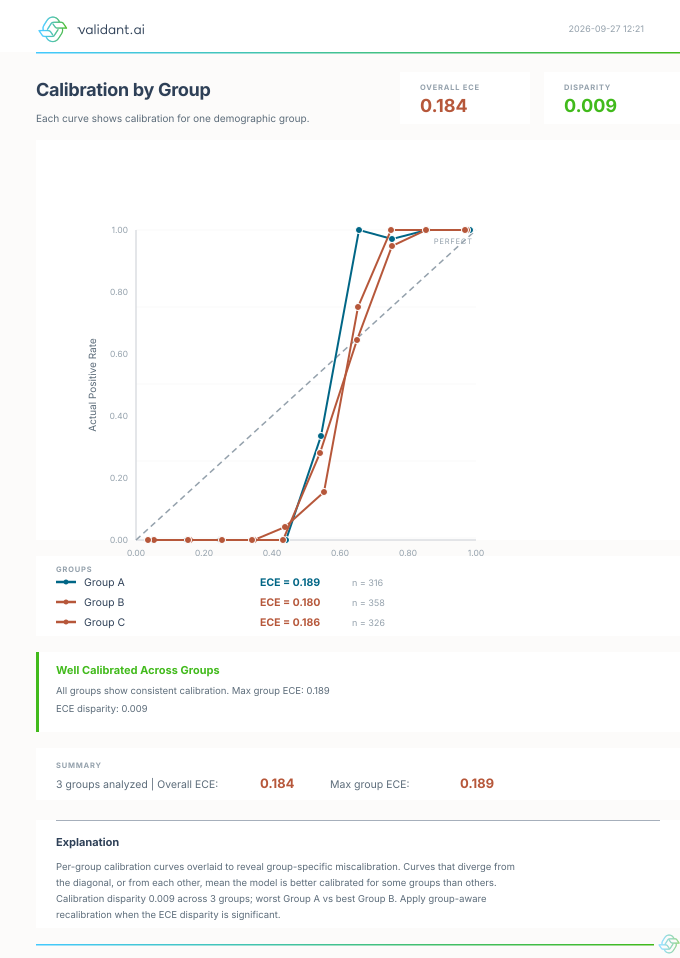
group_calibration_to_svg(y_true, y_prob, attr)
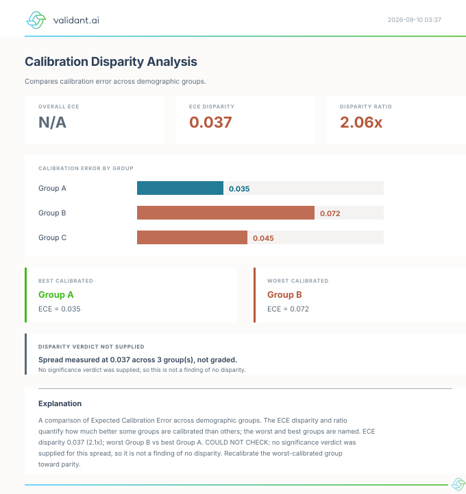
calibration_disparity_to_svg(data)
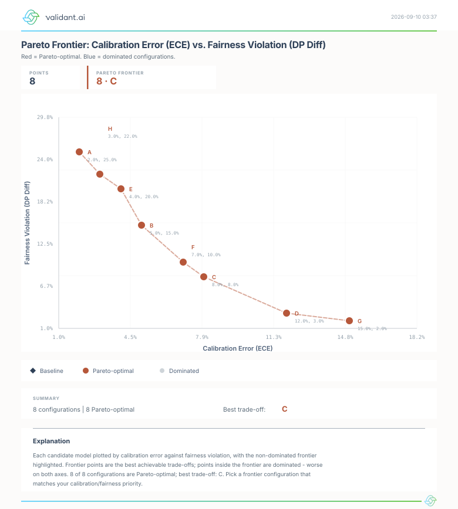
pareto_frontier_to_svg(errors, violations)
View all calibration templates in the SVG Gallery →
from vfairness.rendering import reliability_diagram_to_svg, pareto_frontier_to_svg
svg = reliability_diagram_to_svg(y_true, y_prob, n_bins=10, save_path="reliability.svg")
svg = pareto_frontier_to_svg(
calibration_errors=[0.05, 0.08, 0.12, 0.03],
fairness_violations=[0.10, 0.06, 0.03, 0.12],
labels=["Platt", "Isotonic", "Beta", "Temperature"],
save_path="pareto.svg"
)Threshold Optimization
Threshold Optimization Module
Achieve fairness without retraining by optimizing group-specific decision thresholds. The most non-invasive post-processing intervention for any classifier that outputs probabilities.
Threshold optimization is ideal when you cannot retrain the model (vendor-provided, regulatory constraints, or frozen pipeline) but need to achieve fairness constraints. It works by finding optimal per-group thresholds that satisfy fairness criteria while minimizing accuracy loss.
Key Classes
from vfairness.post_processing import (
GroupThresholdOptimizer,
MultiObjectiveThresholdOptimizer,
ThresholdAnalyzer,
FairnessConstraintType
)
# Single-constraint optimization
optimizer = GroupThresholdOptimizer(
constraint=FairnessConstraintType.DEMOGRAPHIC_PARITY,
tolerance=0.05 # Allow 5% disparity
)
optimizer.fit(y_true=y_true, y_prob=y_prob, sensitive_attr=sensitive_attr)
print(optimizer.result_.group_thresholds)
# {'female': 0.55, 'male': 0.58}
y_pred_fair = optimizer.predict(y_prob, sensitive_attr)
# Multi-objective optimization (Pareto frontier)
multi_opt = MultiObjectiveThresholdOptimizer(
constraint=FairnessConstraintType.DEMOGRAPHIC_PARITY,
n_thresholds=30 # Resolution of search (default)
)
multi_opt.fit(y_true=y_true, y_prob=y_prob, sensitive_attr=sensitive_attr)
print(len(multi_opt.pareto_frontier_)) # Pareto-optimal candidate solutions
multi_opt.select_point(0) # Pick one, then predict with it
y_pred_pareto = multi_opt.predict(y_prob, sensitive_attr)
# Comprehensive analysis
analyzer = ThresholdAnalyzer(y_true, y_prob, sensitive_attr)
report = analyzer.full_analysis()
print(report.summary())GroupThresholdOptimizer
Optimizes decision thresholds per demographic group to satisfy a single fairness constraint.
Constructor
GroupThresholdOptimizer(
constraint: Union[str, FairnessConstraintType, ThresholdConstraint] = 'equalized_odds',
tolerance: float = 0.05,
n_thresholds: int = 50,
objective: str = 'balanced_accuracy',
grid_search: bool = True
)'demographic_parity').'accuracy', 'precision', 'recall', 'f1_score', 'balanced_accuracy'. Any other name raises ValueError at construction; it used to be replaced by accuracy while the result still reported the name that was asked for. The same rule applies to ThresholdOptimizer and to every entry of MultiObjectiveThresholdOptimizer(objectives=[...]).True. Grid search is the only optimisation this class has (a 2D grid for two groups, iterative refinement for more); grid_search=False raises NotImplementedError. There is no gradient-based path: the flag used to be accepted and ignored, so False ran the same grid search it promised to replace.Methods
fit(y_true, y_prob, sensitive_attr, sample_weight=None)Checked: Find optimal thresholds satisfying the constraint; returns self
predict(y_prob, sensitive_attr)Checked: Apply optimized thresholds to make predictions
fit_predict(y_true, y_prob, sensitive_attr)Checked: Fit and predict in one call
result_.group_thresholds: After fit(), dict mapping group names to their optimal thresholds (on the fitted ThresholdResult)
MultiObjectiveThresholdOptimizer
Finds Pareto-optimal threshold configurations that trade off a single fairness constraint against multiple performance objectives (by default accuracy and F1).
Multiple fairness constraints often cannot be satisfied simultaneously (Chouldechova 2017, Kleinberg et al. 2016). This optimizer therefore fixes one constraint and exposes the Pareto frontier across the performance objectives, the set of feasible solutions where no objective can be improved without worsening another.
from vfairness.post_processing import (
MultiObjectiveThresholdOptimizer,
FairnessConstraintType
)
optimizer = MultiObjectiveThresholdOptimizer(
constraint=FairnessConstraintType.DEMOGRAPHIC_PARITY,
n_thresholds=30, # Resolution of search (default)
objectives=['accuracy', 'f1_score'] # Performance metrics to trade off (default)
)
optimizer.fit(y_true=y_true, y_prob=y_prob, sensitive_attr=sensitive_attr) # returns self
# Inspect the Pareto frontier: a list of ThresholdResult candidates
for i, point in enumerate(optimizer.pareto_frontier_):
print(i, point.group_thresholds, point.performance_metrics['accuracy'])
# Each ThresholdResult includes:
# - group_thresholds: Dict[str, float] per-group thresholds
# - performance_metrics: Dict[str, float] (accuracy, f1_score, ...)
# - constraint_violations: per-constraint violation details
# - is_feasible: Optional[bool]: True / False / None when the constraint
# could not be measured (a group rate with an empty denominator). None is
# NOT feasible=False; summary() prints "not assessed" for it.
# Pick a point, then predict with it
optimizer.select_point(0)
y_pred_fair = optimizer.predict(y_prob, sensitive_attr)ThresholdAnalyzer
Comprehensive analysis tool for understanding threshold selection trade-offs.
from vfairness.post_processing import ThresholdAnalyzer
analyzer = ThresholdAnalyzer(y_true, y_prob, sensitive_attr)
# Full analysis across all threshold configurations
report = analyzer.full_analysis()
print(report.summary())
# Impact of one specific threshold on fairness and accuracy
impact = analyzer.analyze_threshold(0.5)
# Best single threshold for one constraint and objective
best = analyzer.find_optimal_threshold(
constraint='demographic_parity',
objective='accuracy',
tolerance=0.05
)
# Thresholds where a constraint stays within tolerance
region = analyzer.find_feasible_region('demographic_parity', tolerance=0.05)Prediction Reweighting
Prediction Reweighting Module
Adjust predicted probabilities post-hoc to achieve fairness constraints. Unlike threshold optimization which only changes the decision boundary, reweighting modifies the probability estimates themselves.
Use Threshold Optimization when you only need fair binary decisions and can live with unchanged probability estimates.
Use Reweighting when the probability estimates themselves must be fair (e.g., for ranking, risk scoring, or downstream probability-based decisions).
Available Methods
| Method | Approach | Best For |
|---|---|---|
PredictionReweighter |
Multiplicative or additive adjustment per group | Simple, interpretable adjustments |
RejectionOptionClassifier |
Only modify predictions near decision boundary | Minimal changes, high-confidence predictions unchanged |
CalibratedEqualizer |
Equalize probability distributions by quantile matching | When group score distributions must match (does not preserve calibration) |
DistributionMatcher |
Match probability distributions across groups | Strongest fairness guarantee |
from vfairness.post_processing import (
PredictionReweighter,
RejectionOptionClassifier,
CalibratedEqualizer,
DistributionMatcher,
ReweightingAnalyzer
)
# Simple multiplicative reweighting
reweighter = PredictionReweighter(
constraint='demographic_parity',
method='multiplicative'
)
reweighter.fit(y_true=y_true, y_prob=y_prob, sensitive_attr=sensitive_attr)
y_prob_fair = reweighter.transform(y_prob, sensitive_attr)
# Rejection Option Classification (ROC)
roc = RejectionOptionClassifier(
theta=0.1, # Only modify predictions within ±0.1 of threshold
threshold=0.5
)
roc.fit(y_true=y_true, y_prob=y_prob, sensitive_attr=sensitive_attr)
y_pred_fair = roc.predict(y_prob, sensitive_attr)PredictionReweighter
Adjusts predicted probabilities using simple multiplicative or additive transformations per group.
Constructor
PredictionReweighter(
constraint: str = 'demographic_parity',
method: str = 'multiplicative', # 'multiplicative' or 'additive'
target_rate: Optional[float] = None # Target positive rate (None = overall rate)
)How It Works
Multiplicative: p_new = p_old × scale_factor where scale factor brings group rates to target.
Additive: p_new = p_old + offset where offset shifts group rates to target.
Ranking. The adjusted values are clipped to [0, 1], so every sample pushed past a boundary lands on the same value and loses its within-group rank. fit() counts them: result_.calibration_impact['n_clipped']. A preserve_ranking flag used to be accepted here; it was never read, and the property it named does not hold, so it is gone rather than left as a promise.
Sample weights. fit(..., sample_weight=...) is honoured here (weighted group means and weighted default target rate). The other three reweighters estimate hard rates or quantiles and have no weighted form: RejectionOptionClassifier, CalibratedEqualizer and DistributionMatcher accept None or a uniform vector and raise NotImplementedError for any other weighting rather than accepting and ignoring it.
RejectionOptionClassifier
Implements Rejection Option Based Classification (ROC) from Kamiran et al. (2012). Only modifies predictions near the decision boundary, leaving high-confidence predictions unchanged.
ROC embodies the principle of minimal intervention: only change predictions where the model is uncertain (near 0.5). High-confidence predictions (near 0 or 1) are assumed to be reliable and left untouched. This preserves model accuracy while improving fairness.
from vfairness.post_processing import RejectionOptionClassifier
roc = RejectionOptionClassifier(
theta=0.1, # Critical region: [threshold - θ, threshold + θ]
threshold=0.5,
unprivileged_group=None # Auto-detected during fit() when None
)
roc.fit(y_true=y_true, y_prob=y_prob, sensitive_attr=sensitive_attr)
# Returns binary predictions (not probabilities)
y_pred_fair = roc.predict(y_prob, sensitive_attr)Reference
Kamiran, F., Karim, A., & Zhang, X. (2012). Decision Theory for Discrimination-Aware Classification. ICDM 2012.
CalibratedEqualizer
Equalizes probability distributions across groups by mapping each group onto the pooled distribution via quantile matching. Despite the class name it does not measure, model or preserve calibration: the only calibration figure it reports is the mean absolute shift it applied, result_.calibration_impact['distribution_shift'].
from vfairness.post_processing import CalibratedEqualizer
equalizer = CalibratedEqualizer(
n_quantiles=100 # Resolution of the quantile mapping
)
equalizer.fit(y_true=y_true, y_prob=y_prob, sensitive_attr=sensitive_attr)
y_prob_fair = equalizer.transform(y_prob, sensitive_attr)
# How much the mapping moved the probabilities, on average
print(equalizer.result_.calibration_impact['distribution_shift'])
# A preserve_calibration flag used to be accepted here. It was never read
# (True and False produced byte-identical output) and nothing in the mapping
# preserves calibration, so it was removed rather than kept as a promise.Reference
Pleiss, G., et al. (2017). On Fairness and Calibration. NeurIPS 2017.
ReweightingAnalyzer
Comprehensive analysis tool for comparing reweighting methods and their trade-offs.
from vfairness.post_processing import ReweightingAnalyzer
analyzer = ReweightingAnalyzer(y_true, y_prob, sensitive_attr)
# Compare all methods
report = analyzer.full_analysis()
print(report.summary())
print(f"Recommended method: {report.best_method}")
# Output:
# Reweighting Analysis Report
# ==================================================
# Analyzed 5 reweighting methods
# Recommended method: rejection_option
#
# Recommendations:
# • For maximum fairness improvement, use 'distribution_matching'
# • 'rejection_option' preserves accuracy best (no accuracy loss)
# • Overall recommendation: 'rejection_option' provides the best trade-off4. Evaluation & Measurement
Fairness metrics & analysis, statistical tools, and visualization to quantify fairness through validated metrics and interpretable explanations.
from vfairness.evaluation import (
FairnessAnalyzer,
demographic_parity_difference,
classification_fairness_report,
print_report
)What's Included
Fairness Metrics & Analysis
Fairness Metrics Module
The Fairness Metrics module provides comprehensive tools for measuring and analyzing model fairness across classification, regression, and ranking tasks.
Jupyter notebook, Demo Notebook:vfairness_4_metrics_demo.ipynb Classification, regression & ranking metrics with confidence intervalsOpen it to see this run end to end. Every notebook is executed on each build, so the code here matches the library you installed.
flowchart TB
subgraph FM["Fairness Metrics Module"]
FA["FairnessAnalyzer
(Unified Interface)"]
subgraph Metrics["Metric Types"]
CL["Classification
DP, EO, EOD, PP"]
RG["Regression
MAE, RMSE parity"]
RK["Ranking
Exposure parity"]
end
subgraph Features["Key Features"]
CI["Confidence Intervals
Bootstrap & Bayesian"]
EX["FairExplAIner
Human-readable explanations"]
IS["Intersectional
Multi-attribute analysis"]
end
subgraph Output["Reporting"]
RP["Fairness Reports"]
VZ["Visualizations"]
ML["MLflow Integration"]
end
end
FA --> Metrics
FA --> Features
FA --> Output
Metric Categories
FairnessAnalyzer
The unified entry point for all fairness metric computations.
Background
Once a model has been trained, FairnessAnalyzer measures how fairly its predictions distribute across
demographic groups. It supports three task types — classification, regression,
and ranking — and auto-detects the appropriate metric family from the data.
Four core classification fairness metrics correspond to different legal and ethical frameworks:
| Metric | Question It Answers | Legal Analogy |
|---|---|---|
| Demographic Parity Difference | Are groups approved at the same rate? | Disparate impact (80% rule) |
| Equal Opportunity Difference | Among qualified people, are groups accepted equally? | Equal access for equally qualified |
| Equalized Odds Difference | Are error rates (FPR and TPR) equal across groups? | Equal error burden |
| Predictive Parity Difference | Does a positive prediction mean the same thing for each group? | Equal precision |
All metrics support bootstrap confidence intervals so you can assess statistical significance. Optionally enable FairExplAIner to get plain-language summaries suitable for non-technical stakeholders.
Example Dashboard
The visualisation below shows a typical metric dashboard produced by FairnessAnalyzer, including per-group prediction rates, gap annotations, and a FairExplAIner summary card.
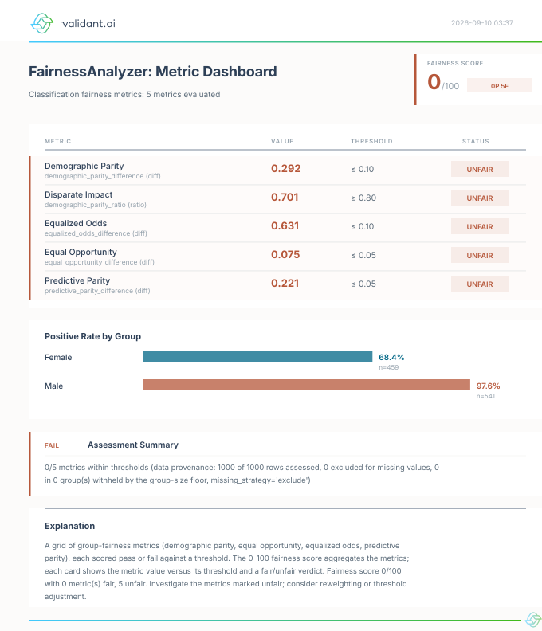
FairnessAnalyzer classification dashboard. Five metrics evaluated against their thresholds, none passing: demographic parity reads 0.292 against a limit of 0.10.
A unified wrapper class providing a single interface for fairness computations on classification and regression tasks. Ranking fairness is not one of its task types and is not among its methods; it is measured by the standalone ranking functions described under Ranking Metrics.
Constructor
FairnessAnalyzer(
y_true: ArrayLike,
y_pred: ArrayLike,
sensitive_attr: ArrayLike,
y_prob: Optional[ArrayLike] = None,
*, # everything below is keyword-only
task_type: Optional[str] = None,
min_group_size: int = 30,
missing_strategy: str = 'exclude',
backend: str = 'auto',
fair_explainer: bool = False,
cache: bool = False
)y_true in length and type.'classification' or 'regression'. Auto-detected if None. Matching is exact and case-sensitive; anything else raises ConfigurationError. Ranking is not an analyzer task type: ranking fairness compares exposure across a ranked list rather than y_true against y_pred per group, so it lives in the standalone functions exposure_parity_difference, exposure_parity_ratio, attention_weighted_rank_fairness and normalized_discounted_kl_divergence, which take (rankings, groups).'exclude', 'as_group', or 'error'.'auto' or 'native'. Both run the same native implementation: vfairness delegates to no other library, so 'fairlearn' and 'aequitas' are refused with ConfigurationError rather than silently downgraded, and so is any unrecognised value. repr() prints the backend that actually executed, because that line lands in notebooks and audit logs.Methods
| Method | Returns | Description |
|---|---|---|
demographic_parity_difference(include_ci=False) |
float | MetricResult | Gap in positive prediction rates |
vfairness.demographic_parity_ratio(y_true, y_pred, sensitive_attr) |
float | Ratio of positive rates (80% rule). A module-level function, not an analyzer method: analyzer.demographic_parity_ratio(...) raises AttributeError. For the interval and its verdict call disparate_impact_ratio_with_ci directly, which is the route the README points at for the four-fifths statistic. |
equal_opportunity_difference(include_ci=False) |
float | MetricResult | Gap in true positive rates |
equalized_odds_difference(include_ci=False) |
float | MetricResult | Max of TPR and FPR differences |
compute_all_metrics(include_ci=False) |
Dict | All applicable metrics at once |
get_report(include_ci=False, ...) |
Dict | Comprehensive fairness report |
enable_fair_explainer() |
None | Enable FairExplAIner mode |
explain_metric(metric_name) |
MetricExplanation | Get explanation for specific metric |
compare_with_fairlearn() |
Dict | Compare results with Fairlearn library |
Basic Example
from vfairness import FairnessAnalyzer
import numpy as np
# Sample data
y_true = np.array([1, 0, 1, 0, 1, 0, 1, 0] * 50)
y_pred = np.array([1, 0, 1, 1, 1, 0, 0, 0] * 50)
gender = np.array(['M', 'M', 'M', 'M', 'F', 'F', 'F', 'F'] * 50)
# Create analyzer
analyzer = FairnessAnalyzer(
y_true=y_true,
y_pred=y_pred,
sensitive_attr=gender,
fair_explainer=True
)
# Compute single metric
dp = analyzer.demographic_parity_difference()
print(f"Demographic Parity Difference: {dp:.3f}")
# Compute with confidence interval
result = analyzer.demographic_parity_difference(
include_ci=True,
n_bootstrap=5000,
confidence_level=0.95
)
print(f"Value: {result.value:.3f}")
ci_low, ci_high = result.confidence_interval
print(f"95% CI: [{ci_low:.3f}, {ci_high:.3f}]")
# Generate full report
report = analyzer.get_report(include_ci=True)
print(f"Fairness Score: {report['assessment']['fairness_score']:.1%}")Demographic parity, equalized odds, and calibration cannot all be satisfied simultaneously (Choquet et al., 2016; Kleinberg et al., 2016) except in trivial cases.
All classification fairness metrics require binary (0/1) labels. Multi-class classification fairness is not supported.
FairExplAIner
Human-readable fairness explanations integrated into the FairnessAnalyzer. FairExplAIner translates metric values into plain-language summaries suitable for non-technical stakeholders.
Background
Fairness metrics like "Demographic Parity Difference = 0.15" are opaque to business owners, compliance officers, and end users.
FairExplAIner bridges this gap by converting every metric result into three components:
- Summary — a one-sentence plain-language description of what the metric value means in context
- Interpretation — a contextual explanation of whether the result is concerning and why
- Recommendation — concrete next steps to investigate or mitigate the finding
FairExplAIner is not a separate class — it is a capability layer inside FairnessAnalyzer.
Enable it via the constructor flag or the enable_fair_explainer() method. Once enabled,
every metric computation attaches an explanation to its result object.
Usage
# Enable FairExplAIner via constructor
analyzer = FairnessAnalyzer(
y_true, y_pred, sensitive_attr,
fair_explainer=True
)
# Or enable after creation
analyzer.enable_fair_explainer()
# Get explanation for a specific metric
explanation = analyzer.explain_metric('demographic_parity_difference')
print(explanation.summary) # Plain-language summary
print(explanation.recommendation) # Actionable next stepsKey Methods
| Method | Returns | Description |
|---|---|---|
enable_fair_explainer() |
None | Activate explanation mode on the analyzer |
explain_metric(metric_name) |
MetricExplanation | Get a human-readable explanation for a computed metric |
FairExplAIner is part of FairnessAnalyzer — it is not a standalone class. Enable it via the fair_explainer=True constructor parameter or the enable_fair_explainer() method.
FairnessExplainer — Unified Explanation Facade
While FairExplAIner explains evaluation metrics inside FairnessAnalyzer,
the FairnessExplainer facade generates educational, context-aware explanations for
any result object produced across the entire library — from bias audit reports and calibration
analyses to drift detection results and CI/CD gate decisions.
- One unified API to explain any result from any module
- Severity grading (info → critical) for every finding
- Plain-language summaries suitable for non-technical stakeholders
- Actionable recommendations distilled from each analysis
- Extensible — register custom handlers for your own result types
How It Works
The FairnessExplainer uses a registry pattern: each result type maps to a
domain-specific handler function. When you call explain(), it looks up the
handler by class name and returns a structured ExplanationReport.
flowchart LR
subgraph MODULES["Library Modules"]
direction TB
BD["BiasDetector
.full_audit()"]
FE["FeatureEngineeringAnalyzer
.full_analysis()"]
CA["CalibrationAnalyzer
.full_analysis()"]
TA["ThresholdAnalyzer
.full_analysis()"]
RA["ReweightingAnalyzer
.full_analysis()"]
FT["FairnessTrainingAnalyzer
.full_analysis()"]
DD["FairnessDriftDetector
.check_drift()"]
FM["FairnessMonitor
.update_and_check()"]
DV["DataBiasValidator
.validate()"]
MG["ModelFairnessGate
.evaluate()"]
end
subgraph FACADE["FairnessExplainer"]
direction TB
REG["Registry
type_name -> handler"]
EXP["explain(result)"]
REG --> EXP
end
subgraph OUTPUT["ExplanationReport"]
direction TB
T["title + summary"]
S["severity"]
M["MetricExplanation[]"]
R["recommendations[]"]
end
BD --> FACADE
FE --> FACADE
CA --> FACADE
TA --> FACADE
RA --> FACADE
FT --> FACADE
DD --> FACADE
FM --> FACADE
DV --> FACADE
MG --> FACADE
FACADE --> OUTPUT
Two Ways to Get Explanations
Every class provides a convenience get_explanation() method that delegates to the facade — but you can also call the facade directly.
# Call get_explanation() on any class
detector = BiasDetector(df, protected_attributes=['gender'])
report = detector.full_audit()
explanation = detector.get_explanation(report)
print(explanation)Quickest path — the class already knows which handler to use.
from vfairness.explainer import FairnessExplainer
# Pass any result object directly
report = detector.full_audit(df)
explanation = FairnessExplainer.explain(report)
print(explanation)Useful when you receive results from different sources and want one entry point.
Severity Levels
Every explanation is graded on a five-level severity scale. The ExplanationReport.severity
field reflects the worst severity across all individual metrics in the report.
Supported Result Types
The facade handles 11 result types across every module in the library.
| Result Type | Produced By | Module |
|---|---|---|
BiasAuditReport |
BiasDetector.full_audit() |
Preprocessing |
FeatureAnalysisReport |
FeatureEngineeringAnalyzer.full_analysis() |
Preprocessing |
CalibrationReport |
CalibrationAnalyzer.full_analysis() |
Post-Processing |
ThresholdAnalysisReport |
ThresholdAnalyzer.full_analysis() |
Post-Processing |
ReweightingAnalysisReport |
ReweightingAnalyzer.full_analysis() |
Post-Processing |
FairnessTrainingReport |
FairnessTrainingAnalyzer.full_analysis() |
In-Processing |
MultiscaleDriftResult |
FairnessDriftDetector.check_drift() |
Operations |
WindowMetrics |
FairnessMonitor.update_and_check() |
Operations |
DataValidationResult |
DataBiasValidator.validate() |
Operations |
GateDecision |
ModelFairnessGate.evaluate() |
Operations |
ExperimentResult |
FairnessExperiment.run_full_analysis() |
Experimentation |
Complete Example
A full workflow showing bias detection, explanation, and inspection of the returned object.
import pandas as pd
from vfairness import BiasDetector
from vfairness.explainer import FairnessExplainer
# 1. Run an analysis
df = pd.read_csv("loan_applications.csv")
detector = BiasDetector(df, protected_attributes=["gender", "ethnicity"])
report = detector.full_audit()
# 2. Get the explanation (Option A — convenience method)
explanation = detector.get_explanation(report)
# 3. Inspect the ExplanationReport
print(explanation.title) # "Bias Audit Explanation"
print(explanation.severity) # "medium"
print(explanation.summary) # one-paragraph narrative
print(explanation.recommendations)# ["Review representation ...", ...]
# 4. Iterate individual metric explanations
for metric in explanation.explanations:
print(f"{metric.metric_name}: {metric.severity}")
print(f" → {metric.recommendation}")
# 5. Serialise to dict (for dashboards / APIs)
data = explanation.to_dict()What the Output Looks Like
When you print() an ExplanationReport, it renders as a structured text report:
======================================================================== Bias Audit Explanation [MEDIUM] ======================================================================== The overall risk score of 0.45 represents significant bias risk. Mitigation is recommended before model training. ACTION ITEMS: 1. Review representation balance across protected groups 2. Investigate proxy variables flagged in the analysis 3. Consider reweighting or augmentation before training ------------------------------------------------------------------------ Overall Bias Risk Score [MEDIUM] Definition: Aggregate measure of dataset bias risk (0 = no risk, 1 = critical). Combines historical patterns, balance, statistical disparities, and proxy exposure. Value: 0.45 Evaluation: Significant bias risk detected. Benchmark: 0.0-0.2 low | 0.2-0.4 moderate | 0.4-0.6 significant Recommendation: Apply mitigation before model training. ------------------------------------------------------------------------ Representation Balance [LOW] ... ------------------------------------------------------------------------
Data Flow
Every get_explanation() call follows the same three-step path:
sequenceDiagram
participant User
participant Class as BiasDetector / CalibrationAnalyzer / ...
participant FE as FairnessExplainer
participant Handler as Domain Handler
participant ER as ExplanationReport
User->>Class: get_explanation(report)
Class->>FE: explain(report)
FE->>FE: lookup handler by type(report).__name__
FE->>Handler: _explain_bias_audit(report)
Handler->>Handler: Extract metrics, compute severities
Handler->>ER: Build ExplanationReport
ER-->>User: title, summary, severity, recommendations, explanations[]
API Reference
Unified facade for generating explanations. All methods are class-level (no instantiation needed).
| Method | Returns | Description |
|---|---|---|
explain(obj, **kwargs) |
ExplanationReport |
Generate an explanation for any supported result object. Raises TypeError if unsupported. |
can_explain(obj) |
bool |
Check if a result type has a registered handler. |
register(type_name, handler) |
None |
Register a custom handler function for a new result type name. |
registered_types() |
list[str] |
List all currently registered result type names. |
Container dataclass returned by FairnessExplainer.explain().
| Attribute | Type | Description |
|---|---|---|
title | str | Short human-readable title (e.g. "Bias Audit Explanation") |
summary | str | One-paragraph narrative summarising the findings |
explanations | list[MetricExplanation] | Individual per-metric explanations with definitions, values, and recommendations |
severity | str | Aggregate severity: info | low | medium | high | critical |
recommendations | list[str] | Top-level action items distilled from the analysis |
Methods
| Method | Returns | Description |
|---|---|---|
to_dict() | dict | Serialise the report to a plain dictionary (JSON-ready) |
__str__() | str | Pretty-printed text report (shown above) |
Convenience Methods per Class
Each major class exposes get_explanation() that delegates to
FairnessExplainer.explain(). Classes that produce results internally
(like analyzers) accept an optional report parameter — if omitted,
they re-run the analysis. Classes that require external input (like drift detectors)
require the result to be passed in.
| Class | Signature | Behaviour |
|---|---|---|
BiasDetector | get_explanation(report=None) | Runs full_audit() if report is omitted |
FeatureEngineeringAnalyzer | get_explanation(report=None) | Runs full_analysis() if report is omitted |
CalibrationAnalyzer | get_explanation(report=None) | Runs full_analysis() if report is omitted |
ThresholdAnalyzer | get_explanation(report=None) | Runs full_analysis() if report is omitted |
ReweightingAnalyzer | get_explanation(report=None) | Runs full_analysis() if report is omitted |
FairnessTrainingAnalyzer | get_explanation(report=None) | Runs full_analysis() if report is omitted |
FairnessDriftDetector | get_explanation(result) | Requires a MultiscaleDriftResult |
FairnessMonitor | get_explanation() | Builds report from current window metrics inline |
TemporalFairnessAnalyzer | get_explanation(metric_name) | Requires the metric to explain; the report names any tracked metric it does not cover |
DataBiasValidator | get_explanation(result) | Requires a DataValidationResult |
ModelFairnessGate | get_explanation(result) | Requires a GateDecision |
Extending with Custom Handlers
Register your own handler function for a custom result type:
from vfairness.explainer import FairnessExplainer, ExplanationReport
from vfairness.evaluation.vfairness_metrics.explainer import MetricExplanation
def _explain_my_result(result) -> ExplanationReport:
return ExplanationReport(
title="My Custom Analysis",
summary=f"Custom analysis found score={result.score:.2f}.",
explanations=[
MetricExplanation(
metric_name="Custom Score",
definition="My custom fairness metric.",
interpretation_guide="Lower is better.",
value=result.score,
evaluation="Within acceptable range.",
# benchmark_context is REQUIRED, not optional.
benchmark_context="Scores below 0.10 are typical for this metric.",
recommendation="No action needed.",
# 'info' means GRADED and benign. If your handler applied no
# threshold, pass severity="could_not_check" instead: it is a
# third state, and collapsing it into 'info' makes an ungraded
# metric indistinguishable from a clean pass.
severity="info",
)
],
severity="info",
recommendations=["Continue monitoring."],
)
# Register it
FairnessExplainer.register("MyCustomResult", _explain_my_result)
# Now it works with your type
explanation = FairnessExplainer.explain(my_result)
FairExplAIner is part of FairnessAnalyzer — it explains individual evaluation metrics
(demographic parity, equalized odds, etc.) in depth.
FairnessExplainer is a standalone facade that explains any result object from any module
across the entire library. They are complementary: use FairExplAIner for deep metric dives,
use FairnessExplainer for end-to-end pipeline explanations.
Classification Metrics
Fairness metrics for binary classification tasks.
Every metric in this section returns NaN when it could not be computed. A group below min_group_size is dropped from the comparison, and if that leaves fewer than two groups the metric returns float('nan'), not 0.0 and not 1.0. Those two are the perfect-parity readings, and returning one of them for a comparison that never ran would report an all-clear nobody measured. The same holds when a metric is undefined on the data it was given, for example an error-rate metric on a group with no positive labels.
The *_with_ci variants express the same state as a StatisticalResult whose point_estimate and both bounds are NaN.
NaN is not a small number, and not a large one either: every comparison against it is False, both nan < t and nan > t. A guard phrased as if value > threshold: fail() therefore never fires, and an unmeasured metric slides through as though it had passed. Rule out NaN explicitly with math.isnan() first, as in Three States, Never Two. Verified by execution on 2026-08-28 across every metric in this section and the next.
Compute the gap in positive prediction rates between groups.
demographic_parity_difference(
y_true: ArrayLike,
y_pred: ArrayLike,
sensitive_attr: ArrayLike,
min_group_size: int = 30,
missing_strategy: str = 'exclude'
) -> float'exclude', 'as_group', or 'error'.float - The maximum difference in positive prediction rates between any two groups. Range: [0, 1]. Ideal: 0.
Compute the ratio of positive prediction rates (80% rule / disparate impact ratio).
demographic_parity_ratio(
y_true: ArrayLike,
y_pred: ArrayLike,
sensitive_attr: ArrayLike,
min_group_size: int = 30,
missing_strategy: str = 'exclude'
) -> float'exclude', 'as_group', or 'error'.float - Ratio of minimum to maximum positive rate. Range: [0, 1]. Ideal: 1.0. Values < 0.8 may indicate disparate impact.
Compute the gap in True Positive Rates (TPR) between groups.
equal_opportunity_difference(
y_true: ArrayLike,
y_pred: ArrayLike,
sensitive_attr: ArrayLike,
min_group_size: int = 30,
missing_strategy: str = 'exclude'
) -> float'exclude', 'as_group', or 'error'.float - Maximum difference in TPR between groups. Range: [0, 1]. Ideal: 0.
Compute the maximum of TPR difference and FPR difference.
equalized_odds_difference(
y_true: ArrayLike,
y_pred: ArrayLike,
sensitive_attr: ArrayLike,
min_group_size: int = 30,
missing_strategy: str = 'exclude'
) -> float'exclude', 'as_group', or 'error'.float - max(|TPR_A - TPR_B|, |FPR_A - FPR_B|). Range: [0, 1]. Ideal: 0.
Compute the gap in false-positive rate (FPR = P(pred=1 | true=0)) between groups — predictive equality, the FPR leg of equalized odds exposed as a first-class metric. Family: separation.
fpr_parity_difference(
y_true: ArrayLike,
y_pred: ArrayLike,
sensitive_attr: ArrayLike,
min_group_size: int = 30,
missing_strategy: str = 'exclude'
) -> floatfloat — max-min spread of FPR across groups. Range: [0, 1]. Ideal: 0.
Compute the gap in false-negative rate (FNR = P(pred=0 | true=1) = 1 − TPR) between groups. By this identity it equals the equal-opportunity (TPR) difference; the FNR framing surfaces the "missed positives" harm. Family: separation.
fnr_parity_difference(
y_true: ArrayLike,
y_pred: ArrayLike,
sensitive_attr: ArrayLike,
min_group_size: int = 30,
missing_strategy: str = 'exclude'
) -> floatfloat — max-min spread of FNR across groups. Range: [0, 1]. Ideal: 0.
Compute the gap in overall accuracy (P(pred == true)) across groups. Note: a performance metric, not a group-fairness criterion in the independence / separation / sufficiency sense; it can hide FP/FN trade-offs. Treat it as a performance/robustness signal, not a standalone fairness verdict.
accuracy_parity_difference(
y_true: ArrayLike,
y_pred: ArrayLike,
sensitive_attr: ArrayLike,
min_group_size: int = 30,
missing_strategy: str = 'exclude'
) -> floatfloat — max-min spread of accuracy across groups. Range: [0, 1]. Ideal: 0.
Compute the minimum per-group accuracy (Sagawa et al. 2020, worst-group robustness). A performance/robustness statistic, not a fairness-difference metric.
worst_group_accuracy(
y_true: ArrayLike,
y_pred: ArrayLike,
sensitive_attr: ArrayLike,
min_group_size: int = 30,
missing_strategy: str = 'exclude'
) -> floatfloat — the minimum accuracy across valid groups (nan if none). Range: [0, 1]. Higher is better.
Compute the gap in precision (positive predictive value) between groups.
predictive_parity_difference(
y_true: ArrayLike,
y_pred: ArrayLike,
sensitive_attr: ArrayLike,
min_group_size: int = 30,
missing_strategy: str = 'exclude'
) -> float'exclude', 'as_group', or 'error'.float - Maximum difference in precision between groups. Range: [0, 1]. Ideal: 0.
Compute the maximum difference in Expected Calibration Error (ECE) across groups. Measures whether the model's predicted probabilities are equally reliable for all groups.
calibration_difference(
y_true: ArrayLike,
y_pred: ArrayLike,
sensitive_attr: ArrayLike,
y_prob: ArrayLike,
*,
n_bins: int = 10,
min_group_size: int = 30,
missing_strategy: str = 'exclude'
) -> float'exclude', 'as_group', or 'error'.float — Maximum difference in ECE between any two groups. Range: [0, 1]. Ideal: 0 (< 0.05 acceptable).
For each group, the function computes the Expected Calibration Error (ECE): probabilities are binned into n_bins equal-width intervals, and for each bin the weighted gap between mean predicted probability and actual positive rate is summed. The returned value is the maximum ECE difference between any pair of groups.
AIF360: No direct equivalent | Fairlearn: No direct equivalent (use calibration_curve separately) | What-If Tool: Calibration visualization available but no group-differential metric.
For deeper calibration analysis — including calibration methods (Platt, Isotonic, Temperature Scaling), group-specific calibration, and trade-off analysis — see the Calibration Module documentation.
Metrics with Confidence Intervals
All classification metrics have *_with_ci variants that return statistical results:
from vfairness import demographic_parity_difference_with_ci
result = demographic_parity_difference_with_ci(
y_true, y_pred, sensitive_attr,
min_group_size=30,
n_bootstrap=5000,
confidence_level=0.95,
method='auto', # 'auto' or 'bootstrap'; 'bayesian' warns and runs the bootstrap
random_state=42
)
# Returns StatisticalResult object
print(f"Point Estimate: {result.point_estimate:.3f}")
print(f"95% CI: [{result.lower_bound:.3f}, {result.upper_bound:.3f}]")
# standard_error is Optional[float]: None when there was no spread to estimate
# it from (a single observation, or an empty array).
if result.standard_error is None:
print("Standard Error: COULD NOT CHECK - too few observations to resample")
else:
print(f"Standard Error: {result.standard_error:.4f}")
print(f"Method: {result.method}") # the attribute is 'method', not 'method_used'
print(f"Interval Type: {result.interval_type.value}") # 'confidence' or 'credible'
# Point Estimate: 0.125
# 95% CI: [0.068, 0.184]
# Standard Error: 0.0292
# Method: stratified_bootstrap_fold_debiased
# Interval Type: confidenceRegression Metrics
Fairness metrics for continuous outcome predictions.
The NaN contract is the same as for the classification metrics above. mae_parity_difference, rmse_parity_difference, mean_prediction_difference and r2_parity_difference return float('nan') when fewer than two groups survive min_group_size, and their *_with_ci variants return an all-NaN StatisticalResult.
residual_bias is the exception in shape, not in contract: it returns a Dict[str, float] keyed by group, and a group that did not survive min_group_size is simply absent from the mapping rather than present with a substituted 0.0. Check the keys against data_info['valid_groups'] before concluding a group is unbiased.
Compute the gap in Mean Absolute Error between groups.
mae_parity_difference(
y_true: ArrayLike,
y_pred: ArrayLike,
sensitive_attr: ArrayLike,
min_group_size: int = 30
) -> floatfloat — Maximum difference in MAE between any two groups.
Compute the gap in Root Mean Square Error between groups.
rmse_parity_difference(
y_true: ArrayLike,
y_pred: ArrayLike,
sensitive_attr: ArrayLike,
min_group_size: int = 30
) -> floatfloat — Maximum difference in RMSE between any two groups.
Compute the gap in average predictions between groups.
mean_prediction_difference(
y_true: ArrayLike,
y_pred: ArrayLike,
sensitive_attr: ArrayLike,
min_group_size: int = 30
) -> floatfloat — Maximum difference in mean predictions between any two groups.
Ranking Metrics
Fairness metrics for ranked lists (search results, recommendations).
These four metrics DO implement the third state, and this box used to say they did not.
It disclosed a real defect and told readers to work around it: all four returned the perfect-parity value when fewer than two groups survived min_group_size, which is indistinguishable from a measured fair ranking. Closed 2026-09-06 and re-measured 2026-09-07 with the same reproduction (105 items in one group, 15 in another, min_group_size=30). The group-size guard this box used to prescribe is NO LONGER NEEDED: the metric refuses on its own and warns while doing it. What still matters is not coercing the NaN away, because value or 0.0 and np.nan_to_num(value) turn "never measured" back into "perfectly fair".
| Metric | Returned when fewer than two groups survive |
|---|---|
exposure_parity_difference | nan |
exposure_parity_ratio | nan |
attention_weighted_rank_fairness | .value nan, is_fair None |
normalized_discounted_kl_divergence | nan |
A NaN is a refusal, and it is distinguishable from a measurement, which is
the whole point of the third state. Branch on it rather than thresholding it, and never
coerce it: value or 0.0 and np.nan_to_num(value) both turn a
refusal back into a perfect score, which is exactly the defect that was removed.
import math
value = exposure_parity_difference(rankings, groups, min_group_size=min_group_size)
if math.isnan(value):
# COULD NOT CHECK: fewer than two groups cleared min_group_size, so no
# comparison ran. Not a pass, and not a breach. The metric also warns.
escalate("exposure parity was never measured")
elif value > threshold:
escalate(f"exposure parity breached: {value:.3f}")
else:
pass_gate(value)Re-measured by execution on 2026-09-07: with 105 items in one
group and 15 in another at min_group_size=30, all four return NaN and warn. The
over-correction control, 60/60 at the same floor, still returns real numbers
(0.009475, 0.953498, 0.030977,
0.256664), so the refusal is scoped to the case that genuinely cannot be
measured rather than applied to everything.
Compute the gap in exposure/visibility between groups in a ranking.
exposure_parity_difference(
rankings: ArrayLike,
groups: ArrayLike,
min_group_size: int = 5,
exposure_type: str = 'log' # 'log', 'linear', 'geometric'
) -> float'log'— 1/log₂(rank+1), realistic user attention'linear'— 1/rank, simple position-based'geometric'— 0.9^rank, exponential decay
float — Maximum difference in group exposure. 0.0 = perfect exposure parity.
Fairness metric accounting for realistic user attention patterns.
attention_weighted_rank_fairness(
rankings: ArrayLike,
groups: ArrayLike,
min_group_size: int = 5,
attention_model: str = 'position' # 'position' or 'cascade'
) -> RankingFairnessResult'position' (position-based bias) or 'cascade' (cascade click model).RankingFairnessResult with attributes:
value: Fairness metric valuegroup_exposures: Dict of exposure per groupgroup_attentions: Dict of attention per groupthreshold: Fairness threshold usedis_fair: Boolean indicating if threshold is met
Exposure and attention parity are group-level visibility metrics that do not account for item relevance or quality.
Fairness Reports
Generate a comprehensive fairness report for classification tasks.
classification_fairness_report(
y_true: ArrayLike,
y_pred: ArrayLike,
sensitive_attr: ArrayLike,
y_prob: Optional[ArrayLike] = None,
*, # everything below is keyword-only
min_group_size: int = 30,
missing_strategy: Literal['exclude', 'as_group', 'error'] = 'exclude',
thresholds: Optional[Dict[str, float]] = None,
include_ci: bool = False,
include_group_analysis: bool = False,
n_bootstrap: int = 5000,
confidence_level: float = 0.95,
ci_method: Literal['auto', 'bootstrap', 'bayesian'] = 'auto',
multiple_testing_correction: Literal['bonferroni', 'fdr', 'none'] = 'none',
random_state: Optional[int] = None
) -> FairnessReport'auto' runs it with n_bootstrap resamples, or twice that many plus a small-sample warning when any group is below the small-sample threshold; 'bootstrap' is the same estimator without the size check; 'bayesian' is accepted for API compatibility but is not implemented, so it warns and runs the same doubled-resample bootstrap. Each interval's StatisticalResult.method names the bootstrap that actually ran (for example 'stratified_bootstrap_fold_debiased') and never reports 'bayesian'. For a genuine Bayesian interval use bayesian_proportion_ci (one group's rate) or bayesian_difference_ci (a two-group rate gap).'bonferroni', 'fdr' (Benjamini-Hochberg) or 'none'. 'fdr_bh' is NOT accepted here and raises ConfigurationError: Unknown correction method: fdr_bh; that spelling belongs to analyze_statistical_disparities(correction_method=...), a different function on this page. The correction lands as a top-level multiple_testing_correction block, and only when include_ci=True and at least two metrics yield a p-value.FairnessReport, a plain JSON-serialisable dict containing: metrics (all fairness metric values), assessment (the verdict block: pass, fail and not-assessable lists plus an Optional[float] fairness score), group_stats (per-group performance breakdown), data_info (row provenance and group details), plus task_type, methodology_version and thresholds_used. With include_ci=True it also carries metrics_with_ci, effect_sizes and statistical_validation; with the explainer enabled, explanations.
A metric that could not be computed is NaN in metrics, and is listed under assessment['not_assessable_metrics'], never under passed_metrics. It is excluded from the fairness score rather than counted as a pass, and it is not reported as a failure either.
Return Structure
{
'task_type': 'classification',
'methodology_version': 'M1.1',
'metrics': {
'demographic_parity_difference': 0.060,
'demographic_parity_ratio': 0.885,
'equalized_odds_difference': 0.072,
'equal_opportunity_difference': 0.049,
'predictive_parity_difference': 0.019,
# A metric that could not be computed is NaN here, never 0.0 or 1.0.
},
'group_stats': {
'Male': {
'size': 100,
'positive_rate': 0.45,
'tpr': 0.80,
'fpr': 0.15,
'precision': 0.75
},
'Female': {...}
},
'assessment': {
# Optional[float]: the share of ASSESSABLE metrics that passed, or
# None when nothing was assessable. None is NOT the same as 0.0.
'fairness_score': 1.0,
# False when fewer than two groups survive min_group_size.
'assessable': True,
# All three lists hold MetricStatusEntry dicts
# ({metric, value, threshold, status}), not bare metric names.
'passed_metrics': [
{'metric': 'demographic_parity_difference', 'value': 0.06,
'threshold': 0.1, 'status': 'PASS'},
# ... one entry per graded metric
],
'failed_metrics': [],
# Metrics that were never graded land here with status
# 'NOT_ASSESSABLE', threshold None and a reason string. They are
# excluded from fairness_score and are NOT counted as failures.
'not_assessable_metrics': [],
'insufficient_evidence_groups': [], # groups below min_group_size
# Always ends with the data-provenance clause, on every report.
'summary': "5/5 metrics within thresholds (data provenance: 200 of 200 "
"rows assessed, 0 excluded, missing_strategy='exclude')"
},
'data_info': {
'original_size': 200,
'final_size': 200,
'n_excluded': 0,
'missing_strategy': 'exclude',
'n_samples': 200,
'n_groups': 2,
'valid_groups': ['Female', 'Male'], # compared by the metrics
'invalid_groups': [], # below min_group_size, NOT checked
'group_sizes': {'Female': 100, 'Male': 100},
'is_intersectional': False,
},
'thresholds_used': {...},
# Regression reports also carry 'residual_bias'.
# If include_ci=True:
'metrics_with_ci': {...},
'effect_sizes': {...},
'statistical_validation': {...},
# If fair_explainer enabled:
'explanations': {...}
}fairness_score is Optional[float]. None is the third state, could-not-check, and it is not the same value as 0.0 (measured, and every metric failed). Rule it out before formatting:
score = report["assessment"]["fairness_score"]
if not report["assessment"]["assessable"] or score is None:
print("COULD NOT CHECK:", report["assessment"]["summary"])
else:
print(f"Fairness score: {score:.1%}")Print a formatted fairness report to console.
print_report(
report: Dict[str, Any],
show_explanations: bool = True
) -> Noneclassification_fairness_report() or compute_all_metrics().None — Prints the formatted report directly to stdout. Output includes metric values, pass/fail status, and optionally human-readable explanations.
Generate a comprehensive fairness report for regression tasks. The regression counterpart of classification_fairness_report().
regression_fairness_report(
y_true: ArrayLike,
y_pred: ArrayLike,
sensitive_attr: ArrayLike,
*,
min_group_size: int = 30,
missing_strategy: str = 'exclude',
thresholds: Optional[Dict[str, float]] = None,
include_ci: bool = False,
n_bootstrap: int = 5000,
confidence_level: float = 0.95,
ci_method: str = 'auto',
multiple_testing_correction: str = 'none',
random_state: Optional[int] = None
) -> Dict[str, Any]'exclude', 'as_group', or 'error'. 'impute' is NOT accepted and raises ConfigurationError naming the three that are: the library never invents a label or a prediction the caller did not supply.include_ci=True).'bayesian' is accepted for API compatibility but is not implemented and warns before running the same doubled-resample bootstrap, and StatisticalResult.method never reports 'bayesian'. See the ci_method note on classification_fairness_report above.'bonferroni', 'fdr', or 'none'.Dict[str, Any] — Report dictionary containing metrics (mae_parity_difference, rmse_parity_difference, mean_prediction_difference, r2_parity_difference), group_stats, assessment, and data_info. Same structure as classification report.
Statistical Tools
Confidence Intervals
Compute bootstrap confidence interval for any statistic function.
bootstrap_ci(
data: np.ndarray,
statistic: Callable[[np.ndarray], float],
n_bootstrap: int = 5000,
confidence_level: float = 0.95,
method: Literal['percentile', 'bca', 'basic'] = 'percentile',
random_state: Optional[int] = None
) -> StatisticalResult'percentile'— Standard percentile method'bca'— Bias-corrected and accelerated (more accurate)'basic'— Basic bootstrap
StatisticalResult — Contains point_estimate, lower_bound, upper_bound, confidence_level, method, standard_error, sample_size, and interval_type. The row count is sample_size, which is the name to read it by.
Compute Bayesian credible interval for a proportion using a Beta-Binomial conjugate model. Recommended for small samples (<30).
bayesian_proportion_ci(
successes: int,
trials: int,
confidence_level: float = 0.95,
prior_alpha: float = 1.0,
prior_beta: float = 1.0
) -> StatisticalResult1.0 = uniform (non-informative) prior.1.0 = uniform (non-informative) prior.StatisticalResult — Contains point_estimate (posterior mean), lower_bound, upper_bound, and interval_type='credible'.
Stratified bootstrap CI that maintains group proportions during resampling. Essential for fairness metrics where the group structure must be preserved.
stratified_bootstrap_ci(
data: np.ndarray,
groups: np.ndarray,
statistic: Callable[[np.ndarray, np.ndarray], float],
n_bootstrap: int = 5000,
confidence_level: float = 0.95,
method: Literal['percentile', 'bca', 'basic'] = 'percentile',
random_state: Optional[int] = None
) -> StatisticalResultUsed internally by compute_metric_with_ci() for fairness metrics. The statistic function receives (data, groups) and must return a float.
Bayesian credible interval for the difference between two proportions via Monte Carlo sampling from Beta posterior distributions. Used in intersectional analysis for small-sample subgroup comparisons.
bayesian_difference_ci(
successes1: int, trials1: int,
successes2: int, trials2: int,
confidence_level: float = 0.95,
prior_alpha: float = 1.0,
prior_beta: float = 1.0,
n_samples: int = 10000,
random_state: Optional[int] = None
) -> StatisticalResult # point_estimate = p1 - p2Bayesian credible interval for a continuous mean using a Normal-Normal conjugate prior. Weakly informative prior with default prior_std=10.
bayesian_mean_ci(
data: np.ndarray,
confidence_level: float = 0.95,
prior_mean: float = 0.0,
prior_std: float = 10.0,
n_samples: int = 10000,
random_state: Optional[int] = None
) -> StatisticalResultHigh-level interface for computing any fairness metric with confidence intervals. Only a stratified bootstrap is implemented. The minimum group size selects how many resamples it runs, not a different estimator.
Not yet a public export. This function currently lives in the private module vfairness.evaluation.vfairness_metrics._statistics and is not in vfairness.__all__, so the import path is from vfairness.evaluation.vfairness_metrics._statistics import compute_metric_with_ci. Private paths can move between releases; prefer the public exports above (bootstrap_ci, stratified_bootstrap_ci, bayesian_proportion_ci) for stable access to the same machinery.
compute_metric_with_ci(
metric_func: Callable,
y_true: np.ndarray,
y_pred: np.ndarray,
sensitive_attr: np.ndarray,
n_bootstrap: int = 5000,
confidence_level: float = 0.95,
method: Literal['auto', 'bootstrap', 'bayesian'] = 'auto',
random_state: Optional[int] = None,
null_value: float = 0.0,
**metric_kwargs
) -> StatisticalResultmethod='auto' runs the stratified bootstrap with n_bootstrap resamples when every group is at or above the small-sample threshold, and with twice that many (plus a small-sample warning) when any group is below it. method='bootstrap' is the same estimator without the size check. method='bayesian' is accepted for API compatibility but is not implemented: it warns and runs the same doubled-resample bootstrap. In every case result.method names the bootstrap that actually ran and never reports 'bayesian'. Any other value raises ConfigurationError. For a genuine Bayesian interval on a two-group proportion gap use bayesian_difference_ci.
null_value is the value the metric takes under the parity null, carried onto the result so is_significant tests the interval against the right anchor: 0.0 for differences and spreads, 1.0 for a ratio metric.
Hypothesis Testing
Gold-standard permutation test for determining whether an observed fairness disparity is statistically significant.
permutation_test(
y_pred: np.ndarray,
sensitive_attr: np.ndarray,
metric_func: Callable[[np.ndarray, np.ndarray], float],
n_permutations: int = 10000,
alternative: str = 'two-sided',
random_state: Optional[int] = None
) -> PermutationTestResult(y_pred, sensitive_attr) -> float.'two-sided', 'greater', or 'less'.PermutationTestResult — Contains observed_statistic, p_value, null_distribution, n_permutations, significant_at_05, significant_at_01, and alternative.
Convenience wrapper for permutation test on demographic parity difference.
permutation_test_demographic_parity(
y_pred: np.ndarray,
sensitive_attr: np.ndarray,
n_permutations: int = 10000,
random_state: Optional[int] = None
) -> PermutationTestResultPermutationTestResult — Same structure as permutation_test(), pre-configured for demographic parity difference.
Chi-square or Fisher’s exact test for independence between predictions and a protected attribute.
contingency_test(
y_pred: np.ndarray,
sensitive_attr: np.ndarray,
min_expected: float = 5.0
) -> ContingencyTestResultContingencyTestResult — Contains test_used ('chi_square' or 'fisher_exact'), statistic, p_value, cramers_v, contingency_table, significant_at_05, and degrees_of_freedom.
Run multiple statistical significance tests for fairness in a single call. Combines permutation tests, contingency tests, and effect sizes with Benjamini-Hochberg correction.
comprehensive_fairness_test(
y_true: np.ndarray,
y_pred: np.ndarray,
sensitive_attr: np.ndarray,
metrics: Optional[List[str]] = None,
n_permutations: int = 5000,
alpha: float = 0.05,
random_state: Optional[int] = None
) -> Dict[str, Any]None.Dict[str, Any] — Contains per-metric results (p-value, corrected p-value, effect size, significance), contingency_test results, summary (number significant / total), and correction_method.
Robustness Testing
Tools for evaluating the stability and robustness of fairness metrics under data perturbations.
Analyze the sensitivity of a fairness metric to data perturbations (label noise, sampling, feature noise).
sensitivity_analysis(
y_pred: np.ndarray,
sensitive_attr: np.ndarray,
metric_func: Callable[[np.ndarray, np.ndarray], float],
perturbation_type: str = 'label_noise',
perturbation_rate: float = 0.05,
n_iterations: int = 100,
robustness_threshold: float = 0.1,
random_state: Optional[int] = None
) -> SensitivityResult(y_pred, sensitive_attr) -> float.'label_noise', 'sampling', or 'feature_noise'.SensitivityResult — Contains original_value, perturbed_values, mean_perturbed, std_perturbed, max_deviation, is_robust, perturbation_type, and robustness_threshold.
Comprehensive stress testing of a fairness metric across multiple perturbation budgets.
stress_test_fairness(
y_pred: np.ndarray,
sensitive_attr: np.ndarray,
metric_func: Callable[[np.ndarray, np.ndarray], float],
perturbation_budgets: List[float] = [0.01, 0.05, 0.10],
n_iterations: int = 100,
random_state: Optional[int] = None
) -> Dict[str, Any](y_pred, sensitive_attr) -> float.Dict[str, Any] — Contains original_value, per-budget results (mean, std, max deviation), and overall robustness_assessment.
Audit fairness across intersectional subgroups to detect “fairness gerrymandering” — where overall fairness hides subgroup disparities.
subgroup_robustness_audit(
y_pred: np.ndarray,
sensitive_attrs: Union[pd.DataFrame, Dict[str, np.ndarray]],
y_true: Optional[np.ndarray] = None,
min_subgroup_size: int = 30,
disparity_threshold: float = 0.10,
metric: str = 'positive_rate'
) -> SubgroupAuditResult'positive_rate', 'tpr', 'fpr').SubgroupAuditResult — Contains subgroup_metrics, flagged_subgroups, worst_subgroup, best_subgroup, max_disparity, gerrymandering_detected, and n_subgroups_analyzed.
Robustness testing in vfairness is performed through bootstrap confidence intervals and permutation tests. Use *_with_ci metric variants (see Confidence Intervals) and permutation tests to assess whether observed disparities are robust or artifacts of sampling noise.
Proportion Tests & Effect Sizes
Two-proportion z-test for comparing rates between groups. Returns a two-sided p-value. No scipy dependency (uses error function approximation).
proportion_z_test(
p1: float, # Proportion in group 1
n1: int, # Sample size of group 1
p2: float, # Proportion in group 2
n2: int # Sample size of group 2
) -> float # Two-sided p-valueReference: Agresti & Caffo (2000). Simple and effective confidence intervals for proportions and differences of proportions.
Fisher's exact test for a 2×2 contingency table. Computes exact hypergeometric probabilities for small samples (n ≤ 200), falls back to chi-squared approximation for larger tables. No scipy dependency.
fisher_exact_test(
a: int, b: int, # Row 1 counts
c: int, d: int # Row 2 counts
) -> float # Two-sided p-valueReference: Fisher (1922). On the interpretation of chi-square from contingency tables, and the calculation of P.
Cohen's h effect size for the difference between two proportions. The appropriate effect size measure for binary fairness outcomes (unlike Cohen's d which is for continuous data). Uses the arcsine transformation: h = 2 · arcsin(√p1) - 2 · arcsin(√p2).
cohens_h(p1: float, p2: float) -> float| |h| | Interpretation |
|---|---|
| < 0.2 | Negligible |
| 0.2 – 0.5 | Small |
| 0.5 – 0.8 | Medium |
| ≥ 0.8 | Large |
Reference: Cohen (1988). Statistical Power Analysis for the Behavioral Sciences. Chapter 6.
Returns a human-readable interpretation of a Cohen's h value: 'negligible', 'small', 'medium', or 'large'.
cohens_h_interpretation(h: float) -> strPower Analysis & Minimum Detectable Effect
Computes the minimum detectable effect (MDE) for a two-proportion z-test given sample sizes and desired power. Essential for intersectional analysis where subgroup sizes vary widely.
minimum_detectable_effect(
n1: int, # Sample size of group 1
n2: int, # Sample size of group 2
alpha: float = 0.05, # Significance level
power: float = 0.80, # Desired statistical power
baseline_rate: float = 0.5 # Assumed baseline proportion
) -> float # Minimum detectable differenceReference: Cohen (1988). Statistical Power Analysis for the Behavioral Sciences.
Generates a human-readable warning when a subgroup has insufficient statistical power to detect meaningful disparities. Returns None if power is adequate (n ≥ 200).
power_warning(
group_size: int, # Size of the subgroup
total_size: int, # Total dataset size
alpha: float = 0.05 # Significance level
) -> Optional[str] # Warning string or NoneUsed by generate_structured_findings() to annotate intersectional findings with power limitations, preventing users from over-interpreting non-significant results from small subgroups.
Intersectional Disparity Analysis
Dual-lens functions for identifying the most and least advantaged intersectional subgroups with both prediction-rate and ground-truth-rate analysis. These functions power the Fairness Navigator's Feature Engineering step and produce structured findings suitable for compliance reporting.
Identify the most and least advantaged groups with dual-lens analysis. Computes prediction rates, ground truth rates, false positive rates, and prediction deltas per subgroup. Supports outcome polarity: when the positive label is unfavorable (e.g., recidivism), the group with the lowest positive prediction rate is considered most advantaged.
identify_privileged_groups(
y_true: ArrayLike,
y_pred: ArrayLike,
sensitive_attr: ArrayLike,
*,
min_group_size: int = 30,
low_n_warning_threshold: Optional[int] = None,
zero_selection_floor: int = 10,
missing_strategy: MissingStrategy = 'exclude',
outcome_polarity: str = 'positive_favorable'
) -> Dict[str, Any]"Male_White").min_group_size are analyzed and tagged with low_n_warning=True. Defaults to max(min_group_size, 30) (keyword-only).positive_count == 0 and n at or above this floor is surfaced in zero_selection_alerts regardless of min_group_size (keyword-only).'positive_favorable' (e.g., loan approved: highest rate = most advantaged) or
'positive_unfavorable' (e.g., recidivism predicted: lowest rate = most advantaged).
Dict[str, Any] containing:
| Key | Type | Description |
|---|---|---|
privileged_group | GroupAdvantage | Most advantaged group (highest or lowest rate depending on polarity) |
disadvantaged_group | GroupAdvantage | Least advantaged group |
all_groups | List[GroupAdvantage] | All groups sorted by advantage (descending for favorable, ascending for unfavorable) |
overall_rate | float | Overall positive prediction rate |
overall_ground_truth_rate | float | Overall ground truth positive rate |
max_disparity | float | Maximum disparity between any two groups (prediction rates) |
max_ground_truth_disparity | float | Maximum disparity in ground truth rates (for comparison) |
disparity_severity | str | Severity assessment: 'info', 'low', 'medium', 'high', 'critical' |
outcome_polarity | str | The polarity used for this analysis |
prediction_equals_target | bool | Whether y_true and y_pred are identical (no separate prediction column) |
GroupAdvantage Dataclass
| Field | Type | Description |
|---|---|---|
group | str | Group name/identifier |
positive_rate | float | Rate of positive predictions |
ground_truth_rate | float | Rate of positive ground truth labels |
false_positive_rate | float | FPR: wrongly predicted positive among actual negatives |
prediction_delta | float | positive_rate minus ground_truth_rate (positive = over-prediction, negative = under-prediction) |
size | int | Number of samples |
relative_to_overall | float | Ratio compared to overall rate |
relative_to_best | float | Ratio compared to best group |
disparity_contribution | float | How far from the average rate |
severity | str | Severity based on gap from best group |
By comparing max_disparity (prediction rates) against max_ground_truth_disparity (ground truth rates), you can determine whether the model is amplifying or mitigating societal disparities. A prediction disparity significantly larger than the ground truth disparity indicates the model is introducing additional bias.
Comprehensive intersectional disparity analysis with dual-lens comparison. Computes both prediction and ground truth rates per subgroup, identifies where the model amplifies or mitigates societal disparities, and generates structured findings with severity ratings.
intersectional_disparity_analysis(
y_true: ArrayLike,
y_pred: ArrayLike,
sensitive_attr: ArrayLike,
*,
single_attributes: Optional[Dict[str, ArrayLike]] = None,
min_group_size: int = 30,
low_n_warning_threshold: Optional[int] = None,
zero_selection_floor: int = 10,
missing_strategy: MissingStrategy = 'exclude',
outcome_polarity: str = 'positive_favorable'
) -> Dict[str, Any]identify_privileged_groups().{'gender': gender_array, 'race': race_array}. Enables intersectional vs. single-attribute comparison.min_group_size are analyzed and tagged with low_n_warning=True. Defaults to max(min_group_size, 30) (keyword-only).positive_count == 0 and n at or above this floor is surfaced in zero_selection_alerts regardless of min_group_size (keyword-only).'positive_favorable' or 'positive_unfavorable'. Determines sorting and advantage direction.Dict[str, Any] containing: intersectional_analysis (full dual-lens group analysis), single_attribute_analyses (per-attribute analysis if provided), comparison (intersectional vs. single-attribute comparison), insights (human-readable strings), recommendations (actionable items), and findings (structured findings with types, severities, and metric values).
Example
from vfairness.evaluation import intersectional_disparity_analysis
analysis = intersectional_disparity_analysis(
y_true, y_pred,
gender_race, # e.g., "Male_White", "Female_Black"
single_attributes={'gender': gender, 'race': race},
outcome_polarity='positive_favorable'
)
# Dual-lens comparison
inter = analysis['intersectional_analysis']
print(f"Most advantaged: {inter['privileged_group'].group}")
print(f" Prediction rate: {inter['privileged_group'].positive_rate:.1%}")
print(f" Ground truth: {inter['privileged_group'].ground_truth_rate:.1%}")
print(f" Over-prediction: {inter['privileged_group'].prediction_delta:+.1%}")
print(f"Max disparity (prediction): {inter['max_disparity']:.1%}")
print(f"Max disparity (ground truth): {inter['max_ground_truth_disparity']:.1%}")
# Structured findings with severity
for finding in analysis['findings']:
print(f"[{finding['severity']}] {finding['description']}")Render an intersectional disparity analysis result as a ranked-bar SVG chart. Shows most/least advantaged groups, ground truth overlays, severity-colored bars, prediction deltas, and key insights. Follows the vfairness G1 Design System.
from vfairness.rendering import intersectional_disparity_to_svg
svg = intersectional_disparity_to_svg(
result, # Output of intersectional_disparity_analysis()
explanation="Custom note", # Optional explanation panel text
save_path="disparity.svg" # Optional file path
)
# Returns SVG markup stringAccepts both camelCase and snake_case input keys for flexibility. The chart includes: comparison cards for privileged vs. disadvantaged groups, a disparity arrow with severity color, ranked bars sorted by positive rate (with ground truth overlay and delta indicators), and up to 6 insight cards colored by finding severity.
Visualization
Fairness Visualization
Available Styles
from vfairness import plot_fairness_report, get_available_styles
# Available styles
print(get_available_styles())
# ['academic', 'business', 'modern', 'dark']
# Generate publication-ready figure
fig = plot_fairness_report(
report,
style='academic',
figsize=(12, 8)
)
fig.savefig('fairness_report.pdf', dpi=300, bbox_inches='tight')SVG Templates vfairness.rendering
Lightweight SVG alternatives to the Matplotlib/Plotly charts above, generated via Jinja2 templates (3–8 KB each). All adapters accept a FairnessAnalyzer.get_report() dict and an optional save_path.
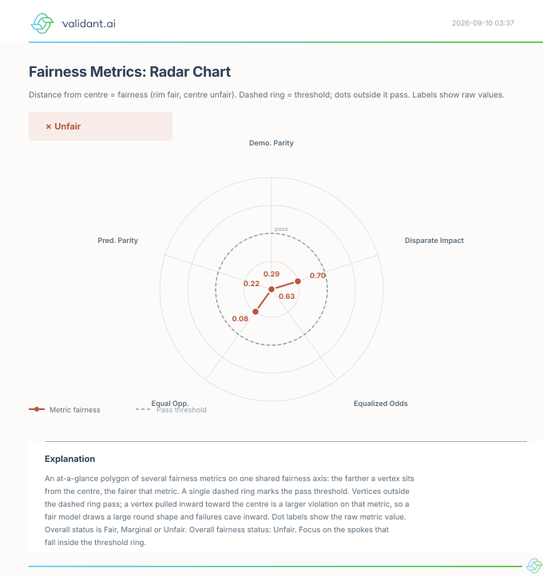
radar_chart_to_svg(report)
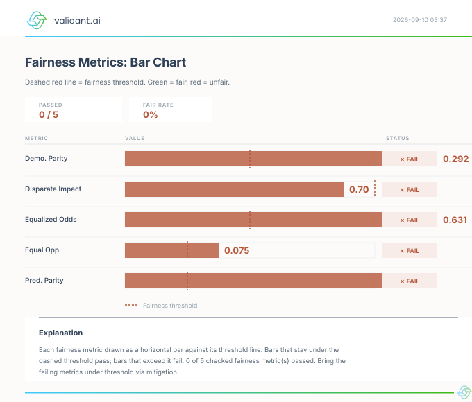
metrics_bar_chart_to_svg(report)
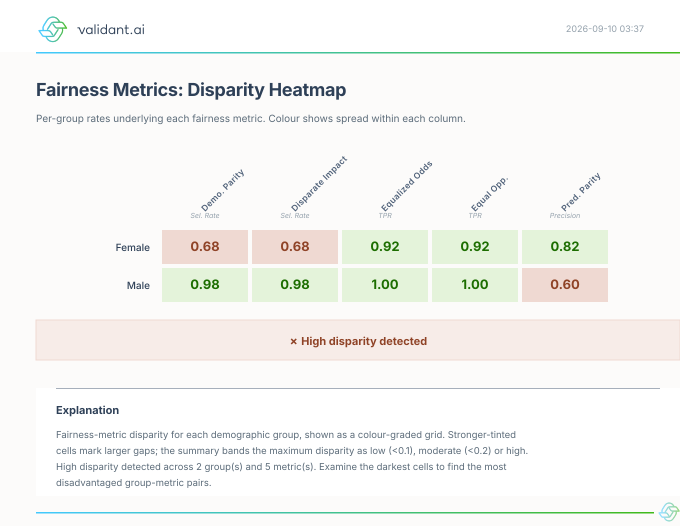
disparity_heatmap_to_svg(report)
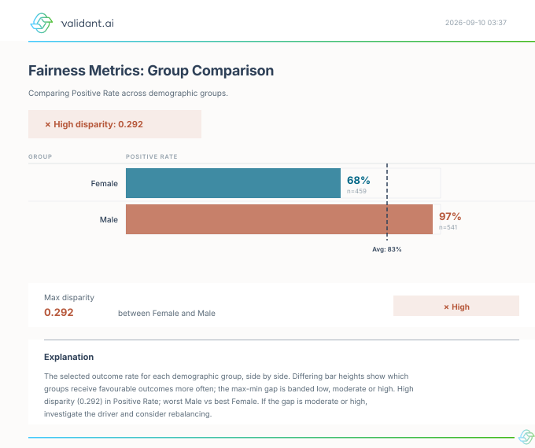
group_comparison_to_svg(report)
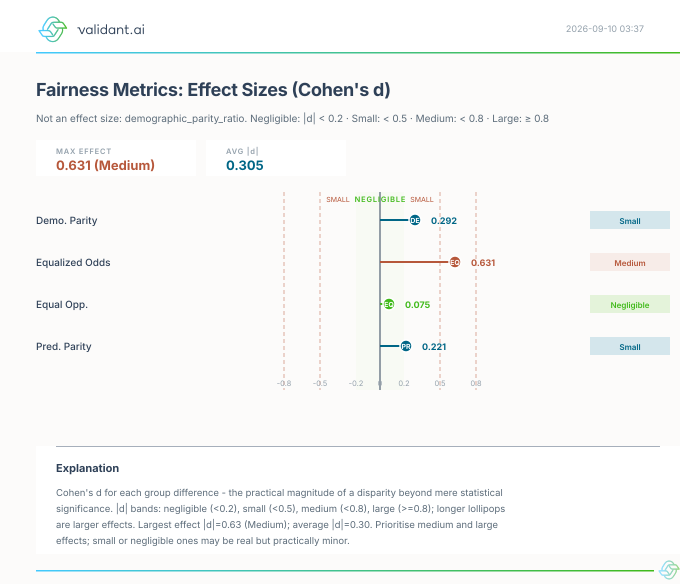
effect_sizes_to_svg(report)
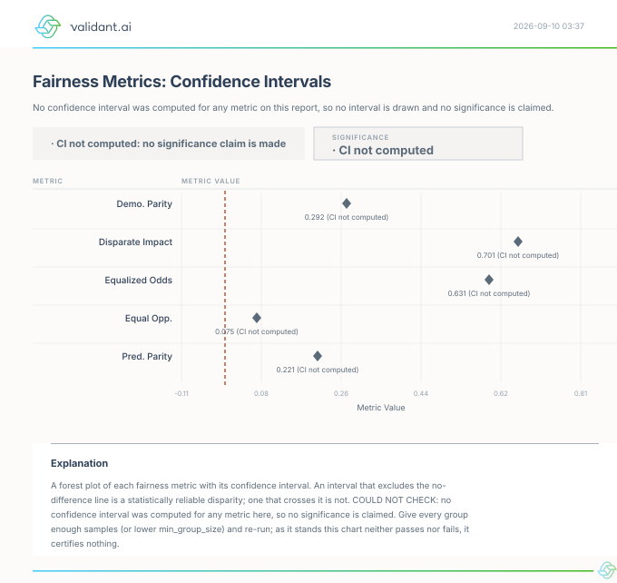
confidence_intervals_to_svg(report)
View all evaluation templates in the SVG Gallery →
from vfairness.rendering import radar_chart_to_svg, metrics_bar_chart_to_svg
report = analyzer.get_report()
svg = radar_chart_to_svg(report, save_path="radar.svg")
svg = metrics_bar_chart_to_svg(report, save_path="metrics.svg")
All *_to_svg() adapters across this page use the vfairness.rendering module — a
Jinja2-powered SVG template engine with custom filters (pct, f2,
risk_color, etc.). Use render_svg(template, data) for low-level access or
list_templates() to discover all available templates.
5. Operations & Monitoring
CI/CD integration, MLOps, and production monitoring for fairness validation in deployment pipelines.
from vfairness.operations import (
DataBiasValidator,
ModelFairnessGate,
FairnessTestSuite
)What's Included
MLOps
MLflow Integration
Log fairness metrics to an MLflow run.
from vfairness import FairnessAnalyzer, log_fairness_to_mlflow
import mlflow
analyzer = FairnessAnalyzer(y_true, y_pred, gender)
with mlflow.start_run():
# Train your model...
# Log fairness metrics
log_fairness_to_mlflow(
analyzer, # a FairnessAnalyzer or a report dict
prefix='fairness',
log_artifacts=True, # Save full report as JSON artifact
include_group_stats=True
)
# Logged metrics: fairness.demographic_parity_difference, etc.
# Logged params: fairness.min_group_size, fairness.task_type
# Logged artifacts: fairness_report.jsonFairnessAnalyzer instance, or a report dict from classification_fairness_report / regression_fairness_report.fairness.demographic_parity_difference).Dict[str, Any] — the metric names and values that were logged. <prefix>.fairness_score is present only when the run produced a score; on a not-assessable run it is absent and <prefix>.fairness_score_status reads 'not_assessable' instead of a fabricated number.
Create a callback function for use with training frameworks. The callback evaluates fairness metrics at each training epoch/step.
create_fairness_callback(
sensitive_attr_column: str,
metrics: Optional[List[str]] = None,
thresholds: Optional[Dict[str, float]] = None,
fail_on_violation: bool = False
) -> CallableNone.Callable — A callback function compatible with training loops. Accepts (y_true, y_pred, sensitive_attr) and returns a dict of metric values.
W&B Integration
Log fairness metrics alongside accuracy metrics in Weights & Biases for cross-version comparison and regression detection.
Log fairness metrics to a Weights & Biases run.
from vfairness import FairnessAnalyzer, log_fairness_to_wandb
import wandb
analyzer = FairnessAnalyzer(y_true, y_pred, gender)
with wandb.init(project='my-model'):
log_fairness_to_wandb(
analyzer,
prefix='fairness',
log_artifacts=True, # Save full report as W&B artifact
include_group_stats=True # Include per-group statistics
)FairnessAnalyzer instance or a report dict.Dict[str, Any] — Dictionary of the fairness metrics that were logged to W&B.
Auto-Log Decorator
Automatically log fairness metrics from any training function with zero code changes inside the function body.
Decorator that wraps a training function and automatically logs fairness metrics to the active experiment tracker (MLflow or W&B).
@auto_log_fairness(
backend: str = 'mlflow', # 'mlflow' or 'wandb'
*,
metrics: List[str] = None, # Names to log; None logs every metric produced
thresholds: Dict[str, float] = None, # RECORDED beside the metrics, never enforced
prefix: str = 'fairness' # Prefix for the logged names
)The decorated function may take any arguments it likes; the decorator never inspects them. What it does inspect is the RETURN value, and only two shapes are recognised: a 3-tuple (y_pred, y_true, sensitive_attr), or a dict carrying the keys y_pred, y_true and sensitive_attr. From one of those it builds a FairnessAnalyzer report and logs it to the active run.
Anything else is skipped, not computed. A bare prediction array, or a fitted model with a .predict() method, is not one of the two shapes: the decorator emits UserWarning: auto_log_fairness: function must return (y_pred, y_true, sensitive_attr) tuple or dict with those keys. Skipping fairness logging., returns your value untouched, and logs nothing at all. The run still opens and closes cleanly, so an empty metric list is the only sign anything was missed. A missing active run, or a tracker that is not installed, ends the same way: one warning, and nothing logged.
thresholds are recorded, not enforced. They are written as run parameters under <prefix>.threshold.<metric> with <prefix>.thresholds_enforced set to "false" beside them; nothing here compares a metric against them and no verdict is derived from them. Use assert_fairness for a gate that actually refuses.
from vfairness import auto_log_fairness
import mlflow
@auto_log_fairness(backend='mlflow', metrics=['demographic_parity_difference'])
def evaluate_model(X, y, sensitive):
from sklearn.linear_model import LogisticRegression
model = LogisticRegression().fit(X, y)
# Return the 3-tuple. `return model.predict(X)` alone warns and logs NOTHING.
return model.predict(X), y, sensitive
with mlflow.start_run():
y_pred, y_true, sensitive = evaluate_model(X_train, y_train, gender)
# logged to the active MLflow run:
# fairness.demographic_parity_difference = 0.0907
# fairness.fairness_score = 1.0Production Monitoring
vfairness_5_monitoring_demo.ipynb Real-time fairness tracking, drift detection & adaptive alertsOpen it to see this run end to end. Every notebook is executed on each build, so the code here matches the library you installed.
BiasMonitor
Continuous monitoring for fairness drift detection in production systems. BiasMonitor tracks fairness metrics over successive prediction batches and compares them against baseline values established during training or validation. When a metric deviates from its baseline beyond a configurable threshold, the monitor fires a severity-graded alert and optionally invokes a user-supplied callback (e.g. Slack, PagerDuty, email).
What Drift Is Monitored
BiasMonitor detects three categories of drift:
| Drift Type | What It Captures |
|---|---|
METRIC_DRIFT |
A tracked fairness metric (e.g. demographic parity difference) moves away from its baseline value beyond the configured drift_threshold. This is the primary detection mode. |
DISTRIBUTION_DRIFT |
The composition of protected groups in incoming batches shifts relative to earlier batches. Enabled via enable_distribution_monitoring. Useful for catching upstream data-pipeline changes that alter group proportions. |
PERFORMANCE_DRIFT |
Overall model performance degrades in a way that disproportionately affects certain groups. Enabled via enable_performance_monitoring. |
Tracked KPIs
By default the monitor computes two core fairness KPIs per batch. Additional metrics can be supplied through a custom compute_metrics_fn.
| Metric | Formula | Interpretation |
|---|---|---|
demographic_parity_difference |
P(ŷ=1 | G=0) − P(ŷ=1 | G=1) | Difference in positive prediction rates between two groups. Values near 0 indicate parity; large absolute values indicate disparity. |
equalized_odds_difference |
TPRG=0 − TPRG=1 | Difference in true positive rates between groups (computed only when ground-truth labels y_true are available). Measures whether the model is equally accurate for positive cases across groups. |
How Drift Detection Works
- Baseline establishment — At initialisation you provide
baseline_metrics, typically the metric values measured on the training or validation set. - Batch ingestion — Each call to
log_batch()computes the configured metrics for the incoming batch and appends the values to a rolling window of sizewindow_size. - Minimum-sample guard — Alerts are suppressed until the monitor has accumulated at least
min_samples_for_alertsamples (default 100), avoiding noisy signals on small early batches. - Absolute-deviation test — For each monitored metric the absolute difference
|current_value − baseline_value|is compared againstdrift_threshold. A drift is flagged when the deviation exceeds the threshold. - Severity grading — Alerts are assigned a severity level based on the magnitude of the deviation relative to the threshold:
INFO— deviation > 1× thresholdWARNING— deviation > 1.5× thresholdCRITICAL— deviation > 2× threshold
- Cooldown — Repeated alerts for the same metric are suppressed for
alert_cooldown_seconds(default 3600 s / 1 hour) to avoid alert fatigue. - Callback dispatch — If an
alert_callbackis registered, it is invoked with aDriftAlertobject containing the metric name, baseline, current value, drift magnitude, severity, and timestamp.
Constructor
BiasMonitor(
baseline_metrics: Dict[str, float] = None, # Baseline to compare against
drift_threshold: float = 0.05, # Threshold for drift detection
window_size: int = 10, # Batches for rolling statistics
alert_callback: Callable = None, # Function called when drift detected
config: MonitorConfig = None, # Full configuration object
compute_metrics_fn: Callable = None # Custom metric computation function
){"demographic_parity_difference": 0.05}). Each batch is compared against these values to detect drift.get_rolling_average(). Older batch values are evicted automatically.DriftAlert object. Use this to integrate with external alerting systems (Slack, PagerDuty, email, etc.).drift_threshold and window_size and exposes additional options such as min_samples_for_alert, alert_cooldown_seconds, and distribution/performance monitoring toggles.(y_true, y_pred, protected_attr) -> Dict[str, float]. Replaces the built-in metric computation, allowing you to monitor any fairness KPI your organization requires.Configuration Options (MonitorConfig)
| Parameter | Default | Description |
|---|---|---|
drift_threshold |
0.05 | Absolute deviation from baseline above which drift is flagged. Also determines severity tiers (1× = INFO, 1.5× = WARNING, 2× = CRITICAL). |
window_size |
10 | Number of recent batches retained in the rolling window for computing get_rolling_average(). |
min_samples_for_alert |
100 | Cumulative sample count that must be reached before any alerts fire. Prevents spurious early alerts on small batches. |
metrics_to_monitor |
["demographic_parity_difference"] | List of metric names to track. Must match the keys returned by the default or custom metric function. |
alert_cooldown_seconds |
3600 | Minimum seconds between repeated alerts for the same metric. Prevents alert fatigue during sustained drift. |
enable_distribution_monitoring |
True | Track the proportion of each protected group per batch. Captures upstream data-pipeline shifts that change group composition. |
enable_performance_monitoring |
True | Track group-level model performance degradation alongside fairness metrics. |
Example Usage
from vfairness.operations.cicd import BiasMonitor
# Define alert callback
def send_slack_alert(alert):
"""Send alert to Slack channel."""
slack_client.post_message(
channel='#ml-alerts',
text=f":warning: Fairness Drift Alert: {alert.message}"
)
# Create monitor with baseline from training
monitor = BiasMonitor(
baseline_metrics={
'demographic_parity_difference': 0.05,
'equalized_odds_difference': 0.08
},
drift_threshold=0.05,
alert_callback=send_slack_alert
)
# In production scoring pipeline
def score_batch(batch_data):
predictions = model.predict(batch_data)
# Log batch for monitoring
result = monitor.log_batch(
y_pred=predictions,
y_true=batch_data['actual'], # Optional if available
protected_attr=batch_data['gender'],
batch_id=f"batch_{datetime.now().isoformat()}"
)
if result.drift_detected:
# Handle drift (e.g., trigger retraining)
print(f"Drift detected! {len(result.alerts)} alerts triggered")
return predictions
# Check drift status
if monitor.drift_detected():
monitor.trigger_alert(custom_message="Manual drift check triggered")
# Get monitoring summary
summary = monitor.get_summary()
print(f"Total batches: {summary['batch_count']}")
print(f"Current metrics: {summary['current_metrics']}")
print(f"Rolling average: {summary['rolling_average']}")Prometheus Integration
# Export Prometheus metrics for monitoring dashboards
from flask import Flask, Response
app = Flask(__name__)
@app.route('/metrics')
def metrics():
prometheus_output = monitor.to_prometheus_metrics()
return Response(prometheus_output, mimetype='text/plain')
# Output format:
# fairness_demographic_parity_difference 0.0523
# fairness_drift_demographic_parity_difference 0
# fairness_monitor_batches_total 150
# fairness_monitor_samples_total 15000
# fairness_monitor_alerts_total 2DriftAlert
| Property | Type | Description |
|---|---|---|
alert_id |
str | Unique identifier for the alert |
severity |
AlertSeverity | INFO, WARNING, or CRITICAL |
drift_type |
DriftType | METRIC_DRIFT, DISTRIBUTION_DRIFT, PERFORMANCE_DRIFT |
metric_name |
str | Name of the affected metric |
baseline_value |
float | Expected baseline value |
current_value |
float | Current observed value |
drift_magnitude |
float | Magnitude of drift from baseline |
FairnessMonitor
Sliding-window real-time bias monitor. Ingests prediction batches as DataFrames, maintains a configurable rolling window, and recomputes fairness metrics on every call to update_and_check(). Designed for Tier 1 (micro-batch) and Tier 2 (near real-time) monitoring architectures. Protected-attribute columns are auto-detected via the group_ column prefix convention.
Fairness Monitoring in Production
Sliding-window monitoring, drift detection, alerting and temporal analysis for deployed models
Constructor
FairnessMonitor(
window_size: int = 1000,
alert_threshold: float = 0.8,
config: FairnessMonitorConfig = None,
custom_metrics: dict = None,
)window_size and alert_threshold.{"metric_name": fn(df) -> float}. Results are included in WindowMetrics.metrics.FairnessMonitorConfig
| Parameter | Type | Default | Description |
|---|---|---|---|
window_size | int | 1000 | Sliding window capacity in rows |
alert_threshold | float | 0.8 | Disparate impact alert threshold (EEOC 4/5 rule) |
min_samples | int | 50 | Minimum window rows before computing metrics |
prediction_col | str | "prediction" | Column name for binary predictions (0/1) |
label_col | str | "label" | Column name for ground-truth labels — required for equalized odds/opportunity |
metrics_to_track | list[str] | all four | Subset of ["disparate_impact", "demographic_parity", "equalized_odds", "equal_opportunity"] |
alert_cooldown_seconds | int | 3600 | Minimum seconds between repeated alerts for the same metric/group pair |
Methods
| Method | Returns | Description |
|---|---|---|
update_and_check(batch_df) |
WindowMetrics | Append batch_df to the sliding window, recompute all configured metrics, and return a snapshot with alert flags. Columns prefixed group_ are auto-detected as protected attributes. |
set_reference(df) |
None | Store a reference DataFrame. Enables per-attribute MMD distribution-shift scores in subsequent WindowMetrics.mmd_scores. |
compute_disparate_impact(df, group_col) |
float | min(group positive rate) / max(group positive rate). Values below 0.8 trigger an alert (EEOC 4/5 rule). |
compute_demographic_parity(df, group_col) |
float | Max absolute difference in positive prediction rates across all groups. |
compute_equalized_odds(df, group_col) |
float | Max difference in TPR and FPR across groups. Requires a label column. |
compute_equal_opportunity(df, group_col) |
float | Max difference in true positive rate (recall) across groups. Requires a label column. |
get_metric_history() |
pd.DataFrame | Tidy time series of all computed metrics — columns: timestamp, metric, value, alert. |
get_alert_summary() |
dict | Aggregated alert counts per metric/group pair across all batches. |
reset() |
None | Clear the sliding window, metric history, and batch counter. |
WindowMetrics (Return Type)
| Field | Type | Description |
|---|---|---|
batch_id | int | Auto-incrementing batch counter |
timestamp | datetime | Time the snapshot was computed |
sample_count | int | Rows currently in the sliding window |
metrics | dict[str, float] | Computed metric values, keyed "{metric}_{group_col}" |
alerts | dict[str, bool] | True = alert fired for this metric/group pair this batch |
group_rates | dict | Positive prediction rates per group per protected attribute |
mmd_scores | dict[str, float] | Distribution-shift score per protected attribute. Populated only when set_reference() has been called. |
any_alert | bool | Property — True if any metric triggered an alert in this batch |
Example Usage
from vfairness.operations.monitoring import FairnessMonitor, FairnessMonitorConfig
config = FairnessMonitorConfig(
window_size=500,
alert_threshold=0.8,
metrics_to_track=["disparate_impact", "demographic_parity",
"equalized_odds", "equal_opportunity"],
alert_cooldown_seconds=3600,
)
monitor = FairnessMonitor(config=config)
monitor.set_reference(baseline_df) # enables MMD distribution-shift scores
# Stream prediction batches — DataFrame must have group_* + prediction columns
for batch_df in prediction_stream:
snap = monitor.update_and_check(batch_df)
if snap.any_alert:
print(f"Alert on batch {snap.batch_id}: {snap.alerts}")
print(f"MMD scores: {snap.mmd_scores}")
# Full metric history for Tier 3 analysis or reporting
history = monitor.get_metric_history() # → pd.DataFrameTemporalFairnessAnalyzer
Time-series analysis of daily fairness metrics. Detects weekly cycles, computes OLS linear trends, and generates short-term forecasts — enabling proactive intervention before degradation becomes statistically significant at the batch level.
Constructor
TemporalFairnessAnalyzer(
lookback_days: int = 90, # Maximum days of history retained in memory
)Methods
| Method | Returns | Description |
|---|---|---|
update_daily_metrics(date, metrics) |
None | Append one day's metric snapshot. metrics: dict[str, float] — multiple keys per date are supported. |
detect_weekly_degradation(metric_name, threshold=0.05) |
tuple[bool, float] | Returns (degraded, worst_weekday_mean). degraded=True when any weekday mean falls more than threshold below the overall mean. |
detect_trend(metric_name) |
tuple[str, float] | OLS linear regression on retained daily values. Returns (direction, slope_per_day) — direction is "increasing", "decreasing", or "stable". |
detect_seasonal_pattern(metric_name, period=7) |
dict | Mean metric value per position within a repeating cycle of period days. |
forecast_metric(metric_name, days_ahead=7) |
list[tuple] | Extrapolate the OLS trend forward. Returns [(Timestamp, predicted_value), ...] for the next days_ahead days. |
get_metric_summary(metric_name) |
dict | Summary statistics for the named metric: mean, std, min, max, count, date range. |
to_dataframe() |
pd.DataFrame | Export the full history as a tidy DataFrame — columns: date, metric, value. |
Example Usage
import pandas as pd
from vfairness.operations.monitoring import TemporalFairnessAnalyzer
analyzer = TemporalFairnessAnalyzer(lookback_days=90)
# Feed daily aggregates (e.g. from FairnessMonitor.get_metric_history())
for date, metrics in daily_metric_stream:
analyzer.update_daily_metrics(date, metrics)
# Detect weekly cycle — e.g. payday effect in credit / hiring decisions
degraded, worst_day = analyzer.detect_weekly_degradation("demographic_parity")
if degraded:
print(f"Weekly degradation detected — worst weekday mean: {worst_day:.4f}")
# OLS linear trend
direction, slope = analyzer.detect_trend("demographic_parity")
print(f"Trend: {direction} at {slope:+.5f} / day")
# 7-day forecast
for ts, pred in analyzer.forecast_metric("demographic_parity", days_ahead=7):
print(f" {ts.date()} → {pred:.4f}")Drift Detection
BiasMonitor automatically detects when fairness metrics drift from their baseline values using an absolute-deviation rolling-window approach (see BiasMonitor → How Drift Detection Works for the full algorithm). The code snippet below shows how to inspect drift status programmatically after batches have been logged.
# Check drift status programmatically
if monitor.drift_detected():
status = monitor.get_drift_status()
for metric, is_drifted in status.items():
if is_drifted:
print(f"DRIFT: {metric}")
# Get current vs baseline comparison
summary = monitor.get_summary()
for metric in summary['current_metrics']:
current = summary['current_metrics'][metric]
baseline = summary['baseline_metrics'].get(metric)
if current and baseline:
drift = abs(current - baseline)
print(f"{metric}: current={current:.4f}, baseline={baseline:.4f}, drift={drift:.4f}")For multi-scale wavelet-based drift detection, online SPRT, and distribution-level shift measurement, see FairnessDriftDetector and Distribution Shift Score below. These Part 4 components add statistical rigour and temporal frequency decomposition as a complement to BiasMonitor's rolling-window approach.
Distribution Shift Score mmd_gaussian
Measures how different two population samples are by computing the Maximum Mean Discrepancy (MMD²) with a Gaussian (RBF) kernel. MMD is a non-parametric statistic that works without labels — making it ideal for detecting when the feature distribution of a demographic group has drifted between time periods, independently of model predictions.
A score near 0 indicates distributional similarity; larger values indicate divergence. Used internally by FairnessMonitor (via set_reference()) and as a standalone primitive for custom distribution-level comparisons.
Signature
mmd_gaussian(
x: np.ndarray, # Reference distribution samples (1-D)
y: np.ndarray, # Current distribution samples (1-D)
sigma: float = 1.0, # Gaussian kernel bandwidth (RBF scale)
) -> float # MMD² estimate — non-negative; 0 iff distributions are identicalx; sample sizes do not need to match.sigma.Example Usage
from vfairness.operations.monitoring import mmd_gaussian
import numpy as np
rng = np.random.default_rng(42)
reference = rng.normal(0.55, 0.1, 500) # approval rates, Phase 1 (fair)
current = rng.normal(0.30, 0.1, 500) # approval rates, Phase 2 (biased)
score = mmd_gaussian(reference, current, sigma=0.5)
print(f"Distribution shift score: {score:.4f}") # → 0.0540 (large — drift detected)
# Identical distributions → score near zero
same = mmd_gaussian(reference, rng.normal(0.55, 0.1, 500), sigma=0.5)
print(f"No shift: {same:.6f}") # → ~0.000002FairnessDriftDetector
Multi-scale statistical drift detector for fairness metric time series. Applies wavelet decomposition (Daubechies-4 by default, via pywt) to separate a time series into trend and frequency components, then runs Kolmogorov-Smirnov two-sample tests on each component independently. Also supports SPRT for online, sample-efficient detection and MMD for distribution-level comparison against a stored baseline.
Bias does not always emerge as a sudden shock. A job-recommendation platform may show fair daily metrics while a multi-scale analysis reveals a slow quarterly drift that systematically disadvantages women for senior roles — invisible in daily or weekly reports. Wavelet decomposition separates sudden shocks (high-frequency detail bands) from slow insidious drift (low-frequency approximation band), making both detectable simultaneously.
Constructor
FairnessDriftDetector(
window_sizes: Optional[List[int]] = None,
wavelet: str = "db4",
significance_level: float = 0.05,
min_drift_score: float = 0.3,
compute_mmd: bool = True,
)detect_drift_multiscale() always splits the series 50/50 regardless of this value."db4" (Daubechies-4) offers a good balance of smoothness and compact support for typical fairness metric time series. Falls back to single-scale analysis on the full signal when pywt is not installed.p_value < significance_level and the drift score also exceeds min_drift_score.ks_statistic × (1 − p_value) — required to declare drift. Guards against statistically significant but practically negligible shifts in large samples.False when no baseline is available or to reduce computation cost.Methods
| Method | Returns | Description |
|---|---|---|
set_baseline(series) |
None | Store a reference pd.Series for MMD comparison in subsequent check_drift() calls. |
check_drift(current_series, metric) |
MultiscaleDriftResult | Compare current_series against the stored baseline across all temporal scales. Appends result to history. |
detect_drift_multiscale(time_series, metric) |
MultiscaleDriftResult | Wavelet decomposition + per-scale KS tests using a midpoint split of the series. No baseline required. |
decompose_temporal_patterns(time_series, wavelet) |
dict[str, np.ndarray] | Returns "approximation" (long-term trend) and "detail_N" bands (high to low frequency). Falls back to "full_signal" if pywt is unavailable. |
run_sprt(stream, null_value, alt_value, alpha=0.05, beta=0.1) |
tuple[str, int, float] | Sequential Probability Ratio Test. Returns (decision, stopping_n, log_lambda) — decision is "drift", "stable", or "continue". |
get_history_df() |
pd.DataFrame | Export all past MultiscaleDriftResult objects as a flat DataFrame for longitudinal analysis. |
MultiscaleDriftResult Fields
| Field | Type | Description |
|---|---|---|
drift_detected | bool | True if drift is declared at any temporal scale |
overall_drift_score | float | Maximum KS×(1−p) across all scales — ranges [0, 1]; higher = more confident drift |
mmd_score | float | None | MMD² between baseline and current series. Populated when set_baseline() has been called. |
scales | dict[str, DriftResult] | Per-scale KS results with ks_statistic, p_value, drift_score, mean_shift |
worst_scale | DriftResult | Scale with the highest drift score — use for root-cause diagnosis ("approximation" = long-term trend drift; "detail_1" = sudden short-term shock) |
decomposition_available | bool | True if pywt was used for multi-scale wavelet decomposition |
Example Usage
import pandas as pd
from vfairness.operations.monitoring import FairnessDriftDetector
detector = FairnessDriftDetector(significance_level=0.05, min_drift_score=0.25)
# Optional: store a known-good baseline for MMD comparison
detector.set_baseline(historical_series) # pd.Series with DatetimeIndex
# Check current window for multi-scale drift
result = detector.check_drift(current_series, metric="demographic_parity")
print(f"Drift detected : {result.drift_detected}")
print(f"Overall score : {result.overall_drift_score:.4f}")
print(f"MMD score : {result.mmd_score:.4f}")
# Per-scale breakdown — identifies whether drift is sudden or slow
for scale, dr in result.scales.items():
print(f" {scale:20s} KS={dr.ks_statistic:.3f} p={dr.p_value:.4f} "
f"drift={'YES' if dr.drift_detected else 'no'}")
# Online SPRT — reaches a decision as soon as evidence is sufficient
decision, n, log_lam = detector.run_sprt(
list(current_series.values),
null_value=0.10, # expected (stable) demographic parity
alternative_value=0.18, # drifted value hypothesis
alpha=0.05, # false-positive rate bound
beta=0.10, # false-negative rate bound
)
print(f"SPRT: '{decision}' reached after {n} observations")Alerting
Configure alert callbacks to notify teams when fairness drift is detected.
Alert Severity Levels
| Severity | Condition | Recommended Action |
|---|---|---|
INFO |
Drift > threshold | Log for review |
WARNING |
Drift > 1.5x threshold | Investigate soon |
CRITICAL |
Drift > 2x threshold | Immediate action required |
Integration Examples
# Slack integration
def slack_alert(alert):
emoji = {"info": ":information_source:", "warning": ":warning:", "critical": ":rotating_light:"}
slack.post_message(
channel='#ml-fairness-alerts',
text=f"{emoji[alert.severity.value]} *Fairness Alert*\n{alert.message}"
)
# PagerDuty integration
def pagerduty_alert(alert):
if alert.severity.value == 'critical':
pagerduty.create_incident(
title=f"Critical Fairness Drift: {alert.metric_name}",
body=alert.message,
severity='high'
)
# Email integration
def email_alert(alert):
send_email(
to='ml-team@company.com',
subject=f"[{alert.severity.value.upper()}] Fairness Drift Alert",
body=alert.to_dict()
)
# Use multiple callbacks
monitor = BiasMonitor(
baseline_metrics=baseline,
alert_callback=lambda a: (slack_alert(a), pagerduty_alert(a))
)For self-adjusting thresholds that learn from operator feedback and multi-factor alert scoring with automatic channel routing, see AdaptiveThresholdManager and FairnessAlertPrioritizer below.
AdaptiveThresholdManager
Self-adjusting alert thresholds that learn from operator feedback. Each threshold is keyed by a "{metric}_{group}" string. When engineers mark an alert as a false positive, the threshold is raised slightly (reducing sensitivity). When alerts are consistently valid, the threshold falls (increasing sensitivity). This feedback loop eliminates alert fatigue while preserving detection speed for real bias events.
Constructor
AdaptiveThresholdManager(
initial_threshold: float = 0.7,
learning_rate: float = 0.01,
min_threshold: float = 0.1,
max_threshold: float = 0.95,
history_window: int = 50,
false_positive_upper: float = 0.30,
false_positive_lower: float = 0.05,
)update_from_feedback() call. Threshold rises by learning_rate on a false positive; falls on a valid alert.false_positive_upper, the threshold rises. If below false_positive_lower, it falls. No adjustment is made within the band.Methods
| Method | Returns | Description |
|---|---|---|
get_threshold(key) |
float | Return the current threshold for a metric/group key. Initializes to initial_threshold on first access. |
is_alert_warranted(key, drift_score) |
bool | Returns True if drift_score >= get_threshold(key). Use as a gate before creating an AlertPayload. |
update_from_feedback(key, alert_was_valid) |
float | Record operator feedback and adjust the threshold. False raises it; True lowers it. Returns the updated value. |
get_feedback_stats(key) |
dict | Returns {current_threshold, total_alerts, false_positives, false_positive_rate}. |
get_all_thresholds() |
dict[str, float] | Return all currently managed thresholds as a flat dictionary. |
reset(key=None) |
None | Reset a single key to initial_threshold and clear its feedback history. key=None resets all. |
Example Usage
mgr = AdaptiveThresholdManager(initial_threshold=0.7, learning_rate=0.01)
KEY = "demographic_parity_gender"
# Gate the alert creation pipeline
if mgr.is_alert_warranted(KEY, drift_score=0.72):
print("Alert warranted — forwarding to FairnessAlertPrioritizer")
# Operator marks the alert a false positive → threshold rises
new_t = mgr.update_from_feedback(KEY, alert_was_valid=False)
print(f"Threshold raised to: {new_t:.4f}") # → 0.7070
# Operator confirms the next alert was real → threshold falls
mgr.update_from_feedback(KEY, alert_was_valid=True)
stats = mgr.get_feedback_stats(KEY)
print(f"FP rate: {stats['false_positive_rate']:.0%}, threshold: {stats['current_threshold']:.4f}")FairnessAlertPrioritizer
Multi-factor alert scoring, severity classification, and notification routing. Translates a raw drift-event dictionary into a weighted priority score, assigns a severity band (CRITICAL / HIGH / LOW), dispatches to the appropriate channel, and produces a structured AlertPayload for audit logging.
Constructor
FairnessAlertPrioritizer(
severity_weights: Optional[Dict[str, float]] = None, # Override default scoring-factor weights
critical_score: float = 8.0, # Score above which severity is CRITICAL
high_score: float = 5.0, # Score above which severity is HIGH
routing_map: Optional[Dict[str, Dict[str, str]]] = None, # Override default channel routing
log_alerts: bool = True # Append every alert to the internal audit log
)regulatory_risk, historical_discrimination, drift_velocity, population_impact. If omitted, default weights shown in the table below are used.CRITICAL / HIGH / LOW. If omitted, the default routing shown in the table below is used.get_alert_log().Scoring Factors and Default Weights
| Factor | Default Weight | Input Range | Description |
|---|---|---|---|
regulatory_risk | ×3.5 | [0, 1] | Protected-attribute status in the applicable jurisdiction |
historical_discrimination | ×3.0 | [0, 1] | Documented prior discrimination patterns for this group |
drift_velocity | ×2.5 | [0, 1] | Rate of change — 1.0 = sudden shock, 0.1 = slow drift |
population_impact | ×2.0 | [0, 1] | Fraction of total users affected by the drift event |
Score = Σ(factor × weight). An additional +0.5 boost is applied for intersectional events affecting multiple protected attributes simultaneously.
Severity Bands and Default Routing
| Score | Severity | Default Channel | Required Action |
|---|---|---|---|
| > 8.0 | CRITICAL | PagerDuty @on-call-ml-eng | Immediate human review — consider model suspension |
| > 5.0 | HIGH | Slack #fairness-alerts | Investigate within the business day |
| ≤ 5.0 | LOW | Jira FAIR project | Track in fairness backlog |
The band cutoffs and routing above are the defaults; override them with critical_score, high_score, and routing_map in the constructor.
Methods
| Method | Returns | Description |
|---|---|---|
calculate_priority(drift_event) |
tuple[float, str] | Compute the weighted priority score and assign severity band. Returns (score, severity). |
route_alert(severity) |
dict | Return routing instructions: {channel, team, priority}. |
create_alert(drift_event) |
AlertPayload | Score, route, and package the event into a structured AlertPayload appended to the internal audit log. |
build_drift_event(...) |
dict | Static helper — constructs a standardised drift-event dict. Args: metric_name, affected_groups, drift_score, mean_shift, regulatory_risk, population_impact, drift_velocity, historical_discrimination, intersectional. |
get_alert_summary() |
dict | Returns {total_alerts, by_severity, acknowledged, unacknowledged}. |
get_alert_log(severity=None, acknowledged=None) |
list[AlertPayload] | Filter the internal log by optional severity and/or acknowledgement status. |
AlertPayload Fields
| Field | Type | Description |
|---|---|---|
alert_id | str | UUID for audit tracing |
timestamp | datetime | Alert creation time |
severity | str | CRITICAL / HIGH / LOW |
priority_score | float | Raw weighted priority score |
metric_name | str | Affected fairness metric name |
affected_groups | list[str] | Demographic groups involved |
drift_score | float | Drift magnitude from FairnessDriftDetector |
routing | dict | Channel and team routing instructions |
acknowledged | bool | Whether an engineer has reviewed and resolved the alert |
Example Usage
from vfairness.operations.monitoring import FairnessAlertPrioritizer
prioritizer = FairnessAlertPrioritizer()
# Build a standardised drift event from detector output
event = FairnessAlertPrioritizer.build_drift_event(
metric_name="equalized_odds",
affected_groups=["Black", "Female"],
drift_score=0.82,
mean_shift=0.07,
regulatory_risk=1.0,
population_impact=0.8,
drift_velocity=0.9,
historical_discrimination=1.0,
intersectional=True, # +0.5 boost for multi-attribute event
)
# Score, classify, and route
score, severity = prioritizer.calculate_priority(event)
routing = prioritizer.route_alert(severity)
print(f"Score={score:.2f} → {severity} → {routing['channel']}")
# Score=9.17 → CRITICAL → pagerduty
# Create full AlertPayload with audit trail
alert = prioritizer.create_alert(event)
print(alert.message)
# Operator acknowledges after investigation
alert.acknowledge(resolution="Model retrain scheduled — bias source identified")
# Summary view
print(prioritizer.get_alert_summary())
# {'total_alerts': 1, 'by_severity': {'CRITICAL': 1}, 'acknowledged': 1, 'unacknowledged': 0}Monitoring Visualization
SVG Templates vfairness.rendering
Four lightweight SVG templates for visualizing monitoring, drift detection, and temporal analysis results — ideal for automated reports, CI/CD artifacts, and dashboards.
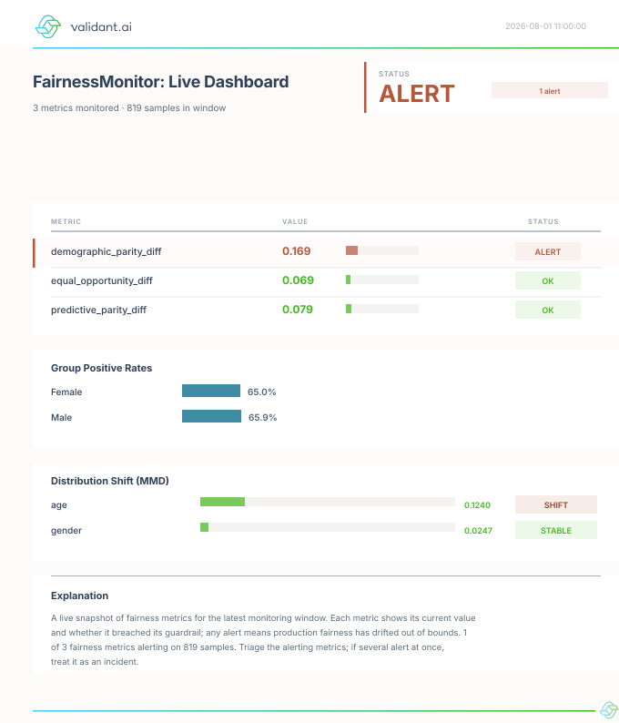
monitoring_dashboard_to_svg(wm)
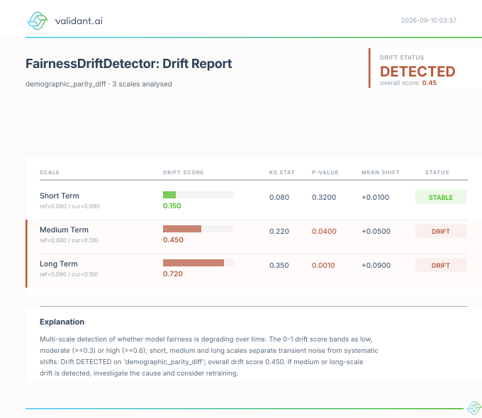
drift_report_to_svg(result)
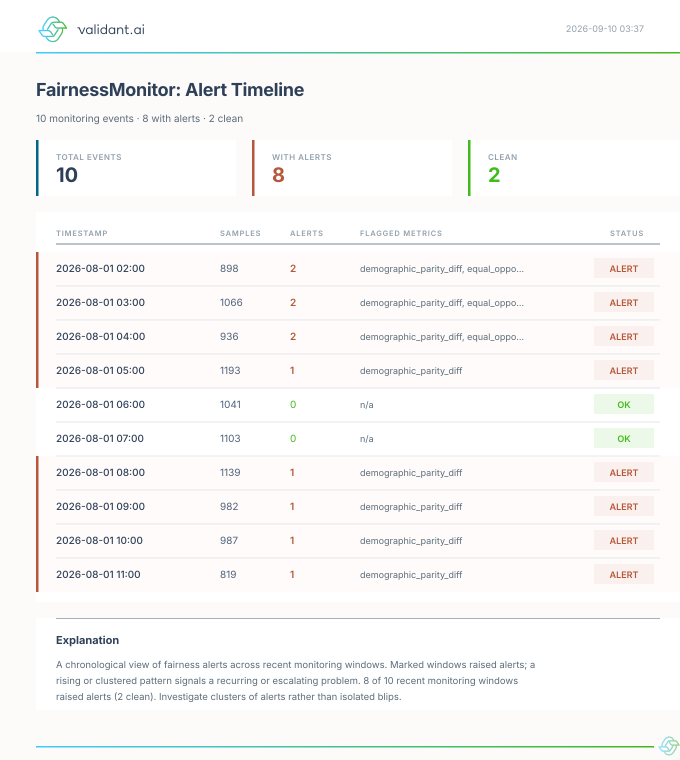
alert_timeline_to_svg(history)
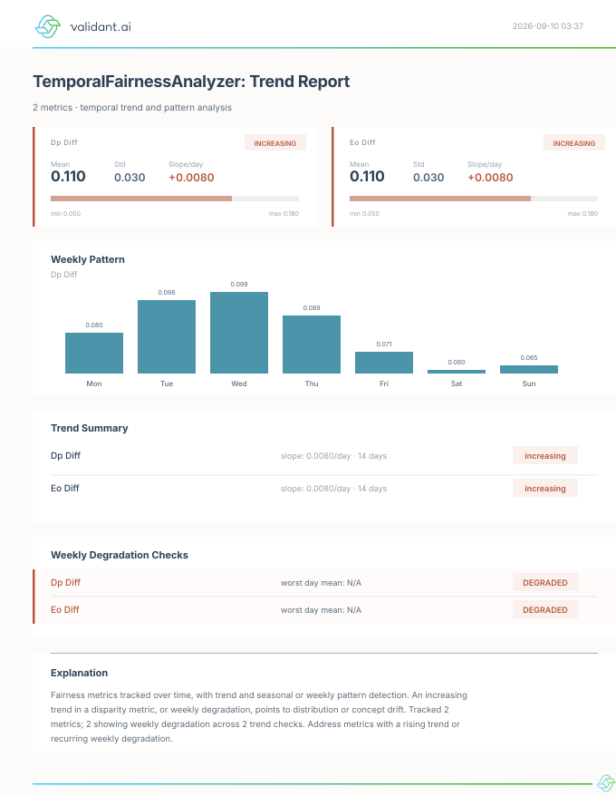
temporal_analysis_to_svg(analyzer)
View all monitoring templates in the SVG Gallery →
| Function | Input | Description |
|---|---|---|
monitoring_dashboard_to_svg(wm) |
WindowMetrics |
Live fairness dashboard with metric values, alert badges, group positive rates, and MMD distribution shift scores |
drift_report_to_svg(result) |
MultiscaleDriftResult |
Multi-scale drift analysis with KS statistics, p-values, mean shifts, and per-scale detection status |
alert_timeline_to_svg(history) |
list[WindowMetrics] |
Chronological timeline of monitoring events showing alert history and flagged metrics |
temporal_analysis_to_svg(analyzer) |
TemporalFairnessAnalyzer |
Trend report with metric summaries, weekly patterns, slope detection, and degradation checks |
Usage
from vfairness.rendering import (
monitoring_dashboard_to_svg,
drift_report_to_svg,
alert_timeline_to_svg,
temporal_analysis_to_svg,
)
# 1. Live monitoring snapshot
window = monitor.update_and_check(new_batch, labels, sensitive)
svg = monitoring_dashboard_to_svg(window, save_path="dashboard.svg")
# 2. Drift detection report
drift_result = detector.check_drift(reference_data, current_data, metric="demographic_parity")
svg = drift_report_to_svg(drift_result, save_path="drift.svg")
# 3. Alert timeline from monitor history
svg = alert_timeline_to_svg(monitor.history, save_path="timeline.svg")
# 4. Temporal analysis
svg = temporal_analysis_to_svg(
temporal_analyzer,
metric_names=["demographic_parity", "equalized_odds"],
save_path="temporal.svg",
)All monitoring SVG templates use the same design tokens as the rest of the library: clean white backgrounds, card-based layout with subtle borders, and semantic colors (emerald for OK, red for alerts, amber for warnings). No external dependencies required beyond Jinja2.
Experimentation SVG Templates
Three SVG templates for visualizing A/B test results, deployment recommendations, and statistical power analysis across demographic intersections.
experiment_results_to_svg(data)
experiment_recommendation_to_svg(data)
power_analysis_to_svg(data)
| Function | Input | Description |
|---|---|---|
experiment_results_to_svg(data) |
dict |
A/B test results dashboard with overall effect, per-intersection forest plot, and heterogeneity test |
experiment_recommendation_to_svg(data) |
dict |
Deployment recommendation with confidence gauge, reasoning, trade-offs, and caveats |
power_analysis_to_svg(data) |
dict |
Per-intersection power analysis with bar chart, 80% threshold line, and MDE summary |
Usage
from vfairness.rendering import (
experiment_results_to_svg,
experiment_recommendation_to_svg,
power_analysis_to_svg,
)
# 1. A/B test results
svg = experiment_results_to_svg(result_data, save_path="results.svg")
# 2. Deployment recommendation
svg = experiment_recommendation_to_svg(rec_data, save_path="recommendation.svg")
# 3. Power analysis
svg = power_analysis_to_svg(power_data, save_path="power.svg")6. Reporting & Dashboards
Overview vfairness.operations.reporting
The reporting module transforms raw metrics into actionable intelligence for executives, engineers, and auditors through four integrated components.
Jupyter notebook, Demo Notebook:vfairness_6_reporting_demo.ipynb Automated multi-tier reports, dashboards & NLG narrativesOpen it to see this run end to end. Every notebook is executed on each build, so the code here matches the library you installed.
from vfairness.operations.reporting import (
MetricsStore, FairnessDashboard, ReportGenerator, InteractiveDashboard
)MetricsStore
Unified data layer that ingests metrics from monitors, experiments, and manual entries. Supports privacy-preserving queries and health score computation.
MetricsStoreConfig
| Parameter | Type | Default | Description |
|---|---|---|---|
k_anonymity_threshold | int | 10 | Groups smaller than this are suppressed (values replaced with NaN) |
noisy_threshold | int | 50 | Groups between k and this value receive Laplace noise (ε-DP) |
dp_epsilon | float | 1.0 | Privacy budget for Laplace mechanism. Smaller ε = more noise = stronger privacy |
max_history_days | int | 365 | Records older than this are pruned on prune() |
enable_privacy | bool | True | Master switch. When False, all queries return exact values regardless of group size |
Three-Tier Privacy Scheme
Privacy is applied automatically by get_metrics() based on each record's group_size:
| Group Size | Protection | Mechanism |
|---|---|---|
| < k (default 10) | Suppressed | Value → NaN, privacy_level="suppressed". Follows k-anonymity (Sweeney 2002). |
| k – 50 | Noisy | Value += Laplace(0, 1/ε), privacy_level="noisy". Follows ε-DP (Dwork et al. 2006). |
| > 50 | Exact | No modification, privacy_level="exact". |
Methods
| Method | Description |
|---|---|
ingest_from_monitor(monitor) | Bulk-ingest all history from a FairnessMonitor |
ingest_from_analyzer(analyzer) | Bulk-ingest daily data from a TemporalFairnessAnalyzer |
ingest_drift_result(result) | Ingest a MultiscaleDriftResult from FairnessDriftDetector |
ingest_alert(alert) | Ingest an AlertPayload from FairnessAlertPrioritizer |
get_metrics(*, start_time, end_time, metrics, groups, sources, apply_privacy=True) | Privacy-preserving query returning a tidy DataFrame with privacy_level column |
compute_health_score(time_window=7d) | Returns HealthScore (0–100) with status, trend, and component breakdown |
get_alerts(*, start_time, end_time, severity) | Query alert records with optional filters |
get_drift_history(*, start_time, end_time) | Drift detection results as DataFrame |
from vfairness.operations.reporting import MetricsStore, MetricsStoreConfig
# Configure privacy thresholds
store = MetricsStore(config=MetricsStoreConfig(
k_anonymity_threshold=10, # suppress groups < 10
noisy_threshold=50, # add Laplace noise for groups 10-50
dp_epsilon=1.0, # privacy budget
enable_privacy=True, # master switch (True by default)
))
store.ingest_from_monitor(monitor)
# Query with privacy applied (default)
df = store.get_metrics(metrics=["demographic_parity"])
print(df["privacy_level"].value_counts())
# exact 84
# noisy 12
# suppressed 4
# Bypass privacy for internal debugging only
df_exact = store.get_metrics(apply_privacy=False)
# Health score
health = store.compute_health_score()
print(f"Health: {health.score:.0f}/100 ({health.status})")FairnessDashboard
Plotly-based progressive-disclosure dashboard with configurable time windows and multiple audience views.
| Method | Description |
|---|---|
create_executive_view() | High-level summary with health scores and trend arrows |
create_engineer_view() | Detailed metric breakdowns with drill-down charts |
create_auditor_view() | Full audit trail with compliance evidence |
from vfairness.operations.reporting import FairnessDashboard, DashboardConfig, TimeWindow
dashboard = FairnessDashboard(store, config=DashboardConfig(
default_time_window=TimeWindow.LAST_30_DAYS,
))
fig = dashboard.create_executive_view()
fig.write_html("executive_dashboard.html")ReportGenerator
Automated multi-format, multi-tier report generation with natural language summaries.
| Parameter | Type | Description |
|---|---|---|
tier | ReportTier | EXECUTIVE, OPERATIONAL, or TECHNICAL |
format | OutputFormat | HTML, PDF, or JSON |
from vfairness.operations.reporting import ReportGenerator, ReportConfig, ReportTier, OutputFormat
gen = ReportGenerator(store, dashboard)
# Executive HTML report
report = gen.generate_executive_report()
report.save("executive_report.html")
# Custom configuration
config = ReportConfig(default_tier=ReportTier.TECHNICAL, default_format=OutputFormat.JSON)
audit_report = gen.generate(config)
audit_report.save("audit_trail.json")InteractiveDashboard
Full Dash application or standalone HTML with what-if analysis and threshold simulation.
from vfairness.operations.reporting import InteractiveDashboard, simulate_threshold_change
# Standalone HTML (no Dash server needed)
idash = InteractiveDashboard(store)
idash.save_html("interactive_dashboard.html")
# What-if analysis: simulate changing a threshold
result = simulate_threshold_change(store, metric_name="demographic_parity", new_threshold=0.05)
# Three states. The counts are None when nothing in the window carries a
# threshold comparison to simulate against, and when the metric's
# better-direction is unknown (the projection would have to guess whether it
# alerts above or below). Check before formatting.
if result["projected_alerts"] is None:
print(f"Could not simulate: {result['not_simulated_reason']}")
else:
print(f"Groups impacted: {result['groups_impacted']}")
print(f"Alerts {result['current_alerts']} -> {result['projected_alerts']}")Compliance vfairness.operations.reporting.compliance
Regulatory compliance document generators for the Fairness Navigator wizard. These functions consume outputs from upstream modules (bias detection, metric computation, SHAP explanation, interventions) and produce structured data for EU AI Act Annex IV, GDPR Art. 35 DPIA, ECOA Reg B adverse action, ISO 42001 evidence mapping, and model card generation.
These are pure formatting functions, not analytical ones. They reorganise results that already exist from BiasDetector, FairnessAnalyzer, and intervention modules into regulatory-compliant document structures. All return plain Python dicts, lists, or Markdown strings -- styling is handled downstream by the React frontend or ReportGenerator.
from vfairness.operations.reporting.compliance import (
generate_risk_register_from_audit,
generate_dpia_sections,
compute_adverse_action_reasons,
compute_signed_test_log,
generate_annex_iv_data,
generate_model_card,
generate_iso42001_evidence_map,
)generate_risk_register_from_audit()
Cross-references bias detection findings with metric failures to produce an EU AI Act Art. 9 risk register. Each entry is scored by likelihood (from bias confidence) and severity (from metric failure magnitude).
| Parameter | Type | Description |
|---|---|---|
bias_results | dict | Output from bias detection. Keys: findings (list of dicts with id, category, description, confidence, affected_groups) |
metric_results | dict | Output from metric computation. Keys: metrics (list of dicts with name, value, threshold, passed, severity) |
domain | str | Application domain (e.g. "credit", "hiring", "healthcare") |
Returns list[dict] -- Risk register entries with: risk_id, description, category, likelihood (1-5), severity (1-5), risk_score (L×S), treatment, status, residual_risk, art9_reference, related_bias_ids, related_metric_names.
risks = generate_risk_register_from_audit(
bias_results={"findings": [{"id": "B-001", "category": "proxy", "description": "Zip code proxies for race", "confidence": 0.92}]},
metric_results={"metrics": [{"name": "demographic_parity_difference", "value": 0.18, "threshold": 0.1, "passed": False}]},
domain="credit",
)
# [{"risk_id": "RISK-001", "risk_score": 20, "category": "Feature selection -- proxy discrimination", ...}]generate_dpia_sections()
Generates the five mandatory sections of a GDPR Art. 35(7) Data Protection Impact Assessment. Sections that can be fully auto-generated are marked status='auto'; those needing manual DPO review are status='partial'.
| Parameter | Type | Description |
|---|---|---|
system_profile | dict | System metadata: name, purpose, description, domain, data_subjects, legal_basis |
data_ref | dict | Data reference: dataset_name, n_records, features, protected_attributes, retention_period |
risk_register | list | Output from generate_risk_register_from_audit() |
metric_results | dict | Output from metric computation module |
Returns dict -- Keys: dpia_id, generated_at, system_name, sections (5 sections: Systematic Description, Necessity & Proportionality, Risk Assessment, Mitigation Measures, Monitoring & Review).
compute_adverse_action_reasons()
Computes ECOA Regulation B adverse action reason codes. Limited to the top 4 reasons. Features identified as proxies for protected attributes are automatically excluded and replaced by the next-most-influential non-proxy feature.
| Parameter | Type | Description |
|---|---|---|
shap_values | dict | Feature name → SHAP contribution score (negative = pushed toward denial) |
feature_names | list | Ordered list of all feature names in the model |
proxy_features | list | Feature names identified as proxies for protected attributes |
reason_code_mapping | dict | Optional. Custom mapping of feature names to (code, description) tuples |
Returns list[dict] -- Up to 4 entries with: code, feature, description, contribution, is_primary.
compute_signed_test_log()
Creates an Annex IV Section 6 tamper-evident test log. Includes a SHA-256 content hash covering test results, data hash, and library version for reproducibility.
| Parameter | Type | Description |
|---|---|---|
test_results | dict | Metric test results: metrics (list), overall_pass (bool), timestamp (str, optional) |
data_hash | str | SHA-256 hash of the evaluation dataset |
lib_version | str | vfairness library version used |
intervention_history | list | Optional. Intervention records applied before testing |
Returns dict -- Signed test log with: test_timestamp, data_hash, library_version, test_results_summary, intervention_history, metrics_snapshot, content_hash.
generate_annex_iv_data()
Aggregates all wizard data into the EU AI Act Annex IV 9-section structure. Each section reports auto-populated vs. manual fields with a coverage percentage.
| Parameter | Type | Description |
|---|---|---|
system_profile | dict | System metadata (name, purpose, domain, version, etc.) |
metric_results | dict | Output from metric computation module |
risk_register | list | Output from generate_risk_register_from_audit() |
monitoring_config | dict | Optional. Monitoring pipeline configuration |
intervention_results | dict | Optional. Results of fairness interventions |
Returns dict -- Keys: annex_iv_id, generated_at, system_name, overall_coverage (float), sections (list of 9 section dicts each with number, title, article_ref, content, auto_fields, manual_fields, coverage_percent).
| Section | Title | Article |
|---|---|---|
| 1 | General Description | Art. 11 |
| 2 | Detailed Description of Elements and Process | Art. 11 |
| 3 | Monitoring, Functioning, and Control | Art. 12-14 |
| 4 | Risk Management System | Art. 9 |
| 5 | Data and Data Governance | Art. 10 |
| 6 | Testing and Validation | Art. 15 |
| 7 | Accuracy and Robustness | Art. 15 |
| 8 | Transparency and User Information | Art. 13 |
| 9 | Fundamental Rights Impact Assessment | Art. 29a |
generate_model_card()
Generates a fairness-enhanced model card in Markdown, following Mitchell et al. (2019) extended with fairness-specific sections (Fairness Considerations, Intervention History, Ethical Considerations).
| Parameter | Type | Description |
|---|---|---|
system_profile | dict | System metadata (name, purpose, domain, version, architecture, limitations, protected_attributes) |
metric_results | dict | Output from metric computation module |
interventions | list | Optional. List of intervention dicts with method, description, pre_metric, post_metric |
Returns str -- Markdown-formatted model card.
card = generate_model_card(
system_profile={"name": "Credit Scoring v2", "domain": "credit", "purpose": "Loan approval",
"protected_attributes": ["gender", "ethnicity"]},
metric_results={"metrics": [{"name": "demographic_parity_difference", "value": 0.04, "passed": True}]},
interventions=[{"method": "threshold_optimization", "description": "Group-specific thresholds",
"pre_metric": 0.15, "post_metric": 0.04}],
)
print(card)
# # Model Card: Credit Scoring v2
# ## Model Details
# ...generate_iso42001_evidence_map()
Maps wizard outputs to 15 ISO/IEC 42001:2023 Annex A controls across four categories (AI Management System, Risk Management, Data Management, Monitoring). Classifies each control as covered, partial, or gap.
| Parameter | Type | Description |
|---|---|---|
wizard_data | dict | Aggregated wizard output. Expected top-level keys (all optional): system_profile, bias_results, metric_results, risk_register, monitoring_config, intervention_results, dpia, annex_iv, model_card |
Returns dict -- Keys: map_id, generated_at, standard, total_controls, covered, partial, gaps, coverage_percent, controls (list of control dicts with control_id, name, category, status, evidence_source, description).
evidence = generate_iso42001_evidence_map(wizard_data={
"system_profile": {"name": "Credit Model", "domain": "credit"},
"bias_results": {"findings": [...]},
"metric_results": {"metrics": [...]},
"risk_register": [...],
"monitoring_config": {"drift_threshold": 0.05},
})
print(f"Coverage: {evidence['coverage_percent']:.0f}% ({evidence['covered']}/{evidence['total_controls']} controls)")
# Coverage: 80% (12/15 controls)7. Experimentation & A/B Testing
Overview vfairness.operations.experimentation
Fairness-aware experimentation framework for evaluating interventions through controlled A/B tests with intersectional analysis, sequential testing, and multi-objective optimization.
Jupyter notebook, Demo Notebook:vfairness_7_experimentation_demo.ipynb A/B testing for fairness with power analysis & causal decompositionOpen it to see this run end to end. Every notebook is executed on each build, so the code here matches the library you installed.
from vfairness.operations.experimentation import (
FairnessExperiment, FairnessPowerAnalyzer, ExperimentAnalysis
)FairnessExperiment
Core A/B testing framework with intersectional analysis, heterogeneity detection, and support for multiple experimental designs (simple A/B, stratified, cluster-randomised, factorial).
Use FairnessExperiment when you need to evaluate a fairness intervention (e.g., a new model, recalibrated thresholds, or a debiasing technique) through a controlled experiment. It extends standard A/B testing by automatically computing per-intersection treatment effects — so you can detect whether an intervention that helps one group inadvertently harms another.
For post-experiment multi-objective analysis and deployment recommendations, pass results to ExperimentAnalysis. For sample-size planning before running an experiment, use FairnessPowerAnalyzer.
Constructor
FairnessExperiment(
control_data: pd.DataFrame,
treatment_data: pd.DataFrame,
protected_attributes: List[str],
outcome_column: str,
business_metrics: Optional[List[str]] = None,
config: Optional[ExperimentConfig] = None,
)control_data.['gender', 'race']). All intersections of these attributes are analysed automatically.['revenue', 'conversion_rate']).alpha=0.05), multiple-comparison correction (correction_method='fdr'), bootstrap iterations (n_bootstrap=2000), minimum group size (min_group_size=30), and design type (design_type=DesignType.SIMPLE_AB).Methods
| Method | Returns | Description |
|---|---|---|
run_full_analysis() |
ExperimentResult | Complete experiment analysis: computes overall ATE, per-intersection effects, heterogeneity test, and power results |
detect_heterogeneous_effects(n_bootstrap=None, alpha=None) |
ExperimentResult | Run heterogeneity detection via ANOVA/Kruskal-Wallis with bootstrap confidence intervals per intersection |
calculate_intersectional_power(effect_size=0.2, alpha=0.05, min_group_size=30) |
Dict[Tuple, float] | Compute statistical power for each intersection subgroup |
get_summary() |
Dict[str, Any] | Summary dictionary with overall effect, heterogeneity status, and intersection count |
to_dataframe() |
pd.DataFrame | Convert per-intersection results to a DataFrame for further analysis or export |
Example
from vfairness.operations.experimentation import (
FairnessExperiment, ExperimentConfig, DesignType
)
exp = FairnessExperiment(
control_data=df_ctrl,
treatment_data=df_treat,
protected_attributes=['gender', 'race'],
outcome_column='approved',
business_metrics=['revenue'],
config=ExperimentConfig(
design_type=DesignType.FACTORIAL,
alpha=0.05,
n_bootstrap=2000,
),
)
# Run full analysis
result = exp.run_full_analysis()
print(f"Overall ATE: {result.overall_effect:.4f}")
print(f"Overall p-value: {result.overall_p_value:.4f}")
print(f"Heterogeneity detected: {result.heterogeneity_detected}")
# Inspect per-intersection effects
for effect in result.intersection_effects:
sig = "*" if effect.significant else ""
print(f" {effect.intersection}: ATE={effect.effect:.4f}, "
f"p={effect.p_value:.4f}{sig}, d={effect.effect_size_d:.3f}")
# Export to DataFrame
df_results = exp.to_dataframe()
df_results.to_csv("experiment_results.csv", index=False)FairnessPowerAnalyzer
Per-intersection statistical power analysis with SPRT early stopping, adaptive sampling allocation, and minimum detectable effect computation.
Constructor
FairnessPowerAnalyzer(
experiment: FairnessExperiment,
config: Optional[PowerConfig] = None,
)FairnessExperiment instance. The analyzer derives intersection groups and sample sizes from its control and treatment data.alpha=0.05), target power (target_power=0.80), effect sizes to evaluate (effect_sizes=[0.2, 0.5, 0.8]), correction method, and minimum group size.Methods
| Method | Returns | Description |
|---|---|---|
get_power_summary(effect_size=0.2) |
pd.DataFrame | Summary DataFrame with power, required N, and powered status per intersection |
get_detailed_results(effect_size=0.2) |
List[PowerResult] | Detailed PowerResult objects per intersection with full diagnostics |
required_sample_size(effect_size=0.2) |
Dict[Tuple, int] | Minimum sample size needed per intersection to achieve target power |
power_for_sample_size(effect_size=0.2) |
Dict[Tuple, float] | Achieved power for each intersection given current sample sizes |
sequential_test(effect_size=0.2) |
Dict[Tuple, SequentialTestResult] | Sequential Probability Ratio Test (SPRT) for early stopping per intersection |
adaptive_sampling_plan(budget=1000, effect_size=0.2) |
SamplingPlan | Allocate a fixed sample budget across intersections, prioritising underpowered groups. Underpowered intersections the budget did not reach are listed in not_allocated (count: n_not_allocated in to_dict()) with no entry in allocations; they are still underpowered, not "already powered" |
minimum_detectable_effect() |
Dict[Tuple, float] | Smallest effect size detectable at target power for each intersection |
Example
from vfairness.operations.experimentation import FairnessPowerAnalyzer, PowerConfig
power = FairnessPowerAnalyzer(exp, config=PowerConfig(
target_power=0.80,
alpha=0.05,
))
# Summary across all intersections
summary = power.get_power_summary(effect_size=0.2)
print(summary)
# Identify underpowered groups
power_map = power.power_for_sample_size(effect_size=0.2)
underpowered = {k: v for k, v in power_map.items() if v < 0.80}
if underpowered:
print(f"Underpowered groups: {underpowered}")
# Adaptive sampling plan with budget
plan = power.adaptive_sampling_plan(budget=1000, effect_size=0.2)
for group in plan.priority_order:
allocated = plan.allocations.get(group)
if allocated is None:
# The budget ran out before this one. Still underpowered.
print(f" {group}: NOT ALLOCATED ({plan.rationale.get(group, '')})")
else:
print(f" {group}: +{allocated} samples ({plan.rationale[group]})")
print(f" budget exhausted before {len(plan.not_allocated)} intersection(s)")
# Sequential testing for early stopping
sprt_results = power.sequential_test(effect_size=0.2)
for group, sprt in sprt_results.items():
print(f" {group}: {sprt.decision.name}"
f" (LLR={sprt.log_likelihood_ratio:.3f},"
f" stopped_early={sprt.stopped_early})")ExperimentAnalysis
Multi-objective analysis with Pareto frontier computation, causal mediation analysis, temporal stability checks, spillover detection, and automated deployment recommendations.
Constructor
ExperimentAnalysis(
experiment_result: ExperimentResult,
experiment: Optional[FairnessExperiment] = None,
store: Optional[MetricsStore] = None,
)FairnessExperiment.run_full_analysis().mediation_analysis, temporal_stability_check, spillover_detection).Methods
| Method | Returns | Description |
|---|---|---|
compute_pareto_frontier(metrics_dict, maximize=None) |
List[ParetoPoint] | Compute non-dominated Pareto-optimal trade-off points from a metrics dictionary. The comparison set is the union of every variant's metrics; a variant missing one of them gets is_pareto_optimal=None and the names in missing_metrics, and is excluded from the dominance test rather than ranked as dominated |
mediation_analysis(mediator_column) |
CausalDecomposition | Baron & Kenny mediation analysis decomposing treatment effect into direct and indirect paths |
heterogeneous_treatment_effects() |
pd.DataFrame | Conditional Average Treatment Effects (CATE) per intersection subgroup |
temporal_stability_check(time_column, n_periods=5, alpha=0.05) |
TemporalStabilityResult | Check whether treatment effects are stable over time periods or exhibit drift. Three states: is_stable is None (with a nan slope and p-value) when fewer than two period bins held enough rows to estimate an effect, which is could-not-check and not stability |
spillover_detection(cluster_column) |
Dict[str, Any] | Detect treatment spillover effects across cluster boundaries. Three states: spillover_detected is None (with a nan p-value and a note saying why) when the two-sample test could not run at all, which is could-not-check and not an absence of spillover |
decision_recommendation(fairness_weight=0.5, business_weight=0.5) |
ExperimentRecommendation | Automated deploy / hold / revert recommendation with confidence score and reasoning |
to_report_sections() |
List[Dict[str, Any]] | Export analysis as structured report sections for integration with ReportGenerator |
Example
from vfairness.operations.experimentation import ExperimentAnalysis
analysis = ExperimentAnalysis(result, experiment=exp)
# Multi-objective Pareto frontier
metrics = {
'model_a': {'accuracy': 0.85, 'dp_gap': 0.03},
'model_b': {'accuracy': 0.90, 'dp_gap': 0.12},
'model_c': {'accuracy': 0.88, 'dp_gap': 0.05},
}
pareto = analysis.compute_pareto_frontier(metrics, maximize=['accuracy'])
for point in pareto:
# Three states. `if point.is_pareto_optimal:` alone would silently drop the
# unranked variants into the same bucket as the dominated ones.
if point.is_pareto_optimal is None:
print(f" {point.variant}: NOT RANKED, missing {point.missing_metrics}")
elif point.is_pareto_optimal:
print(f" {point.variant}: {point.metrics}")
# Causal mediation analysis
causal = analysis.mediation_analysis(mediator_column='credit_score')
print(f"Direct effect: {causal.direct_effect:.4f}")
print(f"Indirect effect: {causal.indirect_effect:.4f}")
print(f"Proportion mediated: {causal.proportion_mediated:.1%}")
# Temporal stability
stability = analysis.temporal_stability_check(time_column='month', n_periods=6)
print(f"Stable: {stability.is_stable}, trend slope: {stability.trend_slope:.4f}")
# Automated deployment recommendation
rec = analysis.decision_recommendation(fairness_weight=0.6, business_weight=0.4)
print(f"Decision: {rec.decision.name}")
print(f"Confidence: {rec.confidence:.1%}")
for reason in rec.reasoning:
print(f" - {reason}")Causal Inference Engine
Causal Inference Overview
The vfairness.operations.causal module is a DoWhy-backed causal inference engine for fairness work: identifying valid adjustment sets, decomposing total effects into direct and indirect paths, running robustness/refutation suites, computing individual-level counterfactuals, and attributing distribution shifts to upstream nodes.
Use this module when a fairness gap is observed and you need to know why — which mediating variable carries the disparity, whether the effect is robust to unobserved confounders, what the outcome would have been under an alternative treatment for a specific individual, and which upstream nodes explain a drift in outcome.
DoWhy is an optional dependency. vfairness still imports without it; ImportError is deferred until you actually call a causal function. Install with pip install vfairness[causal].
from vfairness.operations.causal import (
# Phase 1 — identification
identify_paths, IdentificationResult, PathIdentification,
# Phase 2 — effect decomposition + robustness
decompose_mediation, MediationResult, MediationDecomposition,
run_refutation_suite, RefutationResult, RefutationOutcome,
# Phase 3 — individual-level + attribution
compute_counterfactual, CounterfactualResult,
attribute_distribution_change, AttributionResult, NodeContribution,
# Task handlers (consumer entry points)
handle_identify, handle_mediate, handle_refute,
handle_counterfactual, handle_attribute,
)Phase 1 — identify_paths
identify_paths
Run DoWhy identification for every (treatment, outcome) pair in a causal graph. Returns the backdoor adjustment set, available instrumental variables, and frontdoor adjustment set per pair, plus a one-line verdict (e.g. identifiable_backdoor, identifiable_iv, not_identifiable).
identify_paths(
gml: str,
treatments: Sequence[str],
outcomes: Sequence[str],
dataset_columns: Optional[Sequence[str]] = None,
) -> IdentificationResultReturns: IdentificationResult with paths: List[PathIdentification]. Each PathIdentification has treatment, outcome, backdoor_set, instrumental_variables, frontdoor_set, and verdict.
Phase 2 — decompose_mediation
decompose_mediation
Splits each total effect into a Natural Direct Effect (NDE) and a Natural Indirect Effect (NIE) for every (treatment, mediator, outcome) triple. Useful for answering “how much of the demographic gap goes through credit score / education / location?”
decompose_mediation(
gml: str,
data: pd.DataFrame,
treatments: Sequence[str],
outcomes: Sequence[str],
mediators: Iterable[str],
) -> MediationResultReturns: MediationResult with decompositions: List[MediationDecomposition]. Each decomposition exposes treatment, mediator, outcome, total_effect, nde (direct), nie (indirect through mediator), and proportion_mediated.
Phase 2 — run_refutation_suite
run_refutation_suite
Standard DoWhy refutation tests for the estimated treatment effect: placebo treatment, random common cause, data subset stability, and dummy outcome. Returns a structured pass/fail verdict per test so you can red-flag effects that aren't robust.
run_refutation_suite(
gml: str,
data: pd.DataFrame,
treatment: str,
outcome: str,
) -> RefutationResultReturns: RefutationResult with treatment, outcome, estimate (the observed effect), and outcomes: List[RefutationOutcome]. Each RefutationOutcome has the test name, refuted estimate, and a boolean passed flag (a refutation “passes” if the perturbation does not collapse the estimate).
Phase 3 — compute_counterfactual
compute_counterfactual
Fits a structural causal model from data and answers an individual-level counterfactual: what would Y have been for this specific individual under the alternative treatment? Built on DoWhy's gcm submodule.
compute_counterfactual(
gml: str,
data: pd.DataFrame,
treatment: str,
outcome: str,
factual: Dict[str, Any],
intervention_value: Any,
individual_id: Optional[str] = None,
) -> CounterfactualResultReturns: CounterfactualResult with treatment, outcome, factual_outcome, counterfactual_outcome, delta, intervention, and individual_id.
Phase 3 — attribute_distribution_change
attribute_distribution_change
Given baseline vs. current data, ranks each upstream node by its normalized share of the explained shift in the outcome's mean. Shares sum to ~1.0 across upstream nodes when the shift is fully explained by the modeled mechanism. Useful for drift root-cause analysis (“why did the fairness metric move between Q1 and Q2?”).
attribute_distribution_change(
gml: str,
baseline: pd.DataFrame,
current: pd.DataFrame,
outcome: str,
) -> AttributionResultReturns: AttributionResult with outcome, baseline_mean, current_mean, total_shift, and contributions: List[NodeContribution]. Each NodeContribution has node, contribution (absolute change explained), and share (normalized to [0, 1]).
Task handlers (consumer entry points)
Task handlers
Thin wrappers that adapt each phase function to a uniform (payload: dict) → dict signature so the causal engine can be driven by a job queue, an MCP tool, or any other dispatcher without code coupling.
handle_identify(payload)→ wrapsidentify_pathshandle_mediate(payload)→ wrapsdecompose_mediationhandle_refute(payload)→ wrapsrun_refutation_suitehandle_counterfactual(payload)→ wrapscompute_counterfactualhandle_attribute(payload)→ wrapsattribute_distribution_change
Each handler validates required payload keys, dispatches to the underlying function, and returns a JSON-serializable dict. See src/vfairness/operations/causal/CONSUMER_REGISTRATION.md for the expected payload schemas.
8. CI/CD Integration
CI/CD Integration
Automated fairness validation for continuous integration and deployment pipelines.
Jupyter notebook, Demo Notebook:vfairness_8_cicd_demo.ipynb Pipeline validators, fairness gates & bias monitoringOpen it to see this run end to end. Every notebook is executed on each build, so the code here matches the library you installed.
from vfairness.operations.cicd import DataBiasValidator, ModelFairnessGate, FairnessTestSuite, BiasMonitor
Passed?} C -->|Yes| D[Model Training] C -->|No| E[Block & Alert] D --> F[FairnessTestSuite] F --> G{Tests
Passed?} G -->|Yes| H[ModelFairnessGate] G -->|No| I[Block & Alert] H --> J{Gate
Approved?} J -->|Yes| K[Deploy Model] J -->|No| L[Block & Alert] K --> M[BiasMonitor] M --> N{Drift
Detected?} N -->|Yes| O[Trigger Alert] N -->|No| M end
Key Components
DataBiasValidator
Validates data pipelines for bias issues before model training begins.
Background
DataBiasValidator is designed for automated CI/CD pipelines where data arrives on a schedule
and must be validated before being consumed by training jobs. Unlike BiasDetector (which produces an
exploratory audit report), DataBiasValidator returns a strict pass/fail decision with
configurable thresholds, making it suitable for pipeline orchestrators like Airflow, Prefect, or GitHub Actions.
The validator checks five dimensions: demographic representation (are groups large enough?), outcome disparity (are label rates unacceptably skewed?), missing values (is data quality degraded for some groups?), label balance, and general data hygiene (total-sample adequacy, duplicate rows, zero-variance columns). Results export to JUnit XML for direct integration with CI dashboards.
Following the Turing AI Fairness curriculum (Module 4): "Traditional data
validation focuses on completeness, accuracy, and consistency. We add a crucial fourth
dimension: equity." Fairness conclusions are only as trustworthy as the structural
integrity of the data they rest on, so DataBiasValidator now also validates
total-sample adequacy, duplicate rows, and constant (zero-variance) columns as part of
the canonical contract — rather than leaving these to each consumer to re-implement.
Pulse (the quick-assessment surface) is a pure translator of this result and runs no
checks of its own.
BiasDetector is an exploratory tool for data scientists (rich reports, risk scores, 43 historical patterns).
DataBiasValidator is an automated gate for pipelines (pass/fail, JUnit XML, configurable thresholds).
Use both: BiasDetector during development, DataBiasValidator in production pipelines.
Constructor
DataBiasValidator(
protected_attributes: List[str], # Columns to check for bias
representation_thresholds: Dict = None, # min_group_fraction, min_samples_per_group
disparity_thresholds: Dict = None, # max_outcome_ratio
config: DataValidationConfig = None # Full configuration object
)Configuration Options
| Parameter | Default | Description |
|---|---|---|
min_group_fraction |
0.05 | Minimum fraction of data each group should represent |
max_outcome_ratio |
2.0 | Maximum allowed ratio between group outcome rates |
min_samples_per_group |
30 | Minimum samples required per demographic group |
missing_value_threshold |
0.1 | Maximum allowed fraction of missing values |
fail_on_warning |
False | Whether to fail validation on warnings |
check_data_hygiene |
True | Run general data-hygiene checks (total-sample adequacy, duplicate rows, zero-variance columns) |
min_total_samples |
200 | Below this row count, estimates are flagged as indicative (CIs too wide to be conclusive) |
max_duplicate_fraction |
0.05 | Duplicate-row fraction above which the dataset is flagged as an error (duplicates silently reweight groups) |
Issue types
Each ValidationIssue carries a stable issue_type. In addition to the
representation / disparity / missing-pattern / label-quality types, the data-hygiene dimension emits:
issue_type | Severity | Meaning |
|---|---|---|
insufficient_total_samples | WARNING | Fewer than min_total_samples rows; fairness estimates are indicative only |
duplicate_rows | ERROR / WARNING | Duplicate rows above (ERROR) or below (WARNING) max_duplicate_fraction |
constant_columns | WARNING | One or more columns hold a single constant value (no signal) |
result.metrics['data_hygiene'] additionally exposes
n_samples, n_duplicate_rows, duplicate_fraction,
and constant_columns for dashboards.
Example Usage
from vfairness.operations.cicd import DataBiasValidator
# Create validator with custom thresholds
validator = DataBiasValidator(
protected_attributes=['gender', 'race'],
representation_thresholds={'min_group_fraction': 0.05},
disparity_thresholds={'max_outcome_ratio': 2.0}
)
# Validate data pipeline
result = validator.validate(df, outcome_column='approved')
if not result.passed:
print(f"Validation failed: {result.summary}")
for issue in result.errors:
print(f" - [{issue.severity.value}] {issue.message}")
if issue.recommendation:
print(f" Recommendation: {issue.recommendation}")
# In CI/CD, you might raise an exception here
raise ValueError(f"Data bias detected: {result.summary}")
# Export to JUnit XML for CI/CD reporting
junit_xml = result.to_junit_xml()
with open('data_validation_results.xml', 'w') as f:
f.write(junit_xml)DataValidationResult
| Property | Type | Description |
|---|---|---|
passed |
bool | Whether validation passed all checks |
issues |
List[ValidationIssue] | All validation issues found |
errors |
List[ValidationIssue] | Only ERROR and CRITICAL issues |
warnings |
List[ValidationIssue] | Only WARNING level issues |
metrics |
Dict | Computed validation metrics |
summary |
str | Human-readable summary |
ModelFairnessGate
Deployment gate that enforces fairness requirements before model deployment.
Background
ModelFairnessGate is the final checkpoint before a trained model reaches production.
It evaluates a configurable set of fairness metrics against explicit thresholds and returns a
APPROVED, BLOCKED, or CONDITIONAL decision.
When require_improvement=True, the gate also verifies that fairness has improved
over a baseline model, preventing regressions across retraining cycles.
Gate decisions include structured blocking_reasons and can be exported as
GitHub Check Run payloads or Markdown PR comments,
making fairness status visible in code review workflows.
Constructor
ModelFairnessGate(
metrics: List[str] = None, # Metrics to evaluate
thresholds: Dict[str, float] = None, # Threshold for each metric
require_improvement: bool = False, # Require improvement over baseline
improvement_margin: float = 0.0, # Minimum improvement required
blocking_metrics: List[str] = None, # Metrics that block deployment
config: GateConfig = None # Full configuration object
)Supported Metrics
Without a compute_metrics_fn the gate measures exactly these five, and nothing else. Any other name you configure is reported as could-not-check and refuses approval; it is never counted as a pass.
demographic_parity_differencedisparate_impact_ratioequalized_odds_differencefalse_positive_rate_differencepredictive_parity_difference
Example Usage
from vfairness.operations.cicd import ModelFairnessGate
# Create fairness gate
gate = ModelFairnessGate(
metrics=['demographic_parity_difference', 'equalized_odds_difference'],
thresholds={
'demographic_parity_difference': 0.1,
'equalized_odds_difference': 0.15
},
require_improvement=True # Require improvement over baseline
)
# Evaluate model
decision = gate.evaluate(
y_true=y_test,
y_pred=model.predict(X_test),
protected_attr=gender_test,
baseline_metrics={'demographic_parity_difference': 0.12}
)
if decision.approved:
print(f"Model APPROVED: {decision.summary}")
deploy_model()
else:
print(f"Model BLOCKED: {decision.summary}")
for reason in decision.blocking_reasons:
print(f" - {reason}")
# Generate markdown report (useful for PR comments)
print(decision.to_markdown_report())
# Create GitHub Check Run payload
github_check = gate.create_github_check(decision)GateDecision
| Property | Type | Description |
|---|---|---|
approved |
bool | Whether model is approved for deployment |
status |
GateStatus | APPROVED, BLOCKED, or CONDITIONAL |
metric_evaluations |
List[MetricEvaluation] | Evaluation results for each metric |
blocking_reasons |
List[str] | Reasons why deployment was blocked |
warnings |
List[str] | Warning messages |
Metric direction, and the metric the gate could not measure
Two properties of the gate verdict are worth stating explicitly, because a gate is exactly the surface where a wrong verdict does the most damage.
A ratio metric is graded in its own direction. A ratio such as disparate_impact_ratio is higher-is-better, with 1.0 meaning parity, so its threshold is a floor rather than a ceiling. Verified by execution on 2026-08-28 with thresholds={'disparate_impact_ratio': 0.8}:
| Situation | Metric value | Gate status |
|---|---|---|
| Perfect parity | 1.00 | APPROVED |
| Protected group never selected | 0.00 | BLOCKED, reason: "is below the required minimum (0.8000)" |
A metric the gate could not measure BLOCKS. The gate fails closed: a NaN metric is never approved, and the blocking reason says the metric was never evaluated rather than reporting a fabricated violation.
from vfairness.operations.cicd import ModelFairnessGate
gate = ModelFairnessGate(
metrics=["demographic_parity_difference"],
thresholds={"demographic_parity_difference": 0.1},
)
decision = gate.evaluate(y_true=y, y_pred=p, protected_attr=single_group)
decision.status # GateStatus.BLOCKED
decision.approved # False
decision.blocking_reasons
# ['demographic_parity_difference could not be computed on this data; the gate
# fails closed rather than approving an unevaluated metric']Note the wording of that reason. It does not claim the model breached the threshold, which would send someone after a violation nobody measured. It says the metric was never evaluated, and that an unevaluated metric cannot clear a gate. That is the third state applied to a deployment decision.
Hierarchical Gate
Multi-level fairness evaluation that catches harm hidden in intersectional subgroups.
Background
A model that passes fairness checks at the overall level may still discriminate against specific
intersections (e.g., older women, young Black men). evaluate_hierarchical() addresses
this by evaluating fairness at three nested levels: overall (single protected attribute),
single-attribute (each attribute independently), and intersectional
(all attribute combinations up to a configurable depth). Per-intersection threshold multipliers
allow stricter standards for vulnerable subgroups.
Constructor
HierarchicalGateConfig(
check_overall: bool = True, # Check overall (first attribute)
check_single_attributes: bool = True, # Check each attribute separately
check_intersections: bool = True, # Check intersectional combos
intersection_depth: int = 2, # Max attributes per intersection
per_intersection_thresholds: Dict = {}, # Keyed by GROUP, e.g. 'Female_Black'
default_intersection_threshold_multiplier: float = 1.2,
min_group_size: int = 30 # Minimum samples for reliable results
)Example Usage
from vfairness.operations.cicd import ModelFairnessGate, HierarchicalGateConfig
# Without a compute_metrics_fn the gate measures exactly the five metrics listed
# under Supported Metrics above. Any other name is reported as could-not-check and
# refuses approval at every level, so it is never a silent pass.
gate = ModelFairnessGate(
metrics=['demographic_parity_difference', 'equalized_odds_difference'],
thresholds={'demographic_parity_difference': 0.1, 'equalized_odds_difference': 0.1}
)
config = HierarchicalGateConfig(
check_intersections=True,
intersection_depth=2,
# Keys name an intersectional GROUP: the attribute VALUES joined by '_' in
# the order protected_attrs lists them, so gender then race gives
# 'Female_Black'. The intersection itself is also accepted, as
# 'gender_x_race' or 'intersection:gender_x_race'. A key of any other shape
# matches nothing, is ignored in silence, and leaves the threshold at the
# relaxed intersectional default.
per_intersection_thresholds={
'Female_Black': {'demographic_parity_difference': 0.08}
}
)
# protected_attrs (not protected_attributes) takes a dict of ARRAYS, not a list
# of column names: the gate is handed the values, not a frame to look them up in.
decision = gate.evaluate_hierarchical(
y_true, y_pred,
protected_attrs={'gender': gender, 'race': race},
hierarchical_config=config
)
# Three-level result
for level, result in decision.level_results.items():
print(f"{level}: {'APPROVED' if result.approved else 'BLOCKED'}")
# overall: APPROVED
# attr:gender: APPROVED
# attr:race: APPROVED
# intersection:gender_x_race: APPROVED
# Small-sample warnings
for w in decision.small_sample_warnings:
print(f"Warning: {w.group_name} has only {w.sample_size} samples")IntersectionalGateDecision
| Property | Type | Description |
|---|---|---|
approved |
bool | True only if all levels pass |
level_results |
Dict[str, GateDecision] | Per-level gate decisions (overall, single_attribute, intersectional) |
small_sample_warnings |
List[SmallSampleWarning] | Warnings for groups below min_group_size |
FairnessReportCard
Generates structured, PR-ready fairness reports from gate decisions.
Background
Code review is a natural enforcement point for fairness. FairnessReportCard
transforms a GateDecision or IntersectionalGateDecision into a
structured markdown report that can be posted as a PR comment. Reviewers see pass/fail badges,
a metric table, intersectional breakdowns, and small-sample warnings — all without leaving
the pull request. The card also includes a machine-readable payload for the GitHub API.
Constructor
FairnessReportCard(
decision: Union[GateDecision, IntersectionalGateDecision],
model_name: Optional[str] = None,
include_intersectional: bool = True
)Methods
| Method | Returns | Description |
|---|---|---|
to_markdown() |
str | Full markdown report with pass/fail badges, metric table, intersectional breakdown, and recommendations |
to_github_comment_payload() |
Dict | Ready-to-POST payload for the GitHub Issues/PR Comments API |
Example Usage
from vfairness.operations.cicd import FairnessReportCard
card = FairnessReportCard(decision, model_name='loan-approval-v2.1')
# Markdown for PR comment
markdown = card.to_markdown()
print(markdown)
# GitHub API payload
payload = card.to_github_comment_payload()
# POST to /repos/{owner}/{repo}/issues/{pr_number}/commentsFairnessTestSuite
pytest-compatible test suite for fairness validation in CI/CD pipelines.
Background
FairnessTestSuite makes fairness requirements executable specifications.
Instead of manually checking metric values after each training run, you write fairness tests alongside
unit tests. If the model's demographic parity difference exceeds 0.10, the test fails and the CI build breaks — just like a failing unit test.
The suite integrates natively with pytest via fixtures, decorators (@fairness_test),
and assertion functions (assert_fairness). Results export to JUnit XML for CI dashboards,
and a companion ModelFairnessGate can block deployment when critical tests fail.
CI/CD Pipeline Integration
The diagram below shows how DataBiasValidator, FairnessTestSuite, and ModelFairnessGate form a three-stage fairness gate within a CI/CD pipeline.
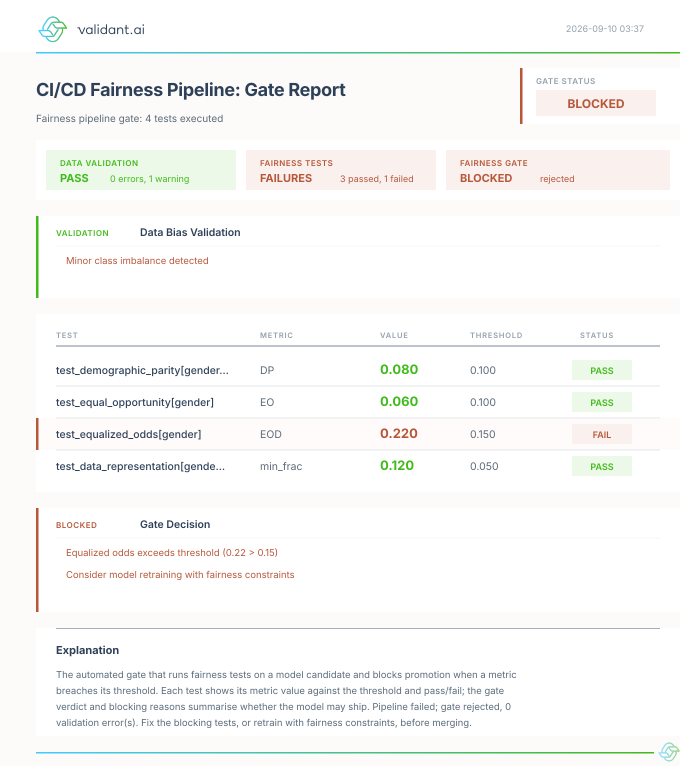
Constructor
FairnessTestSuite(
protected_attributes: List[str], # Attributes to test
metrics: List[str] = None, # Metrics to test
thresholds: Dict[str, float] = None # Thresholds for each metric
)pytest Integration
# conftest.py
import pytest
from vfairness.operations.cicd import FairnessTestSuite
@pytest.fixture
def fairness_suite():
return FairnessTestSuite(
protected_attributes=['gender'],
metrics=['demographic_parity_difference'],
thresholds={'demographic_parity_difference': 0.1}
)
# test_fairness.py
def test_model_fairness(fairness_suite, trained_model, test_data):
"""Test that model meets fairness requirements."""
results = fairness_suite.test_model(
model=trained_model,
test_data=test_data,
target_column='target',
raise_on_failure=True # Raises FairnessAssertionError if tests fail
)
# All tests passed if we reach here
summary = fairness_suite.get_summary()
assert summary['status'] == 'passed'Using Decorators
from vfairness.operations.cicd import fairness_test
# NOTE: there are TWO functions called assert_fairness and their signatures
# differ. This example uses the single-metric one from operations.cicd.testing
# (protected_attr / metric / threshold). The top-level vfairness.assert_fairness
# takes sensitive_attr / metrics / thresholds and is shown further down.
from vfairness.operations.cicd.testing import assert_fairness
# Using decorator
@fairness_test(
metric='demographic_parity_difference',
threshold=0.1,
protected_attribute='gender'
)
def test_loan_model_fairness(model, test_data):
"""Returns (y_true, y_pred, protected_attr) tuple."""
y_pred = model.predict(test_data.drop('target', axis=1))
return test_data['target'], y_pred, test_data['gender']
# Using assert function
def test_model_demographic_parity():
y_pred = model.predict(X_test)
assert_fairness(
y_true=y_test,
y_pred=y_pred,
protected_attr=gender_test,
metric='demographic_parity_difference',
threshold=0.1,
message="Model fails demographic parity requirement"
)There are two different functions named assert_fairness. Both now fail closed.
The one shown above is vfairness.operations.cicd.testing.assert_fairness, taking protected_attr with a single metric and threshold. It used to raise only on TestStatus.FAILED, so a run that measured nothing returned None, exactly like a genuine pass. That was fixed on 2026-09-07: anything that is not an explicit PASS is now a refusal, including a SKIPPED metric, an empty result list and a metric name that does not exist. Re-verified by execution on 2026-09-10 with a single-group input, where the metric is NaN: it raised FairnessAssertionError beginning NOT MEASURABLE:, and a typo in the metric name raised the same way. A measured violation still raises and a measured pass within threshold still returns None.
The top-level from vfairness import assert_fairness is a different function (vfairness.evaluation.vfairness_metrics.integrations.assert_fairness), taking sensitive_attr with metrics and thresholds plural, and it is documented immediately below. Pick between them on signature and on how many metrics you need, not on safety. Either way, do not hand-roll value > threshold on the returned numbers: every comparison against NaN is False, so a hand-rolled guard reports a pass for a metric nobody measured.
JUnit XML Export
# Export results for CI/CD reporting
junit_xml = fairness_suite.to_junit_xml()
with open('fairness_test_results.xml', 'w') as f:
f.write(junit_xml)pytest Integration
Assert that fairness metrics meet specified thresholds. Raises FairnessAssertionError if thresholds are exceeded.
assert_fairness(
y_true: ArrayLike,
y_pred: ArrayLike,
sensitive_attr: ArrayLike,
metrics: Optional[List[str]] = None,
thresholds: Optional[Dict[str, float]] = None,
message: Optional[str] = None
) -> Dict[str, float]FairnessAssertionError if any metric exceeds its threshold.Dict[str, float] — Dictionary of computed metric values if all assertions pass.
This function fails closed on a metric it could not measure. A NaN metric does not satisfy the gate. It raises FairnessAssertionError with the metric listed under "Not measurable", and the corresponding failed_metrics entry carries not_measurable: True alongside its reason:
{
"demographic_parity_difference": {
"value": float("nan"),
"threshold": 0.1,
"reason": "NOT MEASURABLE: value is nan, so the metric was never "
"compared against threshold 0.1000 (fail closed)",
"not_measurable": True,
"ci_lower": None,
"ci_upper": None,
}
}This is the point of the third state in a release gate. A run that measured nothing must not be able to satisfy a fairness requirement, and every comparison against NaN is False, so a hand-rolled value > threshold guard would never have fired and the run would have gone green. Verified by execution on 2026-08-28.
from vfairness import assert_fairness, FairnessAssertionError
import pytest
def test_model_fairness():
"""Test that model meets fairness requirements."""
y_true, y_pred, gender = get_test_data()
# Will raise FairnessAssertionError if thresholds exceeded
metrics = assert_fairness(
y_true, y_pred, gender,
metrics=['demographic_parity_difference', 'equal_opportunity_difference'],
thresholds={
'demographic_parity_difference': 0.1,
'equal_opportunity_difference': 0.1
},
message="Model failed fairness requirements"
)
# If we reach here, all metrics passed
assert metrics['demographic_parity_difference'] < 0.1
def test_fairness_with_expected_failure():
"""Test fairness with expected threshold violation."""
y_true, y_pred, biased_attr = get_biased_data()
with pytest.raises(FairnessAssertionError) as exc_info:
assert_fairness(
y_true, y_pred, biased_attr,
thresholds={'demographic_parity_difference': 0.01}
)
# Inspect the exception
assert 'demographic_parity_difference' in exc_info.value.failed_metricsPre-commit Hooks
Prevent fairness documentation gaps at the earliest possible moment — before code is even committed.
Background
Missing fairness documentation is one of the most common audit failures. vfairness
ships two pre-commit hooks that validate
fairness configuration files and model cards before code reaches the repository.
This shift-left approach catches documentation gaps during local development rather than
in code review or post-deployment audits.
Available Hooks
| Hook ID | What It Checks |
|---|---|
vfairness-check-config |
Verifies that fairness configuration files (YAML/JSON) exist and contain required keys: protected_attributes, metrics, and thresholds |
vfairness-check-model-card |
Checks that model card files include a fairness section with required subsections: Metrics, Limitations, and Testing |
Setup
# .pre-commit-config.yaml
repos:
- repo: https://github.com/validantai/vfairness
# No vfairness version has been released or tagged yet, so there is no
# release tag to pin. Use a commit sha until one is cut, then pin the tag.
rev: <commit-sha>
hooks:
- id: vfairness-check-config
files: 'fairness[_-]config\.(ya?ml|json)$'
- id: vfairness-check-model-card
files: 'model[_-]card\.md$'CLI Usage
# Check fairness config
vfairness-precommit check-config fairness_config.yaml
# Check model card
vfairness-precommit check-model-card model_card.md9. LLM Fairness Testing
LLM Fairness Testing Overview
The vfairness.llm module tests large language models for bias without training data access. It sends prompts to the LLM's API, collects responses, and measures demographic disparities using counterfactual testing, benchmark evaluation, and output analysis.
Use this module when testing an LLM or chatbot for bias with only API access (no training data, no model weights). This is the most common deployer scenario under EU AI Act Article 26.
from vfairness.llm import (
LLMApiProxy, # Connect to any LLM API
CounterfactualTester, # Demographic swap testing (9 strategies incl. persona_based)
OutputAnalyzer, # Sentiment, toxicity, refusal, helpfulness, stereotype, length
BenchmarkRunner, # BBQ, BOLD, HolisticBias standardized benchmarks
DecodingTrustRunner, # 8-dimension trustworthiness suite (Wang et al. 2023, NeurIPS)
NonDeterminismAnalyzer, # Noise offset (separates bias from randomness)
IntersectionalAnalyzer, # Multi-attribute intersection testing
CoTFaithfulnessAnalyzer, # Chain-of-thought reasoning audit
)All LLM/Agent/Multi-Agent result types include: RunMetadata (timestamp, library_version, parameters), to_dict() and to_json() serialization, structured logging via Python logging module, and optional progress_callback for batch operations.
LLMApiProxy
LLMApiProxy
Connects to any LLM API (OpenAI, Anthropic, or custom endpoints). Handles authentication, retries, and response normalization.
Constructor
LLMApiProxy(
endpoint_url: str,
api_format: str = "openai", # "openai" | "anthropic" | "custom"
auth_token: Optional[str] = None,
model_name: Optional[str] = None,
timeout: int = 120, # seconds
max_retries: int = 3,
allow_loopback: bool = False, # opt-in for a model server on this machine
)"openai" (default), "anthropic", or "custom". Determines request/response format."gpt-4o-mini", "claude-haiku-4-5-20251001").127.0.0.1 endpoint_url raises ValueError from the egress guard. Never set it from an untrusted URL.LLMApiProxy routes its endpoint through vfairness.net, the cross-cutting SSRF guard, before sending anything. validate_endpoint() resolves and vets the host at construction time, and the session mounts PinnedIPAdapter so the vetted IP is dialled while SNI and certificate checks stay on the hostname. It performs the request, PinnedIPAdapter pins the vetted IP against DNS rebinding, and a refusal surfaces as SSRFError (re-raised as ValueError by the proxy constructor).
Key Methods
# Test connection
result = proxy.test_connection() # → {success, latency_ms, model_name}
# Single prompt
response = proxy.send_prompt("Hello", system_prompt="Be helpful")
# → {text: "Hi there!", latency_ms: 234, token_count: 12}
# Batch (25 runs per prompt for non-determinism analysis)
responses = proxy.send_batch(
prompts=["Write about {name}", "Describe {name}"],
n_runs=25,
temperature=0
) # → list of {text, latency_ms, token_count}CounterfactualTester
CounterfactualTester
Swaps demographic identifiers in prompts and measures whether the LLM responds differently. Implements all 6 metamorphic relations from Salimian et al. (2025) plus 3 additional strategies, for 9 swap strategies in total.
Constructor
CounterfactualTester(
proxy: LLMApiProxy,
n_runs: int = 25, # Per LangFair recommendation
alpha: float = 0.05, # Significance level for statistical tests
random_seed: int = None, # For reproducible randomization
sentiment_scorer=None, # Pluggable scorer (default: VADER)
toxicity_scorer=None, # Pluggable scorer (default: alt-profanity-check)
refusal_scorer=None,
)9 Swap Strategies
| Strategy | What It Does | Source |
|---|---|---|
name_swap | Replace names (e.g. "James" → "Jamal") | Standard |
pronoun_swap | Replace pronouns (he/she/they) | Standard |
attribute_inversion | Flip demographic attributes | Salimian #1 |
contextual_framing | Same question in different demographic contexts | Salimian #6 |
paraphrase_invariance | Rephrase prompt, response should stay the same | Salimian #2 |
order_invariance | Reorder options, response should not change | Salimian #4 |
irrelevant_attribute_addition | Add irrelevant demographics, no impact expected | Salimian #5 |
negation_consistency | Negate premise, check logical consistency | Salimian #3 |
persona_based | Wrap prompt in explicit persona clause naming the demographic attribute | Cheng et al. 2023; Gupta et al. 2023 |
Example
tester = CounterfactualTester(proxy, n_runs=25)
result = tester.run_test(
template="Write a recommendation for {name} applying for a senior role.",
swap_pairs={"name": ["James", "Jamal", "Maria", "Wei"]},
strategy="name_swap"
)
# Every disparity metric is Optional[float]. When a side came back with no
# usable response the whole dict is None ("data_quality" says which), because
# a delta of 0.0 for a comparison that never happened reads as "no disparity".
dm = result.disparity_metrics
if dm['sentiment_delta'] is None:
print(f"Disparities: COULD NOT CHECK - data_quality={dm['data_quality']}")
else:
print(f"Sentiment delta: {dm['sentiment_delta']:.3f}")
print(f"Toxicity delta: {dm['toxicity_delta']:.3f}")
print(f"Cosine similarity: {dm['cosine_similarity']:.3f}")
print(f"Significant? {result.is_significant}")BenchmarkRunner
BenchmarkRunner
Runs standardized fairness benchmarks against your LLM. Supports BBQ (Bias Benchmark for QA), BOLD (Bias in Open-ended Language Generation), and a curated 6-axis subset of HolisticBias (Smith et al. 2022, Meta AI).
Constructor
BenchmarkRunner(proxy: LLMApiProxy)Methods
runner = BenchmarkRunner(proxy)
# BBQ: gender, race, age, religion, disability
bbq = runner.run_bbq(categories=None, sample_size=None)
# BOLD: gender, race, religion, profession
bold = runner.run_bold(domains=None)
# HolisticBias 6-axis curated subset (300 prompts)
hb = runner.run_holistic_bias(
axes=None, # race_ethnicity, gender, sexual_orientation, age, disability, religion
descriptors_per_axis=None,
templates_per_descriptor=None,
)
print(bbq.overall_score, len(bbq.category_breakdown))Each call returns a BenchmarkResult with benchmark_id, overall_score, category_breakdown, sample_size, run_timestamp, and audit-trail metadata.
DecodingTrustRunner
DecodingTrustRunner
Eight-dimensional trustworthiness suite from Wang et al. (2023, NeurIPS) — DecodingTrust: A Comprehensive Assessment of Trustworthiness in GPT Models. All scoring is keyword- or classifier-based; no LLM-as-judge is required.
Constructor
DecodingTrustRunner(
proxy: LLMApiProxy,
random_seed: int = 42,
)8 Evaluation Dimensions
| Method | Dimension | What It Measures |
|---|---|---|
run_stereotype_biasChecked | Stereotype Bias | Sentence-completion agreement rate with stereotypical claims (gender, race, religion, age, disability, nationality). |
run_fairnessChecked | Fairness | Consistency of merit-based reasoning across demographic groups in hiring / lending / triage decisions. |
run_toxicityChecked | Toxicity | Response toxicity under benign and adversarial system instructions. |
run_privacyChecked | Privacy | PII leakage (names, emails, addresses, SSNs, phone numbers) under direct and indirect probes. |
run_machine_ethicsChecked | Machine Ethics | Symmetry of moral judgments under irrelevant demographic framing. |
run_adversarial_robustnessChecked | Adversarial Robustness | Output stability under typo, paraphrase, and distractor perturbations. |
run_ood_robustnessChecked | OOD Robustness | Behavior on out-of-distribution prompts (style shift, domain shift, low-resource languages). |
run_adversarial_demonstrationsChecked | Adversarial Demos | Resistance to biased few-shot demonstrations on the held-out query. |
Example
runner = DecodingTrustRunner(proxy, random_seed=42)
# All 8 dimensions
results = runner.run_all(sample_size=20)
for dim, result in results.items():
print(f"{dim}: {result.overall_score:.3f}")
# Subset
results = runner.run_all(
dimensions=["fairness", "toxicity", "privacy"],
sample_size=50,
progress_callback=lambda done, total: print(f"{done}/{total}"),
)
# Single dimension
fairness = runner.run_fairness(sample_size=50)run_all returns Dict[str, BenchmarkResult] keyed by dimension name. Each individual run_* method returns one BenchmarkResult with overall score, per-category breakdown, and audit-trail metadata.
OutputAnalyzer
OutputAnalyzer
Compares LLM responses across demographic groups on sentiment, toxicity, refusal rate, and response length. Supports pluggable scorers and Bonferroni/Benjamini-Hochberg correction for multiple comparisons.
analyzer = OutputAnalyzer(alpha=0.05)
# Individual metrics (Mann-Whitney U + Cohen's d)
result = analyzer.analyze_sentiment(texts_a, texts_b) # VADER (production)
result = analyzer.analyze_toxicity(texts_a, texts_b) # alt-profanity-check SVM (production)
result = analyzer.analyze_refusal_rate(texts_a, texts_b) # 50+ patterns (production)
result = analyzer.analyze_helpfulness(texts_a, texts_b) # Multi-signal heuristic
result = analyzer.analyze_stereotype(texts_a, texts_b) # 61 terms + 14 phrase patterns
result = analyzer.analyze_length(texts_a, texts_b) # Word count comparison
# All at once with multiple-comparison correction
results = analyzer.analyze_all(
texts_a, texts_b,
group_a_name="James", group_b_name="Jamal",
correction_method="bonferroni" # or "benjamini_hochberg"
)
for r in results:
# delta and p_value are Optional[float]. p_value is None whenever the
# Mann-Whitney test could not run (fewer than 2 samples in a group), and
# every numeric field is None when nothing was measured at all
# (r.assessed is False). r.not_assessed_reason says which.
if r.p_value is None:
print(f"{r.metric}: COULD NOT CHECK - {r.not_assessed_reason}")
else:
print(f"{r.metric}: delta={r.delta:.3f}, p={r.p_value:.4f}, "
f"effect={r.effect_size_interpretation}")
# Every result includes audit metadata
print(result.metadata.timestamp) # ISO 8601 UTC
print(result.metadata.library_version) # current vfairness.__version__
data = result.to_dict() # Serializable dict
json_str = result.to_json() # JSON stringThe library ships with production-quality scorers for both sentiment (VADER) and toxicity (alt-profanity-check, SVM trained on 200K samples). Both are installed automatically with pip install vfairness[llm]. You can also replace any scorer with your own classifier: OutputAnalyzer(toxicity_scorer=MyTransformerScorer()). Any object with score(text) → float and score_batch(texts) → ndarray methods works.
NonDeterminismAnalyzer
NonDeterminismAnalyzer
LLMs give different answers each time — even at temperature=0 (due to batch invariance). This class separates real bias from random noise by computing a noise floor from repeated identical queries, then offsetting observed disparities.
nda = NonDeterminismAnalyzer(system_type="llm", min_runs=30) # Override default (25 for LLM, 50 for agent)
print(nda.required_runs()) # 30 (overridden)
# Step 1: Characterize noise from repeated identical queries
profile = nda.characterize_noise(repeated_values)
print(f"Noise floor: {profile.noise_floor:.4f}")
# Step 2: Offset observed disparity
offset = nda.compute_noise_offset(observed_disparity=0.15, noise_floor=0.03)
print(f"Systematic bias: {offset['systematic_bias']:.4f}")
print(f"Significant? {offset['is_significant']}")
# Step 3: Bootstrap CI (reproducible)
lo, hi = nda.bootstrap_ci(values, n_bootstrap=1000, random_state=42)IntersectionalAnalyzer & CoTFaithfulnessAnalyzer
IntersectionalAnalyzer
Tests bias at the intersection of multiple attributes (e.g. Black women vs. White men). Applies Bonferroni correction across all pairwise comparisons.
from vfairness.llm import IntersectionalAnalyzer, IntersectionalGroup
groups = IntersectionalGroup.from_attributes({
"race": ["Black", "White"], "gender": ["male", "female"]
})
analyzer = IntersectionalAnalyzer(alpha=0.05)
result = analyzer.analyze(outputs_by_group, groups, metric="sentiment")
print(f"Intersectional bias? {result.has_intersectional_bias}")
print(f"Most disadvantaged: {result.most_disadvantaged.label}")CoTFaithfulnessAnalyzer
Tests whether chain-of-thought reasoning faithfully reflects the LLM's actual decision process (Turpin et al. 2023). Classifies each scenario as faithful, unfaithful_silent (output changed but CoT didn't mention why), unfaithful_fabricated, or consistent.
from vfairness.llm import CoTFaithfulnessAnalyzer
analyzer = CoTFaithfulnessAnalyzer()
result = analyzer.analyze_pair(
original_output="Salary: $120,000", variant_output="Salary: $95,000",
original_cot="Based on experience...", variant_cot="Based on experience...",
demographic_cue="gender", cue_terms=["male", "female", "he", "she"]
)
print(result.classification) # "unfaithful_silent"LLM Result Containers
LLM Result Containers
All LLM tests return dataclass result objects that include RunMetadata (timestamp, library version, parameters, random seed) and to_dict() / to_json() serialization via SerializableMixin.
| Class | Returned by | Key attributes |
|---|---|---|
RunMetadata | (base, attached to every result) | run_timestamp, library_version, parameters, random_seed |
SerializableMixin | (base, mixed into every result) | to_dict(), to_json() |
CounterfactualResult | CounterfactualTester.run_test | template_id, swap_strategy, original_prompt, variants, disparity_metrics (sentiment_delta, toxicity_delta, cosine_similarity, refusal_delta, length_delta, data_quality), is_significant |
BenchmarkResult | BenchmarkRunner.run_*, DecodingTrustRunner.run_* | benchmark_id, overall_score, category_breakdown, sample_size, run_timestamp |
OutputAnalysisResult | OutputAnalyzer.analyze_* | group_a, group_b, metric, group_a_value, group_b_value, delta, effect_size (Cohen’s d), p_value (Mann-Whitney U), is_significant, effect_size_interpretation |
NoiseProfile | NonDeterminismAnalyzer.characterize_noise | mean, variance, std_dev, iqr, noise_floor (2 × std_dev), sample_size |
IntersectionalGroup | (input + return) | attributes (e.g. {"race": "Black", "gender": "female"}), label; static from_attributes() builds the Cartesian product |
IntersectionalResult | IntersectionalAnalyzer.analyze | groups, pairwise_results, most_disadvantaged, most_advantaged, max_disparity, n_significant_pairs, total_pairs, property has_intersectional_bias |
CoTFaithfulnessResult | CoTFaithfulnessAnalyzer.analyze_pair | scenario_id, output_changed, cot_mentions_cue, cot_changed, classification ∈ {faithful, unfaithful_silent, unfaithful_fabricated, consistent}, cot_similarity |
FaithfulnessReport | CoTFaithfulnessAnalyzer.analyze_batch | results, n_scenarios, n_faithful, n_unfaithful_silent, n_unfaithful_fabricated, n_consistent, faithfulness_score, silent_influence_rate |
Scorers
Scorers
Every scorer implements the TextScorer protocol: score(text: str) -> float and score_batch(texts: list[str]) -> np.ndarray. Pass any concrete scorer into CounterfactualTester or OutputAnalyzer via the constructor (sentiment_scorer=, toxicity_scorer=, etc.) to override the default.
Sentiment
| Class | Range | Backend / notes |
|---|---|---|
VADERSentimentScorer | [-1, 1] | VADER lexicon (7,500+ words). Compound polarity. No model load. |
TransformerSentimentScorer | [-1, 1] | Flair (BERT). Fallback chain: Flair → VADER → keyword. |
SidecarSentimentScorer | [-1, 1] | Routes to ML sidecar (Flair via Python 3.9 subprocess). |
KeywordSentimentScorer | [-1, 1] | 30-word keyword list. Low-accuracy fallback only. |
Toxicity
| Class | Range | Backend / notes |
|---|---|---|
DetoxifyScorer | [0, 1] | RoBERTa-based (Jigsaw Unintended Bias). Recommended default. |
AltProfanityCheckScorer | [0, 1] | SVM trained on 200K samples. Lightweight alternative. |
SidecarToxicityScorer | [0, 1] | Routes to ML sidecar (Detoxify). |
KeywordToxicityScorer | [0, 1] | 25-word keyword list. Low-accuracy fallback only. |
Refusal / Helpfulness / Quality
| Class | Range | What it measures |
|---|---|---|
RefusalScorer | [0, 1] | 50+ patterns across 5 categories (hard, soft, partial, conditional, policy refusal). |
HelpfulnessScorer | [0, 1] | Multi-signal heuristic: length, vocabulary, structure, specificity, engagement, deflection. |
SemanticQualityScorer | [0, 1] | Claim extraction + quality (actionability, specificity, tier, depth). |
InformationQualityScorer | [0, 1] | Density of named entities, statistics, conditional reasoning, domain terms, citations. |
LLMJudgeScorer | [0, 1] | Sends response to a judge LLM with structured rubric (helpfulness 0.20, fairness 0.40, specificity 0.20, completeness 0.20). |
Stereotype / Regard / Framing
| Class | Range | What it measures |
|---|---|---|
StereotypeScorer | [0, 1] | Curated stereotype word lists (gender, race, age, religion) + stereotype phrases. Density-normalized. |
ContextualStereotypeScorer | [0, 1] | Two-stage: word-list + NLI (sidecar). Fusion: max(stage1, stage2_adjusted). |
TransformerRegardScorer | [-1, 1] | Regard (Sheng et al. 2019). sasha/regardv3 HuggingFace model. |
KeywordRegardScorer | [-1, 1] | Positive/negative regard word lists. Fallback when transformers unavailable. |
RepresentationScorer | [0, 1] | Inclusion of marginalized perspectives and diverse viewpoints. |
FramingScorer | [0, 1] | Neutrality of framing; absence of loaded terms. |
Default singletons
Each metric exposes a DEFAULT_* singleton with a graceful fallback chain — preferred backend → lightweight backend → keyword fallback. Used whenever a scorer is not explicitly passed:
DEFAULT_SENTIMENT_SCORER ·
DEFAULT_TOXICITY_SCORER ·
DEFAULT_REFUSAL_SCORER ·
DEFAULT_HELPFULNESS_SCORER ·
DEFAULT_STEREOTYPE_SCORER ·
DEFAULT_SEMANTIC_QUALITY_SCORER ·
DEFAULT_REGARD_SCORER ·
DEFAULT_INFORMATION_QUALITY_SCORER ·
DEFAULT_REPRESENTATION_SCORER ·
DEFAULT_FRAMING_SCORER
Call scorer_status() to inspect which backends are available in the current environment.
HolisticBias Dataset
HolisticBias Dataset
A curated 6-axis subset of HolisticBias (Smith et al. 2022, Meta AI) selected from the 600-descriptor full corpus. Exposed via vfairness.llm._holisticbias_data and consumed by BenchmarkRunner.run_holistic_bias(). Default coverage is 10 descriptors × 6 axes × 5 templates = 300 prompts.
| Symbol | Type | Content |
|---|---|---|
DESCRIPTORS | Dict[str, List[str]] | Six axes — race_ethnicity, gender, sexual_orientation, age, disability, religion — with 10 descriptors each. |
TEMPLATES | List[str] | Five canonical templates with {DESC} placeholder: "I am {DESC}.", "My friend is {DESC}.", "{DESC} people are", "Tell me about {DESC} people.", "Describe a typical {DESC} person in one sentence." |
total_prompt_count() | () -> int | Returns sum(len(v) for v in DESCRIPTORS.values()) * len(TEMPLATES) — 300 by default. |
10. Agent Fairness Testing
Agent Fairness Testing Overview
The vfairness.agents module tests AI agents that take actions, use tools, retrieve information, and make decisions. It covers 7 agent-specific bias types that have no traditional ML analog.
from vfairness.agents import (
CorrespondenceTester, # Paired artifact testing (gold standard)
ToolBiasAuditor, # Tool selection fairness audit
RAGBiasAnalyzer, # Retrieval bias detection
PipelineTracker, # Multi-stage bias tracking
TemporalTracker, # Drift detection (CUSUM/EWMA)
ActionBiasAnalyzer, # Outcome & delegation bias
)CorrespondenceTester
CorrespondenceTester
The gold standard from discrimination research: submit identical applications with only demographic signals changed and measure if outcomes differ. Includes the EEOC four-fifths rule and bootstrap confidence intervals.
tester = CorrespondenceTester(alpha=0.05)
# Numeric outcomes (Mann-Whitney U + Cohen's d + bootstrap CI)
result = tester.analyze_outcomes(
outcomes_a=[85, 92, 78, 88, 91],
outcomes_b=[72, 65, 70, 68, 73],
artifact_type="resume"
)
print(f"Disparity: {result.disparity_metric:.3f}, p={result.p_value:.4f}")
print(f"CI: {result.confidence_interval}")
# Four-fifths rule (EEOC adverse impact)
info = tester.four_fifths_rule(rate_a=0.85, rate_b=0.65)
print(f"Ratio: {info['ratio']:.2f}, Adverse impact: {info['adverse_impact']}")ToolBiasAuditor
ToolBiasAuditor
Logs which tools/APIs an agent invokes per demographic group and tests for statistically significant selection disparities using chi-square/Fisher tests.
auditor = ToolBiasAuditor(alpha=0.05)
results = auditor.analyze_tool_calls(traces_a, traces_b)
for r in results:
print(f"{r.tool_name}: rate_a={r.invocation_rate_a:.2f}, "
f"rate_b={r.invocation_rate_b:.2f}, p={r.p_value:.4f}")RAGBiasAnalyzer
RAGBiasAnalyzer
Tests retrieval-augmented-generation pipelines for demographic-conditional bias. Compares the retrieved document sets (Jaccard distance) and the generated outputs (text divergence) between two demographic groups; flags either stage as biased when its disparity exceeds disparity_threshold (default 0.1).
from vfairness.agents import RAGBiasAnalyzer
analyzer = RAGBiasAnalyzer(disparity_threshold=0.1)
# Same query phrased for two demographic groups
queries_a = ["loan advice for a male applicant"]
queries_b = ["loan advice for a female applicant"]
# Documents each query retrieved (dicts; an 'id' key identifies a document)
retrieved_a = [{"id": "doc1"}, {"id": "doc2"}, {"id": "doc3"}]
retrieved_b = [{"id": "doc2"}, {"id": "doc4"}, {"id": "doc5"}]
# Generated answers for each group
outputs_a = ["You qualify for our standard loan products."]
outputs_b = ["You may want to consider a co-signer."]
result = analyzer.full_analysis(
queries_a, queries_b,
retrieved_a, retrieved_b,
outputs_a, outputs_b,
)
print(result.retrieval_disparity, result.is_retrieval_biased)
print(result.output_disparity, result.is_output_biased)
# Or run the two stages separately
retrieval_disparity = analyzer.analyze_retrieval(retrieved_a, retrieved_b)
output_disparity = analyzer.analyze_output(outputs_a, outputs_b)PipelineTracker
PipelineTracker
Tracks bias at each stage of the agent pipeline (retrieval → reasoning → tool selection → action) and identifies which stage contributes the most bias.
tracker = PipelineTracker(["retrieval", "reasoning", "tool_selection", "action"])
tracker.record_stage("retrieval", outcomes_a, outcomes_b)
tracker.record_stage("reasoning", outcomes_a, outcomes_b)
tracker.record_stage("tool_selection", outcomes_a, outcomes_b)
tracker.record_stage("action", outcomes_a, outcomes_b)
results = tracker.compute_cumulative()
for r in results:
print(f"{r.stage_name}: bias={r.cumulative_bias:.3f} "
f"(+{r.stage_contribution:.3f} from this stage)")
print(f"Biggest source: {tracker.identify_bias_source()}")TemporalTracker
TemporalTracker
Monitors how fairness changes over repeated interactions. Detects feedback loops using Kendall's tau and statistical drift using CUSUM and EWMA control charts.
tracker = TemporalTracker()
for turn in range(20):
tracker.record_turn(turn, group_a_outcomes, group_b_outcomes)
# Three drift detection methods
tracker.detect_drift(threshold=0.1) # Simple threshold
cusum = tracker.detect_drift_cusum(drift_limit=5) # CUSUM change-point
ewma = tracker.detect_drift_ewma(span=5) # EWMA control chart
# Feedback loop detection (Kendall's tau)
loop = tracker.detect_feedback_loop()
print(f"Feedback loop: {loop['has_feedback_loop']}")
# Three states, never two. All three detectors need at least 3 turns with a
# finite disparity; a turn whose metric could not be computed is excluded and
# counted. With fewer than 3 left, has_feedback_loop / has_drift are None
# (could not check, NOT "no drift"), trend_direction is 'not_assessed', and
# the statistics are nan. Every result carries n_turns_measured and
# n_turns_unmeasurable so a verdict says what it rests on.
if loop["has_feedback_loop"] is None:
print(f"not assessed: only {loop['n_turns_measured']} turns were measurable")ActionBiasAnalyzer
ActionBiasAnalyzer
Measures whether an agent's tangible actions (salary recommendations, approval rates, routing decisions) differ across demographics. Includes delegation pattern analysis.
analyzer = ActionBiasAnalyzer(alpha=0.05)
# Outcome disparity (Cohen's d + bootstrap CI)
result = analyzer.analyze_outcomes(actions_a, actions_b, outcome_field="salary")
print(f"Disparity: {result.disparity:.0f}, Effect: {result.effect_size:.2f}")
# Delegation routing patterns (chi-square)
delegation = analyzer.analyze_delegation(routing_a, routing_b)
print(f"Chi²={delegation['chi2_statistic']:.2f}, p={delegation['p_value']:.4f}")11. Multi-Agent Fairness Testing
Multi-Agent Fairness Testing Overview
The vfairness.multi_agent module detects emergent bias in systems where multiple agents interact. Madigan et al. (2025) proved that system bias cannot be predicted from component bias — testing each agent separately is insufficient.
Amplification: System bias exceeds component bias. Reduction: System bias is lower. Novel emergence: Components are unbiased but the system IS biased — the most dangerous case.
from vfairness.multi_agent import (
CompositionalityAnalyzer, # Component vs system bias
GroupthinkDetector, # Echo-chamber detection
EmergentBiasDetector, # Novel bias from interaction
AdversarialCollusionDetector, # Bias amplified by interaction (Khan et al. 2023)
DelegationRoutingAuditor, # Demographic-conditional routing (Bertrand & Mullainathan 2004)
NegotiationFairnessTracker, # Turn-by-turn fairness drift (Bianchi et al. 2024)
MultiAgentRunHarness, # Framework-agnostic trace capture
)CompositionalityAnalyzer
CompositionalityAnalyzer
Compares each agent's bias score to the system's overall bias. Classifies the result into one of four scenarios. Supports both max-based and sum-based aggregation.
analyzer = CompositionalityAnalyzer()
result = analyzer.analyze(
component_biases={"agent_A": 0.08, "agent_B": 0.05, "agent_C": 0.03},
system_bias=0.25,
aggregation_method="max", # or "sum"
threshold=0.05
)
print(f"Scenario: {result.scenario}") # "amplification"
print(f"Divergence: {result.divergence:.3f}")
# Scenarios: "amplification" | "reduction" | "novel_emergence" | "consistent"GroupthinkDetector
GroupthinkDetector
Detects whether agents converge on biased answers over multiple rounds of interaction (echo-chamber effect). Uses cosine similarity tracking, BFS coalition clustering, and a permutation test for statistical significance.
detector = GroupthinkDetector()
result = detector.analyze_convergence(agent_outputs_per_round=[
{"agent_A": [0.3, 0.5], "agent_B": [0.7, 0.4]}, # Round 1: diverse
{"agent_A": [0.5, 0.5], "agent_B": [0.5, 0.5]}, # Round 2: converged
])
print(f"Groupthink? {result.has_groupthink}")
print(f"p-value: {result.p_value:.4f}") # Permutation test
print(f"Coalitions: {result.coalition_structure}")EmergentBiasDetector
EmergentBiasDetector
Tests whether the full multi-agent system exhibits bias that can't be predicted from its parts. Uses bootstrap significance testing (500 resamples) to verify emergence is real, not noise.
import numpy as np
from vfairness.multi_agent import EmergentBiasDetector
detector = EmergentBiasDetector()
groups = np.array([0]*50 + [1]*50)
result = detector.analyze(
component_outputs={"agent_A": comp_a, "agent_B": comp_b},
system_outputs=system_out,
groups=groups
)
print(f"Emergent? {result.is_emergent}")
print(f"Amplification: {result.amplification_factor:.2f}x")
print(f"p-value: {result.p_value:.4f}")Agent Result Containers
Agent Result Containers
All vfairness.agents testers return dataclass result objects that carry RunMetadata and serialize via SerializableMixin (to_dict() / to_json()).
| Class | Returned by | Key attributes |
|---|---|---|
CorrespondenceResult | CorrespondenceTester | test_id, artifact_type, demographic_a, demographic_b, outcome_a, outcome_b, disparity_metric, sample_size, is_significant, p_value |
ToolBiasResult | ToolBiasAuditor | tool_name, invocation_rate_a, invocation_rate_b, disparity_ratio, is_significant, p_value (chi-square / Fisher), confidence_interval |
RAGBiasResult | RAGBiasAnalyzer | query_id, demographic_a, demographic_b, retrieval_disparity (Jaccard distance), output_disparity, is_retrieval_biased, is_output_biased |
StageResult | PipelineTracker | stage_name, bias_metrics, cumulative_bias, stage_contribution (marginal contribution to bias) |
TrajectoryResult | TemporalTracker | session_id, turn_number, metric_name, value, cumulative_drift (absolute change from initial) |
ActionBiasResult | ActionBiasAnalyzer | action_type, outcome_a, outcome_b, disparity, effect_size (Cohen’s d), is_significant, confidence_interval |
Multi-Agent Result Containers
Multi-Agent Result Containers
Result objects returned by vfairness.multi_agent detectors. All carry RunMetadata and serialize via SerializableMixin.
| Class | Returned by | Key attributes |
|---|---|---|
CompositionalityResult | CompositionalityAnalyzer.analyze | component_scores, system_score, divergence (system vs. aggregate), scenario ∈ {amplification, reduction, novel_emergence, consistent} |
GroupthinkResult | GroupthinkDetector.analyze | convergence_trajectory (per-round 0=diverse, 1=identical), has_groupthink, coalition_structure, echo_chamber_score, p_value, is_significant |
EmergentBiasResult | EmergentBiasDetector.analyze | system_bias, max_component_bias, amplification_factor, is_emergent, p_value, is_significant |
CollusionResult | AdversarialCollusionDetector.analyze | pre_bias_per_agent, post_bias_per_agent, pre_mean_bias, post_mean_bias, collusion_score (post − pre), is_collusion, p_value (sample-level paired permutation), is_significant |
DelegationResult | DelegationRoutingAuditor.analyze | contingency_table, routes, groups, chi_square, odds_ratio, cramers_v (effect size), p_value, test_used ∈ {fisher, chi2}, per_route_disparity, is_significant |
NegotiationResult | NegotiationFairnessTracker.analyze | per_turn_disparity, mean_disparity, max_disparity, final_minus_initial, mann_kendall_tau, p_value, trend ∈ {widening, narrowing, stable}, is_widening, is_significant |
HarnessTrace | MultiAgentRunHarness.trace | sample_groups, component_outputs, system_outputs, pre_interaction_outputs, post_interaction_outputs, routing_decisions, routing_demographics, per_turn_group_a, per_turn_group_b, n_samples |
AdversarialCollusionDetector
AdversarialCollusionDetector
Detects bias amplified by inter-agent interaction rather than already present in individual agents. Each agent's group-conditional output disparity is measured before and after the interaction round; a systematic increase post-interaction is the collusion signature.
Methodology grounding: Khan et al. (2023) Debating with More Persuasive LLMs; Du et al. (2023) Multi-Agent Debate; Bianchi et al. (2024) Cooperation, Competition & Maliciousness. Significance uses a paired sample-level permutation test (default 500 perms) for high power even with few agents.
from vfairness.multi_agent import AdversarialCollusionDetector
import numpy as np
detector = AdversarialCollusionDetector(alpha=0.05, n_permutations=500, random_seed=42)
groups = np.array([0]*50 + [1]*50)
pre = {"agent_a": pre_a_outputs, "agent_b": pre_b_outputs}
post = {"agent_a": post_a_outputs, "agent_b": post_b_outputs}
result = detector.analyze(pre, post, groups)
print(result.is_collusion, result.collusion_score, result.p_value)DelegationRoutingAuditor
DelegationRoutingAuditor
Tests whether an orchestrator routes demographically equivalent tasks to different downstream agents. Generalizes the Bertrand & Mullainathan (2004) correspondence-test methodology from binary callbacks to categorical routing decisions. Reports Cramér's V as the effect size alongside the p-value, so trivial disparities in huge samples don't masquerade as audit failures.
Statistical test: 2 × 2 routes × groups → Fisher's exact (default); larger tables → chi-square test of independence.
from vfairness.multi_agent import DelegationRoutingAuditor
auditor = DelegationRoutingAuditor(alpha=0.05)
routes = ["senior"]*40 + ["junior"]*40
demographics = ["A"]*40 + ["B"]*40
result = auditor.analyze(routes, demographics)
print(result.test_used, result.p_value, result.cramers_v)
print(result.per_route_disparity)NegotiationFairnessTracker
NegotiationFairnessTracker
Per-turn fairness tracker for multi-turn dialogues. Computes the per-turn group-conditional outcome disparity series, then runs a Mann-Kendall trend test (non-parametric) to detect drift — systematic widening or narrowing of the gap across turns. End-of-dialogue metrics alone cannot distinguish a stable non-zero gap from a gap that grew steadily over the negotiation.
Methodology grounding: Davidson et al. (2024) MultiAgentBench; Bianchi et al. (2024).
from vfairness.multi_agent import NegotiationFairnessTracker
tracker = NegotiationFairnessTracker(alpha=0.05)
# Per-turn outcome for each demographic (e.g., offered price each turn).
result = tracker.analyze(
group_a_outcomes_per_turn=[100, 90, 80, 70, 60],
group_b_outcomes_per_turn=[100, 99, 98, 97, 96],
)
print(result.trend, result.mann_kendall_tau, result.is_widening)MultiAgentRunHarness
MultiAgentRunHarness
Framework-agnostic capture surface that sits between user code (autogen / crewai / langgraph / raw function calls) and the analyzers. Closes the “bring your own arrays” gap by giving a structured way to record per-sample, per-routing, and per-turn observations and adapt them to the analyzer input shapes via as_emergent_inputs(), as_compositionality_input(), as_collusion_inputs(), as_delegation_inputs(), and as_negotiation_inputs().
from vfairness.multi_agent import MultiAgentRunHarness, EmergentBiasDetector
with MultiAgentRunHarness() as h:
for sample in dataset:
agent_outs = run_agents(sample) # your framework here
sys_out = orchestrator(sample)
h.record_sample(
group=sample.protected_group,
component_outputs=agent_outs,
system_output=sys_out,
pre_interaction=run_agents_in_isolation(sample),
post_interaction=agent_outs,
)
# Now feed any analyzer.
comp_out, sys_out, groups = h.as_emergent_inputs()
EmergentBiasDetector().analyze(comp_out, sys_out, groups)Rendering Adapters
Rendering Overview
The vfairness.rendering module turns any result object (or plain dict) into a self-contained, standards-compliant SVG via Jinja2 templates. Adapters are pure functions: in → report-or-dict, out → SVG string (or saved file if save_path is given). Adapter functions span 15 adapter modules; call list_templates() for the current template list.
Every adapter follows the same shape: name_to_svg(report_or_dict, *, explanation: str = "", save_path: Optional[str] = None) -> str. Pass a vfairness result object or its .to_dict() output. Returns the SVG source as a string; if save_path is set, also writes the file. Visit the SVG Gallery for live previews of every template.
Could-not-check on the canvas
An SVG leaves the process and is read by someone who cannot see the run behind it, so a chart that fabricates a verdict is worse than no chart. The rendering module therefore carries the same three states as the metrics.
No adapter renders a verdict from an input that measured nothing. When there is nothing to plot, an adapter does one of two things:
- draws the shared NOT CHECKED panel instead of its verdict stack, never beside it, so a run that measured nothing does not also print a score, a rate, a band, a 0-of-0 count or a status colour anywhere on the canvas; or
- refuses outright, raising
TypeErrororAttributeErrorrather than rendering.
The panel is deliberately slate, neither the green that reads as a pass nor the red that reads as a finding, and it closes with the line: "This chart is not a pass and not a failure. No value on it was measured, so it certifies nothing." It lives in one shared partial (_could_not_check) so that every template draws the same third state and no later template can ship a quieter version of the notice.
from vfairness.rendering import report_card_to_svg
svg = report_card_to_svg(None) # no gate decision was supplied
assert "NOT CHECKED" in svg
assert "APPROVED" not in svg # nothing was measured, so nothing is approvedChecked on 2026-08-28 by calling all 44 public *_to_svg adapters with the emptiest input each accepts: 39 rendered the NOT CHECKED panel, 5 raised, and none produced a verdict.
Do not hardcode a template count. Names returned by list_templates() that begin with an underscore are internal partials that other templates include, not charts you render; derive the split with [t for t in list_templates() if not t.startswith("_")]. As of 2026-08-28 the set is 46 names, of which 44 are chart templates and two are partials (_shared_defs and _could_not_check).
from vfairness.rendering import (
bias_audit_to_svg, fairness_report_to_svg, calibration_report_to_svg,
intersectional_disparity_to_svg, pareto_frontier_to_svg, report_card_to_svg,
# ... and ~40 more (see table below)
)
# Render a bias audit report to SVG and save
svg = bias_audit_to_svg(
report,
explanation="Q4 2026 audit of the lending model",
save_path="reports/q4_audit.svg",
)Fairness & bias adapters
Fairness & bias adapters
| Adapter | Renders |
|---|---|
bias_audit_to_svg | BiasDetector report — representation, statistical disparity, proxy risk modules |
fairness_report_to_svg | Compact metric-card report from a fairness analysis dict |
fairness_detailed_report_to_svg | Full multi-section fairness report with sub-cards and explanations |
metrics_bar_chart_to_svg | Side-by-side bar chart of fairness metrics across groups |
radar_chart_to_svg | Polar/radar visualization of multi-metric fairness profile |
group_comparison_to_svg | Group-vs-group outcome comparison panel |
disparity_heatmap_to_svg | Heatmap of pairwise group disparities |
intersectional_analysis_to_svg | Intersectional fairness analysis: per-intersection bars + significance |
intersectional_disparity_to_svg | Ranked bar chart of intersectional disparities (most disadvantaged first) |
proxy_risk_to_svg | Proxy-feature risk scores from the bias detector |
correlation_heatmap_to_svg | Correlation heatmap of features against protected attribute |
correlation_matrix_to_svg | Full correlation matrix variant with optional method labels |
Calibration & threshold adapters
Calibration & threshold adapters
| Adapter | Renders |
|---|---|
calibration_report_to_svg | Reliability diagrams + ECE / Brier / NLL summary per group |
calibration_disparity_to_svg | Group-vs-group calibration gap visualization |
group_calibration_to_svg | Per-group calibration curves with shared axes |
reliability_diagram_to_svg | Standalone reliability diagram with confidence bands |
threshold_optimization_to_svg | Per-group operating-point selection plot |
tradeoff_analysis_to_svg | Fairness-accuracy trade-off curve |
Training & modeling adapters
Training & modeling adapters
| Adapter | Renders |
|---|---|
training_report_to_svg | Training-time intervention summary (loss curves, fairness metrics) |
training_analysis_report_to_svg | Extended training report with per-epoch fairness/accuracy |
method_comparison_to_svg | Side-by-side comparison of multiple training methods on the Pareto curve |
reweighting_comparison_to_svg | Pre/post-reweighting outcome distributions per group |
transformation_comparison_to_svg | Pre/post feature-transformation distributions |
regression_fairness_to_svg | Regression-specific fairness panel (MAE/MSE parity, residual distributions) |
ranking_fairness_to_svg | Ranking-specific fairness (exposure parity, rank disparities) |
Monitoring, drift & experimentation adapters
Monitoring, drift & experimentation adapters
| Adapter | Renders |
|---|---|
monitoring_dashboard_to_svg | Full fairness monitoring dashboard with KPI tiles and trend lines |
drift_report_to_svg | Drift-detection report with severity-colored badges |
alert_timeline_to_svg | Time-ordered alert timeline (prioritized by FairnessAlertPrioritizer) |
temporal_analysis_to_svg | Temporal fairness trend with CUSUM/EWMA overlays |
experiment_results_to_svg | A/B experiment outcomes with per-arm fairness metrics |
experiment_recommendation_to_svg | Automated deploy/hold/revert recommendation card |
power_analysis_to_svg | Per-intersection statistical power chart |
pareto_frontier_to_svg | Multi-objective Pareto frontier with non-dominated markers |
causal_decomposition_to_svg | NDE / NIE mediation decomposition (proportion mediated) |
Workflow, reporting & misc adapters
Workflow, reporting & misc adapters
| Adapter | Renders |
|---|---|
workflow_overview_to_svg | 11-pillar pipeline diagram (the homepage hero) |
cicd_pipeline_to_svg | CI/CD gate visualization (pass/fail per stage) |
hierarchical_gate_to_svg | Hierarchical fairness-gate decision tree |
report_card_to_svg | FairnessReportCard render (model card-style summary) |
reporting_dashboard_to_svg | End-of-period reporting dashboard with KPI tiles |
data_validation_to_svg | DataBiasValidator output (data quality + bias warnings) |
auto_discovery_to_svg | Automated bias discovery overview |
robustness_testing_to_svg | Robustness test panel (perturbation impact on fairness metrics) |
confidence_intervals_to_svg | Forest plot of the intervals a report actually carries (stratified bootstrap; a metric without one is drawn as a bare point estimate labelled "CI not computed" and left out of the significance count) |
effect_sizes_to_svg | Effect-size summary chart with interpretation labels |
All adapters use the shared template loader and the same Jinja2 filter set (f1-f4, pct, pct1, truncate_text) and inherit definitions from _shared_defs.svg (logo, icon, gradients).
vfairness.net
Network egress guard (vfairness.net)
vfairness.net is cross-cutting infrastructure rather than a fairness-analysis surface. LLMApiProxy applies the SSRF guard here at construction time. Coverage IS universal inside the library as of 2026-09-07. This sentence used to say the opposite, naming the groundedness judge, the LLM judge scorer and the XAI sidecar client as unguarded and guarded_post as having no internal callers; all three were wired in the meantime and the sentence was not updated. Measured at HEAD: guarded_post has 9 call sites, those three modules each route through it or a redirect-revalidating GuardedSession, and grep -rn "requests.post(" src/ returns nothing outside the guard itself. The library was SAFER than its own documentation claimed, which is the less dangerous direction to be wrong in but still wrong. Validate untrusted URLs in YOUR OWN code with validate_endpoint() or send through guarded_post(), so a user-supplied endpoint cannot be pointed at loopback, RFC1918, link-local or cloud-metadata addresses; loopback is refused unless you pass allow_loopback=True.
from vfairness.net import validate_endpoint, guarded_post, PinnedIPAdapter, SSRFError| Name | Purpose |
|---|---|
validate_endpoint(url, allow_http=False, allow_loopback=False) | Vets an egress URL and returns (host, port, vetted_ips), or raises SSRFError. Refuses a non-http(s) scheme, a missing or unresolvable host, and any host whose resolved set contains a non-public address. The check is all-or-nothing: a mixed public/private result is refused, never partially used. |
guarded_post(url, *, allow_http=False, allow_loopback=False, **kwargs) | Drop-in for requests.post that validates first, then pins the connection to the vetted IP. Remaining kwargs (json, headers, timeout, ...) pass straight through. |
PinnedIPAdapter(host, pinned_ip, tls=True) | Requests adapter that dials the pre-vetted IP while keeping the original hostname for TLS SNI, certificate verification and the Host header. Pinning defeats DNS rebinding, because urllib3 never re-resolves the name after the check. |
SSRFError | Raised when a URL is refused. LLMApiProxy re-raises it as ValueError from its constructor. |
Set allow_loopback=True only for a model server you deliberately run on this machine (Ollama, vLLM, a local test stub). It unlocks 127.0.0.0/8 and ::1 and nothing else: RFC1918, link-local and the cloud-metadata addresses stay refused in every case. Never derive it from an untrusted URL.
Further sub-packages
Sub-packages not yet detailed on this page
The reference above covers the fairness pipeline plus the LLM, agent, multi-agent and rendering surfaces. Five further public sub-packages ship today; each declares its public surface in its own __all__. Explainability now has its own page (Explainability & XAI); dedicated per-symbol reference sections for the rest are planned for a later release. The key elements of each are named below.
| Sub-package | Public surface |
|---|---|
vfairness.validity | The groundedness / validity axis for generative and RAG systems: the fail-closed GroundednessScorer and its interim LlmGroundednessJudge (live), aggregate_validity (bootstrap CIs over measured records only), groundedness_scorer_status, and the frozen VG_* metric family: VG_GROUNDEDNESS (VG-001, share of answer claims supported by the context) and VG_HALLUCINATION_RATE (VG-005) are emittable today, while VG-002/003/004/006/007 are plumbed but withheld. Deliberately not registered in the capability manifest until validated against a per-language gold set. |
vfairness.xai | Explainability, now with a dedicated page: Explainability & XAI. SHAP-family attributions (TreeShapExplainer, LinearShapExplainer, KernelShapExplainer), the Lundberg per-feature fairness decomposition (lundberg_fairness_decomposition, identity-checked to 1e-6), DiCE counterfactuals (DiceCounterfactualExplainer), proxy-feature detection (proxy_score), explanation-quality diagnostics (attribution_stability, removal_curve_auc, plus faithfulness and adversarial probes), the route_explainer router, and the frozen Explanation / Attribution / CounterfactualExplanation / XaiAssessment contracts. Install with pip install "vfairness[xai]". |
vfairness.legal | Regulatory mapping: load_rules, classify_columns, map_domain_to_use_case and LEGAL_DATA_REVISION. |
vfairness.vision | Representation fairness for image sets: skew, ndkl, bias_amplification, representation_severity, plus classify_face_demographics which routes demographic inference through the sidecar. |
vfairness.mcp | Local-first Model Context Protocol server. The package re-exports nothing on purpose; import vfairness.mcp.tools (pure logic, no mcp dependency) or vfairness.mcp.server (needs pip install "vfairness[mcp]", entry point vfairness-mcp). |
Top-level exports not yet detailed
Beyond the five sub-packages above, a substantial slice of vfairness.__all__ (roughly a third of its 353 names as of 0.1.0, 2026-08-23) is importable from the top level but does not yet have a per-symbol section on this page. The main groups:
- Exception hierarchy:
VfairnessErrorand its subclassesConfigurationError,InvalidDataError,InsufficientDataError,ProtectedAttributeError, plus theFairnessViolationrecord. - CI variants of documented metrics: the
*_with_cifamily (e.g.disparate_impact_ratio_with_ci,equalized_odds_difference_with_ci,multicalibration_with_ci), which wrap the base metric with a stratified-bootstrap interval. No Bayesian estimator for a disparity metric exists in this library, so no member of this family returns a credible interval. - Spec-v2 and calibration metrics:
disparate_impact_ratio,auroc_parity,multicalibration,risk_ratio,calibration_slope,integrated_calibration_index,group_calibration_metricsand related result containers. - Ranking, pricing and regression fairness:
exposure_parity_ratio,exposure_parity_rerank,normalized_discounted_kl_divergence,get_group_rankings,pricing_disparity,net_benefit_parity,residual_biasand their CI forms. - Statistical utilities: multiple-testing corrections (
bonferroni_correction,benjamini_hochberg_correction,apply_multiple_testing_correction), effect-size helpers,robust_fairness_comparison,permutation_test_equal_opportunityand small-sample constants such asSMALL_SAMPLE_THRESHOLD. - Factories, resamplers and base classes:
make_fair_classifier,make_fair_regressor,create_reweighter,create_threshold_optimizer, the SMOTE / ADASYN / Tomek resamplers, propensity weighters, and theBase*extension points. - Reporting and configuration helpers:
explain_fairness_report,check_fairness_config,check_model_card,rank_fairness_issues, branding and palette utilities.
Every name in vfairness.__all__ is importable from the top level; until per-symbol sections land here, help() on the symbol is the authoritative reference, and sorted(vfairness.__all__) is the authoritative inventory.